水色は、タップするところ（開閉する見出し・＋の印／下線つきはリンク）。オレンジは読むところ（見出し・強調・表）。
① 快適さとは、速さではなく「操作の少なさ」だ。
スクーターや車が楽なのは、速いからではない。アクセルを開けるだけで流れに乗り、ギアを気にせず、まっすぐ走るのに気を使わないからだ。 つまり快適さとは、乗り手に要求される操作の少なさである。
そしてこれは、楽かどうかで終わる話ではない。身体が覚えるまで、操作は「考えながら」やることになる。 考える先が増えるほど、路面・対向車・歩行者に向ける注意が減る。 走行中に注意を持っていかれるのは、快適さの問題ではなく命の問題だ。 操作が少ない車を選ぶというのは、注意を外に残せる車を選ぶということである。
② 「加速がいい」と「フラつく」は、同じ式の表と裏。
加速度は力 ÷ 質量（a＝F/m）で決まる。この式は、エンジンの力にも横風にも、まったく同じように効く。 だからエンジンの力で前に押されやすい車は、横風の力でも横に押される。 「加速がいい」と「外乱に動かされやすい」は切り離せない——軽さは、加速の欄では長所として、安定の欄では短所として数えられる。同じ一つの性質をだ。
だからバイク選びは、トルクや出力だけを見ても決まらない。同じ数字が、走る道と乗り手によって長所にも短所にも化ける。 以下の比較は、そのつど両面を並べて書く。
長いページです。読みどころは、この2章。ここだけ読んでも話は通ります。
バイク選び：2台の役割分担（なぜ2台か）
きっかけは50ccのHonda Jazz。アメリカンな佇まいか、レトロ感か、それとも街であまり見かけないからか——惹かれた理由を、自分でもまだ言葉にできていない。ニーズが分かっていない。それを探すのが、この検討だ。
体制の結論だけ先に：中型1台 ＋ 原付（50cc）1台の2台。近場・普段の足は原付、遠出は中型という役割分担にする。
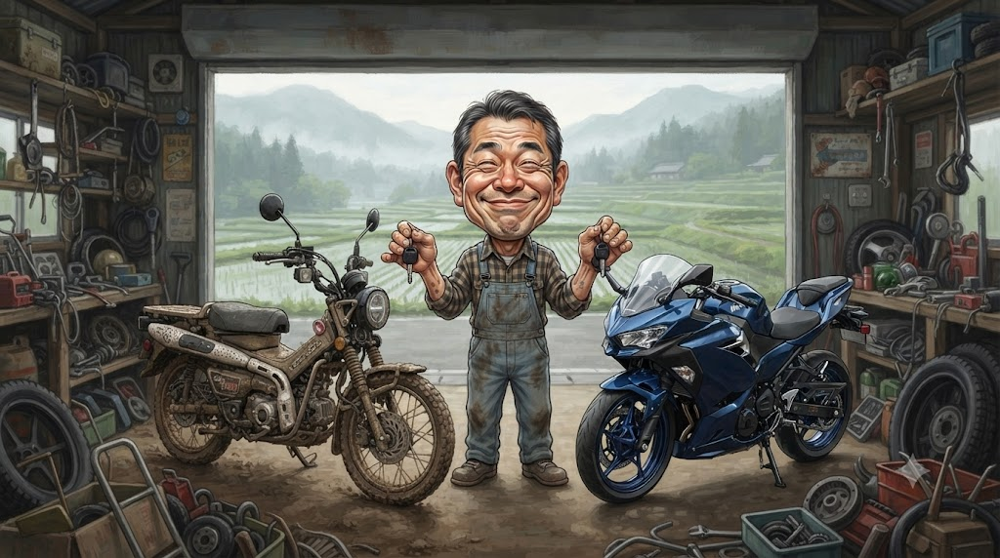
鍵は2本。だから、どちらで行くか迷わない。
レーサー系 ― パワーバンド × 一般道 × 楽しみ方
自由になった中型の枠で、最初に心が動いたのはフルカウルのレーサー系——YZF-R25、Ninja 250・400の格好良さだった。中型の検討は、ここから始まる。同じ普通二輪免許（〜400cc）で乗れるスーパースポーツを並べて見ていく。選ぶ軸は「パワーバンド（どの回転数でパワーが出るか）」「一般道での扱いやすさ」「楽しみ方の違い」の3つ。そして、この3軸すべてを最も大きく左右するのが気筒数（並列4気筒か／並列2気筒か）だ。
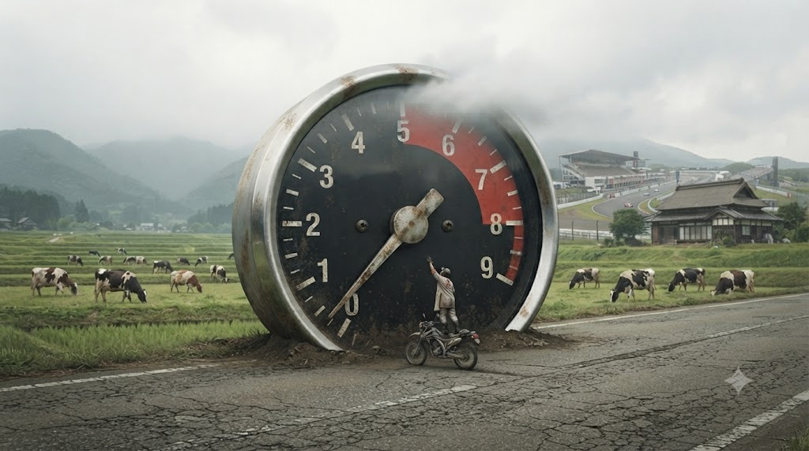
流して走れば、針はここ。本領は、雲の中にある。
| モデル | 気筒・排気量 | 最高出力 | 最大トルク | パワーバンド | 一般道 | 楽しみ方 |
|---|---|---|---|---|---|---|
| Ninja ZX-25R Kawasaki | 並列4気筒 249cc | 45PS (ラム46)/15,500 | 21N·m /13,000 | 超高回転型（1.3万〜）。低回転はスカスカ | △ | 回して4気筒サウンドを味わう。250最強のレーサー |
| Ninja ZX-4R Kawasaki | 並列4気筒 399cc | 77PS (ラム80)/14,500 | 39N·m /13,000 | 超高回転型。4気筒だが低中速も残す | ○ | 史上最強400の伸び＋咆哮。モードで懐も深い |
| CBR250RR Honda | 並列2気筒 249cc | 42PS /13,500 | 25N·m /10,750 | ツイン最高の高回転型。下も4気筒より使える | ○ | 回す楽しさと実用を両立した最強2気筒 |
| Ninja 250 Kawasaki | 並列2気筒 248cc | 35PS /12,500 | 22N·m /10,500 | 中〜高回転バランス型。街も回しも無難 | ○ | 初フルカウルの定番。無理なく楽しめる万能さ |
| YZF-R25 Yamaha | 並列2気筒 249cc | 35PS /12,000 | 23N·m /10,000 | 中〜高回転バランス型。滑らかで扱いやすい | ○ | 軽快な「曲がる楽しさ」。ワインディング派の定番 |
| CBR400R FOUR E-Clutch Honda '26/9/18発売 | 並列4気筒 399cc | 58PS /11,500 | 38N·m /9,750 | 高回転型だが直4のきめで下も途切れない。E-Clutch＋TBW標準 | ◎ | 26年ぶりの4気筒400CBR。官能の直4を常用域から——新型CB400SFの「外装違い」 |
| YZF-R3 Yamaha | 並列2気筒 320cc | 42PS /10,750 | 30N·m /9,000 | 中回転トルク型。320ccで低中速に厚み | ◎ | 一段ラクに流せていざスポーツも。ちょうどいい中庸 |
| Ninja 400 Kawasaki | 並列2気筒 399cc | 48PS /10,000 | 37N·m /8,000 | 低中速トルク型。常用域の扱いやすさ随一 | ◎ | 街・ツーリング・峠の万能王。飛ばさず気持ちいい |
| CBR400R Honda | 並列2気筒 399cc | 46PS /9,000 | 38N·m /7,500 | 低中速トルク型。ツアラー寄りの穏やかさ | ◎ | 400Xの兄弟のフルカウル。E-Clutch仕様も選べる万能ツアラー——直4のFOURとは別モデル |
| GSX250R Suzuki | 並列2気筒 248cc | 24PS /8,000 | 22N·m /6,500 | フラットな低回転型。全域で穏やか | ◎ | 見た目SS・中身ツアラー。肩の力を抜いて流す |
一般道：◎＝常用域（3,000〜6,000rpm）でトルクが出て気楽／○＝ふつう／△＝回さないと本領が出ず、街では持て余しがち。最高出力・最大トルクは各社公表諸元（ラム＝ラムエア加圧時）。
縦軸＝最高出力（ノーマル値・PS）、横軸＝パワーピーク回転数。右へ行くほど「回してナンボ」のレーサー的性格、左へ行くほど低回転で楽。ZX-4Rだけ突出して高い（77PS）のが一目で分かる。円はクリックで各公式ページへ。
紛らわしいが、現行の2気筒CBR400R（46PS・99.99万〜、E-Clutch仕様108.9万）とは別モデルで併売——マップでは左下（低中速トルク型・400Xの兄弟）にいて、性格はツアラー寄り。つまり'26年秋から、400のCBRは「2気筒で流すR」と「直4で歌わせるFOUR」の2系統という珍しい布陣になる。
パワーバンドって何？ ── 4気筒と2気筒で何が違う
パワーバンド＝エンジンが元気にパワーを出す回転数の帯のこと。同じ排気量でも、この帯が「上（高回転）」にあるか「下（低回転）」にあるかで、乗り味はまるで変わる。
- 並列4気筒（ZX-25R・ZX-4R）：1気筒あたりが小さく軽いピストンを高回転までブン回せる。そのぶんパワーバンドは1万回転より上に集中し、そこまで回すと猛烈に伸びて甲高いマルチシリンダー・サウンドが出る。半面、街中の低回転ではトルクが細く「思ったより前に出ない」。回してこそのエンジン。
- 並列2気筒（Ninja 400・R3・CBR250RR ほか）：ピストンが大きく、低〜中回転から太いトルクが出る。パワーバンドが下寄りなので、そんなに回さなくても実用速度でしっかり加速する＝一般道で扱いやすい。CBR250RRのように高回転まで回して楽しめる「スポーツ寄りのツイン」もあれば、GSX250Rのように全域フラットで穏やかな「ツアラー寄りのツイン」もある。
この帯が上か下かが、そのまま刺激と気楽さを振り分ける。なお本ページのもう一本の軸＝鼓動感（ドコドコの空冷シングル。後の「乗り味で選ぶ」章で掘る）は、この“回転の軸”とはまた別物だ。
楽しみ方の3タイプ ── 回す／流す／その中間
レーサー系の「楽しさ」は一つではない。パワーバンドの位置ごとに、気持ちよさの種類が違う。
- ① 回して味わう（超高回転4気筒）＝ZX-25R・ZX-4R：ワインディングやサーキットで1万回転以上を使い切る快感と、4気筒の咆哮。速度以上に「エンジンを操っている実感」を楽しむタイプ。街オンリーだと真価の1割も味わえない、という割り切りが要る。
- ② その中間（高回転ツイン）＝CBR250RR・Ninja 250・R25：普段は無理なく流し、その気になれば高回転まで回してスポーツも味わえる二刀流。1台で日常と趣味を兼ねたい人に一番バランスがいい。
- ③ トルクで流す（低中速ツイン）＝Ninja 400・R3・GSX250R：飛ばさなくても気持ちいいのが持ち味。太いトルクでゆったり流し、景色やツーリングそのものを楽しむタイプ。GSX250Rは見た目こそSSだが中身は完全にこの方向。
暴走族をやらずにZX-4Rに乗るために ― サーキット以外ではずっと1速で走りたい、その自覚がある人だけが買っていい
- 操作は身体で覚えるしかない。だから要求される操作が少ない車から始める（冒頭①）。多い車は身につく前に対処に追われる。
- 「どんなときにフラつくか」は経験を積めば予測できる。冒頭②のとおり軽さは加速では長所、外乱では短所。予測できる人には情報、できない人には怖さになる。
だから技術を2つに分けて積む。低速でサーキットの技術（寝かせて起こす）、高速で公道の技術（まっすぐを保つ）。1台で両方を公道でやるから暴走になる——2台持ちはそのためだ。
ZX-4Rが公道で得られるものは、他の400と同程度だ。前半で数字で確かめ、後半で2台持ちを含む道のりを描く。
ZX-4Rが欲しい。高回転を維持して楽しめて、最速。モンスターマシンだ。公道では1速縛りプレー。ギアなんてめんどくさいものは無視する男気。エンジンを痛めつける？それがどうした。
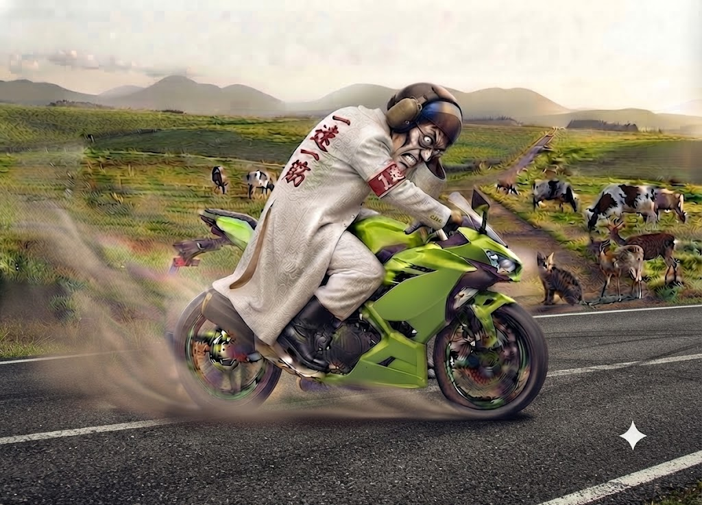
一速一筋。モンスターバイク。
ふざけて見えるだろうが、数字を出せばZX-4Rの仕様どおりの走り方だと分かる。
その前に ― 公道の狭さと、教習所で確かめられること（一本橋・急制動）
ZX-4Rはホイールベース1,380mm・キャスター23.5°。（長く・寝ているほど直進が据わる。ジオメトリ比較）エリミネーター（1,520mm・30.0°）より短く、立っている。短いホイールベースと前傾ハンドルは、低速の一定速度を保つには走りづらい。一本橋を楽しめる人でなければ、ストレスになる。
冒頭の「1速縛りプレー」も冗談ではない。高回転の維持と最速を公道で実行すると、本当にずっと1速で走ることになる。
教習所の1速のままのギッコンバッコンに一本橋のフラフラが重なり、それを毎日の国道で続けることになる。
いま教習中なら教習で確かめられる。普通二輪の技能教習は第一段階9時限＋第二段階8時限（普通免許あり）。
| 課題 | 段階 | 通算時限の目安 |
|---|---|---|
| 一本橋・スラローム | 第一段階の後半 | 6〜8時限目 |
| 急制動（40km/hから） | 第二段階の中盤 | 12〜14時限目 |
低速バランスが好きかは、6〜8時限目の一本橋で体で分かる。
急制動は17時限で唯一「回して、速度を素早く作る」課題だ。3速で40km/hに乗せるときのエンジン音を覚えておいてほしい。
ZX-4Rが公道で得るものは、他の400と同程度 ― 数字で確かめる
なぜ初心者は、ZX-4Rに“騙される”のか。
カタログの数字も雑誌の記事も正確だ。いちばん大事なことが書かれていないだけだ。
ZX-4Rは、サーキットで楽しむために作られた機械である。
カタログにあるのは「77PS」「14,500rpm」「クラス唯一の並列4気筒」と、公道を走るきれいな写真だけ。どこで使う機械なのかは書かれていない。乗り慣れた人には言うまでもないからだ。
使わなければ無駄金。使えば、違反と事故。
サーキット用の機械なのに、走る場所は公道しかない。買ったあとの行き先は二つに一つだ。
| その後 | 何が起きるか |
|---|---|
| サーキットに行かない | 77PSは一度も使われずに終わる。100万円超のうち、使わない性能に払った分は戻ってこない。ただの高い買い物になる |
| 公道で性能を出す | それは速度超過であり、暴走運転だ。捕まるだけで済めばまだいい。統計はもっと厳しいことを示している |
後者について、米IIHSの車種タイプ別データ。
| 車種タイプ | ライダー死亡率 （登録1万台あたり） |
|---|---|
| スーパースポーツ（ZX-4R系） | 22.5 |
| スポーツ（それ以外） | 10.7 |
| ツアラー | 6.5 |
| スタンダード・クルーザー（直立） | 5.7 |
出典：IIHS（米国道路安全保険協会）。車名別でなく車種タイプ別、2000年代半ばの米国登録データ。ABS付きは致死事故が22%低い。
使わなければ無駄金。使えば違反と、この数字。以下ではZX-4Rの「速い」を数字で確かめ、最後にどうすればZX-4Rに乗れるのかを考える。答えはある。ただし「いま買う」ではない。
乗ったことのない1台をスペックだけで選び切ることはできない。表や物差しは正解を当てる道具ではなく、一番良い1台にたどり着くための“正しい失敗の仕方”の第一歩だ。
「選ぶ」という経験について
鉛筆1本でも職業でも、たくさん試してから選ぶのが望ましい。だが時間も費用も足りない。その不足の中でバランスを探すことが、「選ぶ」経験の中身だ。バイクはそれを安く練習できる。
回してナンボは、暴走族の走り。
高回転型は、回し続ければ速い。だが公道でやれば——加速で前を煽り、減速で嫌がらせブレーキ。思いやりの一定速度では性能が出ない。
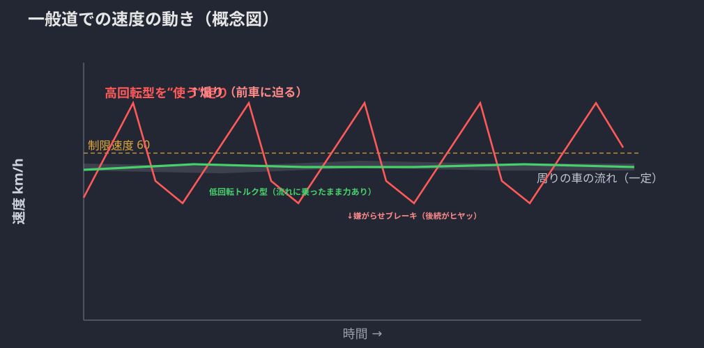
「流しながら本領を使う」は両立しない ― 6速60km/hは約3,700rpm、本領はそのはるか上
前を追い越さず後ろにも迷惑をかけずに流すと、6速60km/hで3,200〜3,800rpm程度（実際のギア比から計算した値。ZX-4Rは3,680rpm）。本領のパワーバンドはこのはるか上で、入るにはギアを落とすしかない——それは一定速度を捨てる走り＝暴走側だ。
カタログの最高出力は、公道の速さではない。
最高出力はサーキットの数字だ。ZX-4Rの77PSは14,500rpmで出る値で、一般道でその回転は使わない。公道で効くのは低回転で出るトルクと、それをタイヤに伝えるギアだ。ただし低回転のトルクは公表されていない。
トルクと馬力の関係（回転数を介した言い換え）
馬力はトルクに回転数を掛けた量で、同じトルクでも回すほど大きくなる。一般道では回さないので、残るのはトルクとギア比だ。
公式諸元だけで言えること（大型を混ぜて確かめた）
以下は公式のギア比・タイヤ径・トルク値からの計算値。
トップギア60km/hの回転が、最大トルク回転の何割か。ほとんどの車で0.38〜0.44に集まる。
- MT-07 0.39
- CB400SF 0.39
- Ninja250 0.42
- Ninja400 0.44
排気量にもクラスにも関係がない。
逆側の外れ値はGSX250R（0.67）とCB125R（0.63）。60km/hで既に本領の手前だ。力は小さいが、いちばん公道向きだ。
大型との差は露骨だ。60km/hトップギアの回転はMT-07が2,520rpm、W650が2,161rpm——400が3,200〜3,700rpm回すところを半分強だ。最大トルクもMT-07が67N·m、W650が56N·mで、400の37〜39N·mの1.5〜1.8倍ある。
大型を取れないうちは我慢するしかない。公道なら400ですら要らないほどのパワーがある。250でも十分、125がちょうどいい。
※計算値・出典は 駆動系データ（§1 公式諸元／§2 計算）。
重さで割り直しても同じ（補足：オレンジ＝日常、青＝最高速）
トルク÷(車重＋体重60kg)で、アルファードを1とした倍率で並べる。見たいのはオレンジの「低速トルク比」。青の「総合パワー比」は最高速200km/hの指標で、日常とは別物だ。
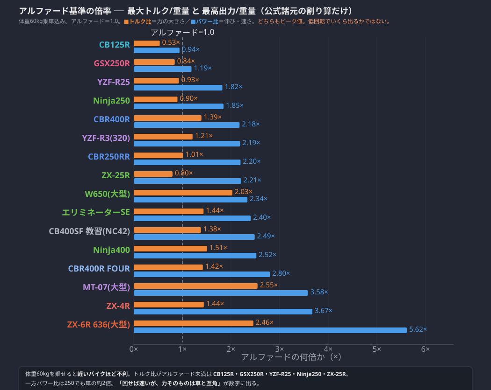
60km/hでパワーを楽しむなら、1速で。それでもピークには届かない。
公表値は「最大トルクが何回転で出るか」だ。ギア比とタイヤ外径を掛ければ、そのピークが時速何キロかが出る。
ZX-4Rをギアごとに見る。
| ギア | 60km/hでの回転数 | トルクのピーク（13,000rpm）に届く速度 |
|---|---|---|
| 1速 | 10,392rpm | 75km/h |
| 2速 | 7,294rpm | 107km/h |
| 3速 | 5,746rpm | 136km/h |
| 4速 | 4,731rpm | 165km/h |
| 5速 | 4,092rpm | 191km/h |
| 6速 | 3,680rpm | 212km/h |
いちばん回るのは1速で10,392rpm。ピークの13,000rpmに届かない。届かせるには1速のまま75km/hまで引っ張ることになり、速度超過だ。ギアを上げれば回転は下がる。
これが「回してナンボ」の正体だ。速度は法定内でも、やっていることは暴走と変わらない。
しかも1速は、最高出力の14,500rpmまで回せば84km/hまで出る。一般道は1速で足りてしまい、ギアを変える必要が無い。（75km/hは最大トルク13,000rpm、84km/hは最高出力14,500rpmに達する速度。どちらも1速のまま）
アクセルを戻せば強烈なエンジンブレーキが来る。全開か全閉しかない走り方は、教習所で「悪い運転の見本」と教わったものだ。
誰もやらない。1万回転の音は住宅地で通せないし、エンジンは2.8倍多く回る。1速のまま1万回転で走る人がいたら、モンスターだ。
では、なぜ買うのか。サーキット用の機械だと書かれていないからだ。理由を並べる。
| 買う理由 | 実際にはどうなるか |
|---|---|
| 速いから | 公道では他の400と差が出ない（前節のとおり） |
| 直4の音とフィールが良いから | 味わうには回すしかない。つまり1速＝暴走の走り |
| いつかサーキットに行くから | 行かなければ、ただ持っているだけになる |
| 見た目が好きだから | フルカウルの400は、並べても見分けにくい。ライムグリーンのKRTカラーはNinja400にもあり、外装もカラーも後から変えられる。36万円は、その細部の差に払うことになる |
行かない人が選ぶ理由は「1速で回して走りたい」しか残らない。ZX-4Rが公道で似合うのは、1速だけで走り、ずっと一本橋を渡っていたい人だ。
章の最初の急制動、3速まで回して40km/hを作ったあの走り。公道はあれを毎日続けるのに近い。あれよりうるさく、あれより遅い。ならば条件も定まる。
| この2つに「はい」と言えるか | 答え |
|---|---|
| 「サーキット以外では、ずっと1速で走りたい。ギアなんて変えたくない」 「短いホイールベースとセパレートハンドルで、低速の一本橋をずっと渡っていたい」 | → ZX-4Rを買っていい |
| どちらかでも「そうは思わない」 | → 他の400にすべき |
1速で走り続けると何が起きるか。
| 起きること | 中身 |
|---|---|
| うるさい | 60km/hで1万回転。住宅地では通報されてもおかしくない。周囲からは暴走にしか見えない |
| エンジンが減る | 同じ1kmでも6速の2.8倍回る。走行距離は同じでも、中身は3倍近く痛む |
| ギッコンバッコン走る | 1速はアクセルの動きがそのまま速度に出る。前の車に合わせようとすると、開けて、戻して、また開けての繰り返しになる。スクーターで全開と戻しを繰り返すのと同じ動きだ |
| 減速が急になる | 1万回転でアクセルを戻すと、エンジンブレーキが強く効く。後ろの車は驚く |
| 一定速度を保ちにくい | わずかなアクセルの動きで回転が大きく振れる。まっすぐ流すだけで気を使う |
| 燃費が悪い・熱い | 回転が高いぶん燃料を使い、エンジンも熱を持つ |
| 楽しくない | 6速もクラッチも使わない。変速して走る楽しみは、そこには無い |
この痛みを覚悟で走るのが男らしいといえば男らしい。モンスターだ。空気を読まず、なんでも全力で取り組み、疲れても痺れても痛くても、周りから白い目で見られても気にしない。熱い男。それがカワサキの男らしさだ。
見た目も他の400で代替できる。それでも欲しいなら理由は憧れだ。憧れを性能と取り違えなければいい。章の後半で扱う。
性能を使うほど、機械は減る。だから中古が難しい。
同じ60km/hを1km走っても、1速なら6速の2.8倍エンジンが回っている。走行距離は同じでも、エンジンにとっては3倍近く走ったことになる。
4気筒は点検箇所もツインの倍ある。プラグは4本、バルブは16個。回して楽しんだ個体ほど、中身は進んでいる。
「性能を絞り出す」と「エンジンを痛めつける」は同じ走りだ。痛むと知ったうえで、なお回す。それがこの趣味の中身である。
痛めずに乗る方法はある。静かに流すことだ。だがそれは性能を使っていない状態だ。回し切って遊びたいなら、回し切っても速度が出ない車体に乗ることだ。それが125で、後半で扱う。
静かに流すなら6速に入れる。回転は3,680rpm。本領には遠く届かない。静かに走れば性能は眠り、性能を使えば暴走になる。
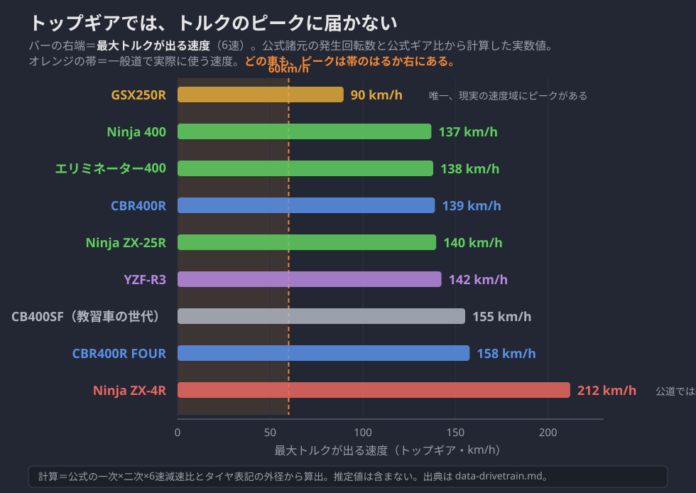
他の400は137〜158km/h。ZX-4Rだけが212km/hと群を抜いて遠い。現実に出しうる速度にピークがあるのはGSX250R（90km/h）だけだった。公式諸元とギア比から出る数字だ。
GSX250Rの最高出力は24PSと控えめだが、90km/hは高速道路なら合法に届き、60km/h・6速（4,352rpm）でも性能のおいしいところに入り始めている。公道でピークに手が届くのは、この1台だけだ。
ずっと1速で走るのが男らしいといえば、男らしい。
一本橋を渡り続けるのが男らしいといえば、男らしい。
かなり変わった趣味だと思う。モンスターである。
4社の性格はこう出ている。
| メーカー | 性格 | この章での現れ方 |
|---|---|---|
| スズキ | 実用 | GSX250R＝唯一、ピークが現実の速度域（90km/h）。250で車検も不要 |
| ヤマハ | 値段とかっこよさのバランス | YZF-R3＝320ccという割り切りで、SSの格好と手頃さを両立 |
| ホンダ | 国内に合わせた最適化 | CBR400R＝トルクのピークが最も低い7,500rpm。Eクラッチも国内向け |
| カワサキ | 無茶苦茶 | ZX-4R＝77PS/14,500rpm。ピークは212km/h相当 |
この計算の中身（と、60km/hで何回転か）
速度＝回転数÷（一次減速比×二次減速比×6速比）×タイヤ外周。トップギア60km/hの回転数は——
- CBR400R 3,240
- エリミネーター 3,478
- Ninja400 3,504
- CB400SF 3,672
- ZX-4R 3,680
- CBR400R FOUR 3,710
- YZF-R3 3,791
- GSX250R 4,352
- ZX-25R 5,587rpm
6速で流すかぎり、ZX-4Rの回転数は他の400とほとんど変わらない。持て余すのは、その回転では本領の入口にも入っていないからだ。数値と出典は駆動系データの一覧にまとめてある。
公道で得られるものは、他の400と同程度。
「ピークに届かないのはトップギアの話だろう」——そのとおり。前へ出るときは3速に落とし、駆動力はギアで増幅される（3速は6速の1.5倍以上）。ただし3速の駆動力は計算できない。
公表トルクは最大トルク点と最高出力点だけで、どちらも常用域のはるか上。実測カーブもNinja400とYZF-R3の2台しか無く、400ccの直4——ZX-4R・CB400SF・CBR400R FOUR——はゼロ。いちばん知りたい3台が、いちばん根拠が薄い。
推定を使わず、力＝最大トルク÷(車重＋体重60kg)で並べる。
- Ninja400 0.163
- ZX-4R 0.156
- エリミネーター 0.155
- CBR400R FOUR 0.154
- 教習車CB400SF 0.150
- CBR400R 0.149
差は9%しかない。最上位はいちばん安いNinja400（81万4,000円）。77PSのZX-4Rは39N·mでも190kg、37N·m・167kgのNinja400に届かない。
9%を「勝ち負け」とは呼べない。カタログ値の割り算にその解像度は無い。言えるのは「同程度」までだ。
直4が確実に多く持つのは公道の外でしか使えない性能だけ。公道で得られるぶんは教習車CB400SFとも36万円安いNinja400とも同程度。価格差はサーキットでしか使えない「伸び」に払っている。
3速60km/hでも5,700rpm——本領の半分に届かない。使わない回転域の出力は、カタログの上にしか存在しない。
※出典と計算式は 駆動系データ（§1／§2）。捨てた推定は §4-1-3・§4-1-4 に不採用として残した。
弱点は一つだけ。コスパが悪すぎる。
ZX-4Rは乗って困る車ではない。実用域のトルクは足りるし、足回りも文句がない。前傾はきついが、フルカウル全部に言える。問題は、その「普通によくできている」にいくら払うのかだ。
| 車種 | 価格（税込） | 力 最大トルク÷(車重+60kg) | 伸び 最高出力÷(車重+60kg) |
|---|---|---|---|
| Ninja ZX-4R SE | 117万7,000円 | 0.156 | 0.308 |
| CBR400R E-Clutch | 99万9,900円〜 | 0.149 | 0.180 |
| エリミネーター | 85万8,000円 | 0.155 | 0.202 |
| Ninja 400 | 81万4,000円 | 0.163 | 0.211 |
4気筒の費用は車両価格では終わらない。整備費も保険も一段高く、プラグもオイル量も4気筒ぶん。77PSが活きるのはサーキットだけで、走行料やタイヤまで含めて初めて元が取れる。行かなければ差額は回収されない。
- ZX-4R＝240Hzのゲーミングモニターで、60fps上限のゲームを遊ぶ。上限は機械の外で決まっている。
- ZX-25R＝マウス感度を上げすぎて近くの的が合わない。
- スクーターなら＝30km/hの道に、100km/h仕様を積む。
価格は各社公式の2026年モデル（ZX-4R SE／Ninja 400／エリミネーター／CBR400R E-Clutch）。力・伸びは公式の最大トルク／最高出力を（車重＋体重60kg）で割った値で推定は含まない。ただしピーク値で、一般道の回転域ではない（非公表）。
ただし——ZX-4Rを諦めろという話ではない。間違いは「公道でZX-4Rを速く走らせようとすること」で、車が悪いのではない。ではどうするか。
手順はもう出ている。この章の冒頭に置いた「技術を2つに分けて積む」——低速でサーキットの技術（寝かせて起こす）、高速で公道の技術（まっすぐを保つ）——がそのまま手順だ。
だから手順は変えない。変えるのは「どの車でやるか」だ。
それでも乗るための道のり ― 2台持ち（公道用×サーキット用）を含むロードマップ
道は二つ ― サーキットで回すか、公道でトルクか。
| 方向1：サーキットへ。高回転は、小さな排気量で。 | 方向2：公道で実質最速 | |
|---|---|---|
| 狙い | 高回転を維持して楽しむ・いつかZX-4R | 暴走にならず、公道で最速 |
| 使う車 | 小排気量の高回転型（51cc〜・旧車2stも） | 低回転トルクの400（Ninja400・エリミ・CBR400R） |
| 走り | 回して・攻めて・上達する | アクセルだけ・一定速度・思いやり |
| 本領の場 | サーキット | そのまま公道 |
方向1：サーキットへ。高回転は、小さな排気量で。
排気量が小さいほど回し切っても速度が出ない＝合法。高回転を“合法に”楽しめるのは小排気量高回転型だけだ。
これはZX-4Rの練習になる——軽さのフラフラ制御・高回転を保つシフト操作・前傾耐性。安く転んでも痛くない車で身体に入れる。
練習は場所で2つに割れる。広い道や走行会で積む全開の作法と、30m×20mの空き区画で刻む低速の型だ。後者には別の練習車が要る。
全開の作法用の1台はこうだ。
| 選ぶ基準 | 候補 | 個性 | 難点 |
|---|---|---|---|
| ZX-4Rへの近さ | Ninja ZX-25R | 唯一の現行250直4・レブ17,500rpm＝ZX-4Rの弟で性格が最も近い | 高い（新車90万超）。250で45PSは公道で持て余す |
| 直4に近い上位 | CBR250RR | 250直2・42PS/13,000rpm・SS前傾。高回転の作法と前傾耐性を手頃な中古（50万台〜）で | 直4の音ではない（直2） |
| 合法で回し切る 本命 | GSX-R125 | 125単・約134kg。制限速度でレッドまで使える唯一のクラス＝“全開の作法”を最安（中古25〜35万）で | 高速道路×・非力・直4でない |
どの125を選ぶか（現実的な候補）
本命＝GSX-R125（フルカウル・最軽量級）。
- 前傾ならKTM RC125
- 高回転単の官能ならAprilia RS125
- ネイキッドならMT-125・KTM 125 Duke
- YZF-R125は同じ土俵だが、逆輸入で割高
本命の134kgを含め、いずれも15PS前後・約134〜160kg。
旧車2スト（NSR250R・TZR250・RGV-Γ）や旧CBR250RR（MC22＝19,000rpmの直4）は理想形だが高騰・希少で手に入らない。
究極は50ccフルカウル（NSR50・TZR50）。回し切っても速度がいちばん出ない。ただし法定速度30km/hで公道の流れに乗れず危険だ。そんな場所は近くにない。
その125を全開で回せる場所すら近くにない。全開練習車は「回せる場所を確保できたら足す1台」で、いま買う1台ではない。一方、低速でのリーンインはZX-4Rなら必ず通る道で、近所の直線と30m×20mのパッドさえあればいま始められる。先に買うのは低速練習車だ。
低速でリーンインを刻む ― これがZX-4Rへの必須練習。
ZX-4Rの高速コーナーは体を内側に落とすリーンイン（ハングオフ）が前提だが、高速の恐怖の中で練習していない体は固まる。低速のうちに型を“考えずにできる”まで刷り込む——方向1の最重要ミッションだ。
練習は3段で積む。
- リーンアウトで低速の土台（8の字・フルロックUターン・スラローム）
- 定常円でリーンインを刷り込む＝直径10〜12mの円を20〜30km/hで回り、尻をずらし内膝を開き上体を内へ
- サーキットで解禁（菅生の走行会）
恐怖で固まらない体でZX-4Rに乗れる。
練習車は農作業と兼ねる ― 裏山の赤土坂も登るので、トラッカーになる。
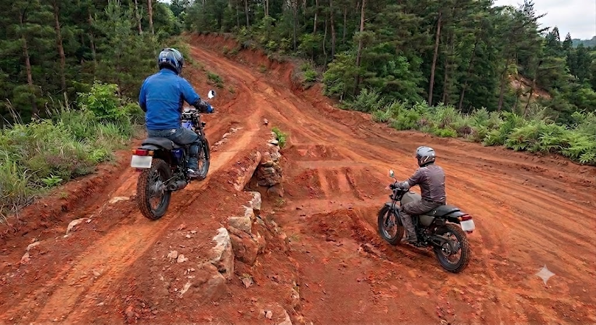
低速練習車は「トラッカー」だ。FTR223・250TRあたりのダートトラック型シングル。練習専用に1台を持つ余裕はなく、農作業で裏山の赤土坂を登る実用も兼ねる。
条件は4つ。
- ①静か
- ②17インチに近い車格
- ③30m×20mの小パッドで扱える軽さ・低さ・足つき
- ④裏山の赤土坂を登れるオフ性能
②と④は両立しにくいが、坂が中程度なら折衷できる。
本来の候補の選び方（後学の参考に）
| 条件の重心が動くと | 候補はこちら | なぜ |
|---|---|---|
| いまの折衷点 中程度の坂＋17寄り＋小パッド＋手持ち | トラッカー FTR223／250TR | 前後18インチ（FTR223）＝本格トレールの前21よりZX-4Rの17に近い車格・128kg/780mmで小パッド＆足つき最適・ブロックタイヤで中程度の坂も兼用。250TRは前19／146kgとやや重く、②では一歩譲る |
| ④オフを強める 坂が本格化・深い泥 | セロー250 →現行CRF250L | 21インチの本格トレール。超低速コントロール随一。ただし17への型移しは弱まる |
| ②17インチを強める 畑を切り離す | CB250R／ジクサー250 | 純17ロード単で寝かせ感がZX-4Rに最接近。ただし赤土坂は登れない |
| ③足つき・軽さを強める | トリッカー | 127kg/810mmでさらに扱いやすい。登坂力はセローに一歩譲る |
FTR223は練習にどう向くか——メリット・デメリットと配慮点
軽さと小回りが練習向きの本体。128kgという軽さと、最小回転半径2.0m・切れ角48°（左右）という寝かせなくても曲がれる旋回性が、30m×20mの小パッドでの反復練習を成立させている。一方でオフ車由来の柔らかい足まわり・キャブ車の暖機・前後で質の違うブレーキは、そのまま「練習中に配慮すべき点」になる。
| 観点 | メリット | デメリット・配慮 |
|---|---|---|
| 車重・取り回し | 128kgと軽く、極低速でも脚で支えやすい・立ちごけしても一人で起こせる | 軽い分、慣性が少なく低速でふらつきやすい——半クラ・視線という基本操作がより効く |
| 旋回性 | 最小回転半径2.0m・切れ角48°で、狭いパッドでも8の字・フルロックUターンに余裕がある | — |
| 足まわり | 前後18インチ・丸みのあるタイヤ断面で、寝かせ始めの感触がZX-4Rの17インチへの橋渡しになる | オフ車由来の柔らかい長ストロークサスペンション——ブレーキングで沈み込みが大きく、雑な操作は姿勢を乱しやすい |
| ブレーキ | 前ディスク・後ドラムで、後輪はロックしにくくリアブレーキの当て方を覚える練習に向く | ドラムはディスクと効き方の質が違う。ZX-4Rの後輪ディスクへ感覚をそのまま持ち越せない |
| エンジン | 単気筒・低中速型で、極低速域のスロットル操作が単純 | キャブ車・生産終了車——アイドリングが落ち着くまで暖機が要る。冷間のまま練習に入るとエンストしやすい |
出典・全諸元（キャスター角25°45′・トレール84mm・最小回転半径2.0m・切れ角48°・前期/後期の出力トルク差など）はdata.md §9-C。
FTR223は前後とも同一サイズ（120/90-18）で前後共用の銘柄は少ない。いまは練習優先——最初は中古入手時のオンロード寄りタイヤのままで構わない（摩耗・経年が進んでいれば同サイズで交換）。ブロック/デュアルパーパス（純正相当のダンロップK180など）は、農作業で裏山を登る運用を始める段階で履き替えれば足りる。諸元・適合の出典はdata.md §9。
FTR223を実際に手に入れる ― 買い方・維持・農作業兼用・候補の再検証。
車種はトラッカーで決まった。ここから先は「どれを買うか」ではなく「どの個体を、いくらで、どう維持し、何に使うか」だ。生産終了から10年経った車を選ぶ以上、決め手はカタログではなく個体の状態と部品の残りになる。4つに分けて置く。
① 中古はどれを買うか ― 前期(19PS)か後期(16PS)か、いくらか
| 項目 | 平均 | レンジ |
|---|---|---|
| 支払総額 | 37.18万円 | 25.8〜52.8万円 |
| 本体価格 | 31.72万円 | 21.8〜47.9万円 |
| 諸費用 | 5.97万円 | — |
台数がいちばん集まるのは29万円（10台）、次いで33万円（7台）——本体30万円前後が市場の中心だ。乗り出しで40万円弱を見ておけばいい。
前期か後期か。掲載48台の年式分布は前期（2000–2006）28台に対し後期（2007–）13台で、選べる数は前期が倍ある。2016年まで作られたが2009年以降の年式は市場に出てきておらず、後期の実質的な選択肢は2007–2008年式に集中している。
相場・年式分布はdata.md §9-D（2026-07-29時点・Webike掲載48台）。
② 現車で見る4点 ― 既知の持病と、その確かめ方
FTR223の弱点は分かりきっている。分かっているということは、現車で確かめられるということだ。順に手を動かす。
| 見るところ | 出る症状 | その場での確かめ方 |
|---|---|---|
| インテークインシュレーター ゴムの硬化・亀裂＝二次エア | アイドリングが異常に高い・ハンチング・始動性悪化・オーバーヒート | 目視でひび割れ。指で押して弾力を見る。見えにくい下側を懐中電灯で照らす——ここが本命 |
| CDI 熱によるコンデンサ・はんだの劣化 | 温間時だけエンスト。冷間では絶対に出ない | 十分に暖機してからアイドリング放置と再始動。冷間の試乗だけで判断しない |
| レギュレータ | バッテリーがすぐ上がる・ヘッドライトが暗い・走行中に止まる | テスターで冷間／始動後／回転上昇時の3点の電圧。全灯火の動作とアイドル時のライトの安定 |
| カムチェーンテンショナー | 「カタカタ」「ジャラジャラ」の打音。放置するとバルブクラッシュ＝致命傷 | 冷間・温間の両方でアイドリング時の音を聴く。ここだけは妥協しない |
加えて放置車のキャブ（ジェット詰まり——冷間始動の一発目を見せてもらう）と、スカチューン車の配線処理（電装トラブルの温床）。
③ 維持 ― 部品供給はちょうど10年目、自分で直せるのはどこまでか
FTR223のエンジンMD33Eは、一族で共有されている。
| 車種 | 生産年 | 関係 |
|---|---|---|
| SL230 | 1997– | MD33Eの初出 |
| XL230 | — | 同系 |
| FTR223 | 2000–2016 | 本命 |
| CB223S | 2008–2016 | 姉妹車。ホイール等が共通 |
FTR223とCB223Sは2016年9月施行の平成28年排ガス規制で同時に生産終了した（このとき他社を含め60車種以上が消えている）。
※「10年前後」はメーカー横断の一般論で、FTR223固有の公表値ではない。個別部品の可否は品番で照会するしかない。一族間の流用（エンジンマウント・チェーンライン・電装）は前例が多いが、メーカー公表の互換情報ではない。
自分でやる範囲と、やらない範囲を先に決めておく。手順書どおりに分解・組み立てできるものは自分でやり、基板に触る修理はやらない（はんだを使わない方針）。壊れた電装は直さず、丸ごと替える。
| 作業 | 扱い | 理由 |
|---|---|---|
| インシュレーター交換 | 自分でやる | ゴム部品のボルトオン交換。持病の本命がここなので、覚えると効きが大きい |
| キャブOH（分解清掃） | 自分でやる | ジェット類の清掃。手順が確立していて、部品も安い |
| オイル交換 | 自分でやる | 容量1.0Lと少ないので劣化が早い。2,000〜3,000kmまたは半年ごと。低速多用・泥の中を走るなら短めに |
| CDI・レギュレータ | アッシー交換のみ | 中身はコンデンサとはんだの劣化。基板修理はやらない——丸ごと替える |
| カムチェーンテンショナー | 店に出す | 誤ればバルブクラッシュ。失敗のコストがエンジンそのもの |
④ 農作業兼用の実装 ― キャリアは耐荷重2〜3kg。資材は運べない。
「農作業と兼ねる」と書いたが、兼ねられる範囲には数字の上限がある。リアキャリアの耐荷重を見ると、それがはっきりする。
| 製品 | 耐荷重 |
|---|---|
| キジマ リアキャリア | 3kg |
| ラフ&ロード RALLY591 アルミキャリア | 2kg |
だから定義をこう直す。FTR223は「資材を運ぶ足」ではなく「人が坂を上がる足」だ。資材の運搬は最初から別手段の仕事——この線を引いておかないと、キャリアを付け足し続けて解決しない問題を追うことになる。
加えて、FTRはリアフレームが短く、キャリアによっては延長ステーが要る。タンクは7.2Lと小さい（姉妹車CB223Sは11L）ので、畑と練習パッドを行き来する運用なら給油の頻度も勘定に入る。
⑤ 候補の再検証 ― 3軸で並べ直しても、残るのはFTR223だけ
候補を選び直す軸は3つしかない。①トラッカー程度のオフ性能（赤土坂が登れればよく、本格トレールは過剰）、②ZX-4Rへの型移し（17インチに近い車格）、③リーンイン練習への適性（軽さ・小回り・寝かせやすさ）。この3軸で並べ直す。
| 車種 | 前／後タイヤ | 装備重量 | シート高 | 軸距 | 最小回転半径 | 切れ角 |
|---|---|---|---|---|---|---|
| FTR223 | 120/90-18 120/90-18 | 128kg | 780mm | 1,395mm | 2.0m | 48° |
| CB223S | 110/90-18 130/80-18 | 135kg | 780mm | 1,395mm | 2.0m | 未確認 |
| 250TR | 90/90-19 110/90-18 | 146kg | 775mm | 1,420mm | 2.4m | 44° |
| グラストラッカー ビッグボーイ | 100/90-19 130/80-18 | 139kg | 790mm | 1,405mm | 2.4m | 40° |
| グラストラッカー （標準） | 3.00-18 120/80-17 | 136kg | 750mm | 1,325mm | 未確認 | 未確認 |
読み取りは4つ。
- CB223SはFTR223と同一シャシーだった。軸距1,395mm・シート高780mm・最低地上高175mm・トレール84mm・最小回転半径2.0mが完全に一致する。違いはタイヤ（オンロード）・重量（+7kg）・タンク（11L 対 7.2L）だけで、+7kgの一部はタンク容量差3.8L≒2.8kg分で説明がつく。
- ③はFTR223が全項目で最良。最軽量128kg・最小回転半径2.0m・切れ角48°。250TR（146kg・2.4m・44°）とビッグボーイ（139kg・2.4m・40°）は3項目とも下回る。18kg重くて回転半径が0.4m大きい車で、30m×20mのパッドを回すことになる。
- ②でFTR223を上回りうるのはグラストラッカー標準の後17インチだけ。だが前3.00-18のロード寄り・軸距1,325mmと引き換えに①を失う。250TR・ビッグボーイの前19インチは①には有利だが、前輪径が大きいほど倒し込みが緩慢になり、②③で遠のく。セロー250・トリッカーの前21インチは①が過剰で②③が最も遠い。
- 結論：3軸すべてで上位に残るのはFTR223だけ。唯一の対抗はCB223S——②③はシャシーが同一なので同等だが、7kg軽く切れ角48°のFTR223が③で上回り、CB223Sが劣る①はタイヤ交換で埋められる。逆に、11Lタンクと後年式（2008–）の程度を重く見るならCB223Sが視野に入る——同じシャシーなので練習の質はほぼ変わらない。
諸元の出典（Honda公式CB223S・Wikipedia 250TR／グラストラッカー・goobike）はdata.md §9-H。相場は§9-D、持病は§9-E、部品供給は§9-F、積載は§9-G。
練習場は、近場のパッドで足りる。
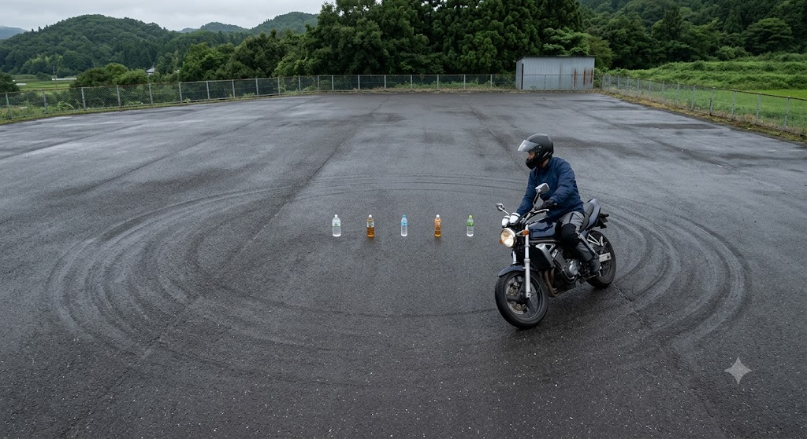
ペットボトル5本と、空いた舗装。
近場の空いた舗装パッド（キャンプ場や業者の駐車場）にペットボトルを5〜6本置くだけ。下の50m×25mの配置を上から順にこなせばいい。
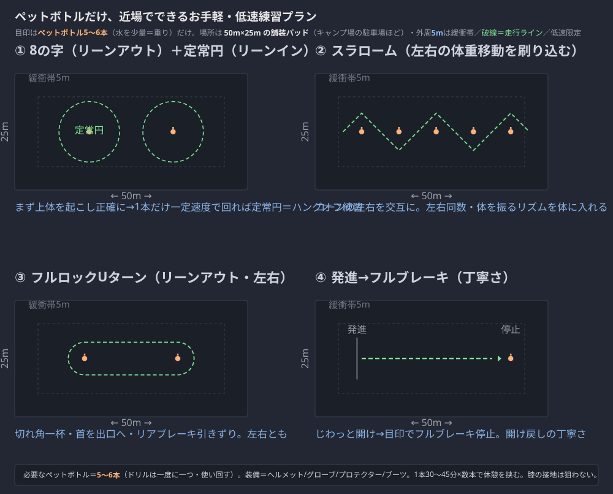
練習メニューと時間割（順番）
| 順 | ドリル | 時間 | 狙い（身につくもの） |
|---|---|---|---|
| ① | ウォームアップ（外周を最徐行） | 10分 | 脱力・視線を上げる・タイヤ/ブレーキを温める |
| ② | 超低速バランス（直線を“一番遅く”） | 20分 | 半クラ・リアブレーキ・スロットルの三点操作＝土台 |
| ③ | 8の字・フルロックUターン（リーンアウト） | 30分 | 上体を起こして正確に。旋回の基礎・左右均等 |
| ④ | スラローム（リーンアウト・左右） | 20分 | 左右の体重移動のリズムを体に入れる |
| ⑤ | 定常円でリーンイン（必須・中核） | 40分 | 一定速度の円でハングオフの型を刷り込む＝ZX-4Rの下地 |
| ⑦ | クールダウン（最徐行周回） | 5分 | 力を抜いて終える |
疲労は立ちゴケ・転倒の最大原因なので、45分やって10分休むを数本。膝の接地は狙わず、姿勢が固まってから少しずつ。仕上げは菅生のジムカーナ練習会／走行会へ。
場所の条件と装備（安全の大前提）
公道ではやらない。許可を取った私有地／遊休地／駐車場で。
- 50m×25m前後の全面フラット舗装
- 外周5mに障害物ゼロ
- 水路や崖が近くにない
- 明るく乾いた路面で低速限定
- 装備＝ヘルメット/グローブ/プロテクター入りジャケット/ブーツ
- 目印は水を少し入れたペットボトル5〜6本
もっと狭い区画なら＝30m×20m の最小プラン
狭い区画／騒音を抑えたいなら、定常円リーンイン＋8の字＋フルロックUターンの3つに絞る。小さい円ほど低い速度で深く倒せる（バンク角＝速度²÷半径）ので、リーンインの下地は安全に刻める。
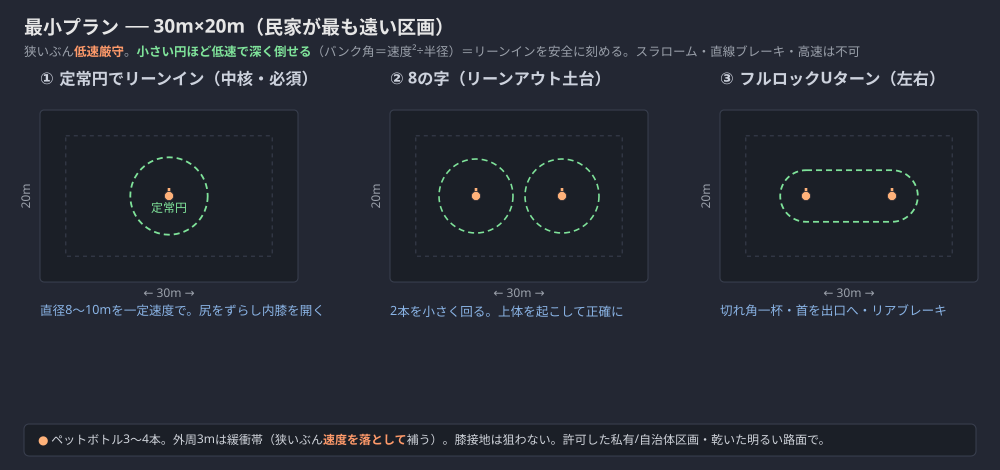
方向2：暴走にならず、公道最速。
回さず、一定速度のまま速い。低回転トルク型はアクセル操作だけで完結し、オートマ車のように扱えて暴走車両になりにくい。スクーターと同じで開ければ進み、それが60km/hの流れまで続く。②の普段使いはこの方向から選ぶ。
隠れた本命 ― CB400SFは“公道版ZX-4R”。
教習車でおなじみのCB400SFを見直したい。地味な「おっさんバイク」に見えて、中身はZX-4Rと同じ直4——教習の急制動で回したあの音だ。高回転の資質を残して低速向けに躾けてあるから教習車が務まる。直4を回して速度を作る体験は、ほとんどの人が教習所で済ませている。新型は58PS・187kgで、Ninja400と同等以上。直4は燃焼が小さく細かく続くので低回転でも力が途切れず、ツインの「トトト」に対し絹のように滑らかに出る。CB400SFはZX-4Rの官能を公道で使える姿にした“公道版ZX-4R”だ。弱点は前傾がなくサーキットに向かないことと重いことだけ。
サーキットに一度も行かないZX-4R乗りは、「陸サーファー」になる。
憧れを性能と取り違えた先にいるのが「陸（おか）サーファー」だ。ボードを積み、ウェットスーツを揃え、海には入らない人。サーキットに一度も行かないZX-4R乗りも同じだ。本番はサーキットにしかなく、行かないなら77馬力は1車線の国道で持て余される。憧れのバイクは陸サーファーのボードになる。
シューティングなら＝デバイスを一式揃えて、ランクマッチには行かない。
だから、公道用とサーキット用は分ける。
方向1と方向2は「どちらか」ではない。高回転と公道の速さは別の場所のものだ。1台で両取りするから暴走になる。答えは場所ごとに分ける——2台持ちだ。
スーパースポーツのライダー死亡率は登録1万台あたり22.5、ネイキッドやクルーザー（5.7）の約4倍。危ないのは軽量ハイパワーの日常使いで、サーキット走行ではない。ZX-4Rを毎日の国道で走らせるのは統計的にいちばん危ない使い方だ。
今すぐ買うのはZX-4Rではなく、次の2台——
| ①練習用 | ②普段使い用 | |
|---|---|---|
| 使う車 | 低速練習車＝トラッカー（FTR223・250TR） 方向1。農作業の裏山も兼ねる | 低回転トルクの400（方向2） |
| 役目 | 低速の型（リーンイン・8の字・フルロックUターン）を安く刻む | 毎日の一車線国道で、高速直線の加速・直進安定を体感 |
| 使い切り方 | 速度を出さずに、体の型を身体に入れる | アクセルだけで流れに乗れて暴走にならない |
※この表はいま買う2台だ。回し切る作法を積む全開練習車（125）は3台目の候補で、全開で回せる場所が近くにないため、いまは入れない。場所を確保できたときに足す。
①で低速の型を作り、②で毎日を走る。ZX-4Rは腕と資金を貯めてから迎える到達点だ。
全開練習車を足すなら17インチの125（GSX-R125やYZF-R125）。前傾も車格も、低速で刻んだ型がZX-4Rへ移る。回せる場所を確保してから。
2台持ち＝短い落とし竿と、遠くを狙う長い竿。防波堤からマグロ釣りキットで大物を狙うのも、男らしいといえば男らしいけどね。
②の担当は高速の加速感と、直線を据わって走る「バックストレート感」。練習場は毎日の一車線国道でいい。
直線主体の道では重さが美点になる。平滑で直線の続く一車線国道なら、CBR400R（195kg・軸距1,410mm・トレール102mm）とエリミネーター（178kg）が、軽いNinja400（167kg・軸距1,370mm・トレール92mm）より上に来る。
表も物差しも最初の1台を絞る地図にすぎない。気負わず乗り出せばいい。理想に目を奪われて足元を見失わないこと。
当面の1台 ― CBR400R / Ninja400 / YZF-R3 を、実際に走る道で比べる
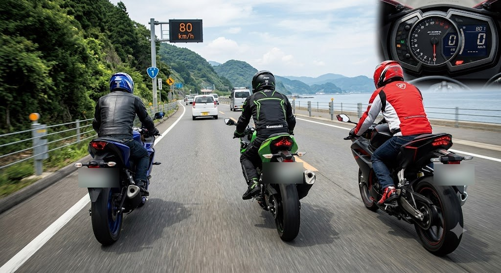
そのバイクで、どこを走ろうとしているのか？——80km/h、一車線、前が詰まる。カタログではなく、この道で比べる。
前章の結論は「2台に分ける」。①練習用は前章で検討した。残るのは②——ZX-4Rをいつか受け取るまで、毎日の一車線国道を走る当面の1台だ。
- 道＝一車線の二級国道が主。ときどき二桁の一級国道（これも一車線）。交通量はかなり少ない。人口30万を超える都市部は走らない。
- 曲がり＝ワインディングは走らない。ただし上限の想定として、半島の尾根線を走る海沿いの観光道路——稜線ゆえ海風を遮るものが無く、海を見下ろす中高速コーナーとアップダウンが連続する——を走れる性能は考慮しておく。
- 取り回し＝自宅の駐輪と、コンビニ・買い物の足にも使うから大事。ただし行き先はアルファードが楽に入る開けた敷地・店ばかり——つまり取り回しの物差しはアルファード比でよく、候補で最大の最小回転半径2.9m（CBR400R・195kg）でも詰まる場面はまず無い。
- 速度＝命の危険がある速度域は40〜60km/h——日常の巡航そのものが、既にそこにある。上限は80km/h、高速道路は走らない。無料区間の自動車専用道（制限70〜80km/h）も普段は走らないが、いざという時に80km/hの連続巡航へ応えられることは考慮しておく。
【候補】軸足を決める ― 軸足はZX-4Rに近いフルカウル3台。ただし近さは一本道ではない
【候補】絞り込みの道筋 ― 直4を外す理由と、オプション3枠の決め方― 47万円高い直4で、「力」は増えない
回さず、一定速度のまま速い。低回転トルク型はアクセル操作だけで完結し、オートマ車のように扱え、暴走車両になりにくい。
条件は「低回転で扱えて、いま普通二輪で買える400クラス」。挙がるのは6台。
- エリミネーター
- Ninja400
- CBR400R
- YZF-R3
- ZX-4R
- CBR400R FOUR
後ろの2台は直4で高い。ZX-4R SEが117万7,000円、CBR400R FOURが119万9,000円。ツインは72万6,000円〜100万円、最安のYZF-R3とは47万3,000円の差。
だから直4の2台は外す。この1台はいつかZX-4Rを受け取るまでのとりあえずの1台であり、公道の練習でもある——そこにZX-4R級の値段（117〜120万円）は釣り合わない。（CBR400R FOURは2026年9月18日発売で、いますぐ買えもしない。）残る低回転ツインは4台だ。
このうち軸足はフルカウルの3台——CBR400R・Ninja400・YZF-R3。ZX-4Rに姿勢も車体の形もいちばん近いのがフルカウルだからだ。なかでもCBR400Rは車重までZX-4Rとほぼ同じ（195kg 対 ZX-4R SE 190kg）——押し歩きの重さも、重さが作る据わりも、同じ体格で練習できる。章タイトルと章の地図のH・K・Yがこの3台で、この3台を実際に走る道で比べるのが本章の背骨になる。
- CB400SF（直4）＝音と伸びが近い。ZX-4Rと同じ399cc直4で、回すほど力が出る性格は同族だ（→ 前章「隠れた本命」）。
- 250勢（Ninja250・YZF-R25）＝ポジションが近い。フルカウルの前傾はZX-4Rに一番近い側だ。しかも3台のうち2台は250の車体そのもの（→ ①）だから、「車体だけ同じでエンジンが小さい」実験室のような物差しにもなる。
- 125＝リズムが近い。回し切って走る高回転型は、ZX-4Rの走らせ方そのもの。ただし数字は「届かない」側の物差しだ（→ ⑩）。
3台と比べることでこれらの良さが分かり、これらと比べることで3台の個性がはっきりする。以後の各節は「まず3台、必要ならこの枠を呼ぶ」の順で進む。
まず軸足の3台と、オプション1枠目のエリミネーターを並べて、顔を見せておく。
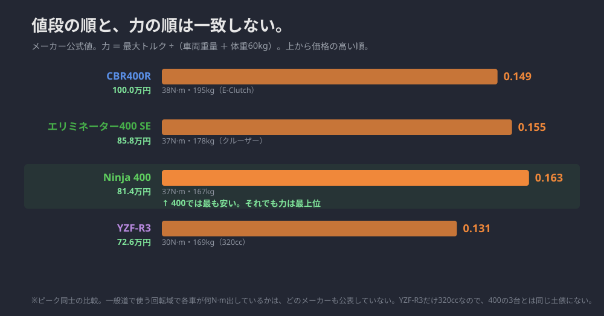
- Ninja400 0.163
- エリミネーター 0.155
- CBR400R 0.149
そしてこの「力」の中身は最大トルク ÷（車重＋体重60kg）だ。分子のトルクは400の3台で37〜38N·mとほぼ横並び——つまり順位を作っているのは、ほぼ分母の「軽さ」である。車体を軽くするだけで、見かけの性能は勝手に上がる。
では、軽くすればいいのか？次の表の「裏返すと」の行が、答えの半分を先に言っている。軽さは加速の正義で、速度域が上がるほど効く。だが同じ高速域で、軽さは風と轍に振られる側にも回る——性能と危険が隣り合わせになる。
裏を返せば、「速いバイク」は道で変わる。幅1mの路地裏の最速はスクーターだし、凸凹の土の道の最速はオフロード車だ。軽い車の数字も同じで、暗黙のうちに道を選んでいると読める。横風の無い40km/h前後の街だけを想定するか、路面と安全が保証されたサーキットを想定するか——「最速」をどこで測るかを狭めるほど、軽さの代償は表に出ず、カタログ上の性能は上がる。カタログが書かないのは、その「どの道を想定したか」のほうだ。
だから、この章は最初に道（80km/h・一車線・海沿い）を決めた（→ ⑩ 道の広さが本当の軸）。そのうえで物差しは速さだけでは足りず、安全側の性質（直進の据わり）を並べて測る。
そして、結論を先に書いてしまう——この章の答えはCBR400Rだ。理由はこの章全体で順に示していく。この章のコンセプトを一行で言えばこうだ——実は、エンジンにさほど差はない。だから、数字に表れない残りの場所を、1つずつ見ていく。章の地図の25セルは、その巡回路である。
YZF-R3はグローバル仕様で、世界で見ればバランスの塊だ——タイやインドの道でなら、最速かもしれない。Ninja400の加速は素晴らしい——命を賭けて走るつもりなら、最良かもしれない。そしてCBR400Rには、日本の道に合わせ込まれた数字に出ない性能——足回りの造りと、安全側の性質——がある（⑪の試乗たちが言葉にしている）。
※YZF-R3だけは0.131と一段低い（320cc）。※ピーク同士の比較で、一般道で使う回転域の実N·mは非公表（→駆動系データ）。
【候補】「CBR400R」は3つある（紛らわしいので先に整理）
- ①CBR400R＝399cc並列2気筒のフルカウル。候補はこれ。
- ②CBR400R E-Clutch＝①にホンダのEクラッチを付けた仕様、2026年5月発売（99万9,900円〜）。中身は①と同じ並列2気筒で、この章の物差し（低速の力）では①と同じ位置。
- ③CBR400R FOUR＝新設計の直4を積むフルカウルで、CB400SFのカウル付き兄弟。2026年3月にコンセプト公開、7月10日に諸元・価格発表、9月18日発売。
この章の「CBR400R」は断りがなければ①を指す。
| エリミネーター | CBR400R 並列2気筒 | Ninja400 | YZF-R3 | |
|---|---|---|---|---|
| 性格 | クルーザー | スポーツツアラー | スポーツ | スポーツ（320cc） |
| 姿勢 | 直立（最も楽） | やや前傾・快適 | 前傾 | 前傾（最もSS的） |
| 力 最大トルク÷(車重+60kg) | ○ 0.155 | ○ 0.149 | ◎ 0.163（最上位） | △ 0.131（320ccぶん細い） |
| 曲がりやすさ | △ 倒し込み遊びは苦手 | ○ 穏やか | ◎ 攻められる | ◎ 軽くよく曲がる |
| 裏返すと 同じ性質の別の呼び方 | ◎ 直進が最も落ち着く WB1,520mm | ◎ 重さで落ち着いている 195kg | △ 軽いぶんフラフラしやすい 167kg | △ 同じく落ち着きは薄い 169kg |
| 扱い | アクセルだけ | ツアラーで穏やか | ギアを使えば速い | 回して乗る（方向1寄り） |
- エリミネーター＝アクセルだけで扱え、交差点の実用は十分。前傾がないぶん寝かせて攻める遊びは苦手。
- CBR400R＝ツアラー寄りで、性格はエリミに近い穏やかさ。トルクは4台最大の38N·mだが195kgと重く、車重で割ると0.149＝400の3台で最も低い。
- Ninja400＝前傾があり、寝かせて攻めるのも守備範囲＝コーナーも走るならこれ。37N·mを167kgで受け、車重で割った力は4台の最上位（0.163）。
- YZF-R3＝320ccで力は最も細い（0.131）が、軽くてよく曲がり、性格は方向1（回して遊ぶ）に寄る。
選択肢として比較する250勢は、公道を念頭にした価格の安いYZF-R25とNinja250とする。
章の地図。何を・どの速度帯で測るかの表だ。色と記号はその場面で最も有利な車——H＝ホンダ CBR400R、K＝カワサキ Ninja 400、Y＝ヤマハ YZF-R3（以下この3文字で書く）。無色は差が出ないか根拠が無い場面。セルをタップするとその節へ飛ぶ。
| 項目 | 0〜10km/h押す・Uターン | 〜46km/h詰まる・交差点 | ★60〜80km/h本章の前提 | 100〜120km/h高速 | 120km/h超合法な道が無い |
|---|---|---|---|---|---|
| 車体の大きさ | 取り回しK+Y2.5m／780mm | 幅755対710mm | 据わりHトレール102 | 高速直進H255kg／1.06 | 超高速直進HWB1,410mm |
| 力と加速 | 発進Yギア倍率0.325 | 加速度K実測4.93秒 | 加速余力K実測2.83 | 伸びK0.211 | 最高速K実測175.8km/h |
| 安定感 | 支えるK167kg | 軽さの安心K+Y167/169kg | 横風・轍H質量差1割 | ウィーブH指標10.0 | 煽られにくさH軽さは短所だけ |
| 操作の多さ | 切り返しK+Y2.5m対2.9m | 詰まりHシフト2回 | 巡航回転H4,319rpm | 高速回転H5,399rpm | ギアの余り未計算 |
| 体の負担 | 足つきY780mm | 姿勢3方向 | 風・振動H差1,500rpm | 防風H | 前傾未検証 |
※価格・車検・航続は速度帯を持たないので表の外（→ ①の隣の補足「② 走り以外の数字」）。車体の大きさ行の〜46km/hは「幅」だが、公表値がミラー幅なので勝ち負けは出せない。
Yは0〜10km/hの場面（足つき・取り回し・発進）、Kは力と加速のすべて、Hはシフトの少なさ（詰まり）と60〜80km/hから上の「保つ」場面（据わり・横風・巡航回転）に集まる。速さの実測はKが全指標で1位だ。ただし同じ軽さが、速度を保つ場面では横風と直進の弱さに裏返る。出す速さはK、保つ速さはH——この章の前提の道（80km/h・一車線国道）で長く続くのは、保つ時間のほうだ。
補足各セルの一位は「その場面の勝者」で、「正解」ではない― 世の中全体で一位を立てると、毎回おかしくなる
各セルが指しているのは、候補5台の中での一位だ。同じ軸で世の中全体の一位を立てると、こうなる。
- 取り回し——モンキー（原付サイズの車格）
- 加速度・伸び——ドラッグレーサー（曲がれないし止まらない）
- 据わり・横風・轍——鉄道（レールから外れようがない）
- 操作の少なさ——スクーター（クラッチもシフトも無い）
- 足つき・姿勢——アメリカン（低いシートと楽な姿勢）
軸を1本だけ極限まで振ると、毎回この調子になる。どの軸も単独では選定基準にならない。3台がやっているのは、5本の軸の上で「ほどよい位置」を取り合うことだ。
補足カタログの読み方 ― 「売って得する」書き方と、「買って得する」読み方
同じ設計判断が、売り手の側からと買い手の側からで別の名前で呼ばれる。
| 設計判断 | 売って得する（書き方） | 買って得する（読み方） |
|---|---|---|
| 車体の出自 250の車体か、500の車体か | 軽さ | フラつき |
| エンジンの回し方 低回転型か、高回転型か | 最高出力 | 届かない本領 |
| 総減速比 ハイギヤードか、ローギヤードか | 操る楽しさ | シフトの多さ |
| 前傾の深さ ツアラーか、SSか | スポーティ | 体の負担 |
全部を左の列に倒すと、こうなる——原価を下げて高く売りたいなら、装備を外して「軽量化」と呼び、高回転エンジンでピークの数字だけを上げ、ガチャガチャ忙しいギアにして、体の負担を無視したポジションにする。カタログ上は、さも「性能が高い」ように読める。だから買う側は、右の列で読む。
以降の節は見出しのバッジで見分けられる——60〜80km/hのように速度帯が付いているものがこの表のセル本体、補足が付いているものはどのセルにも属さない土台や余談だ。急ぐなら速度帯のほうだけ読めばいい。
【車体の大きさ】据わりを買うと、取り回しを失う ― 大きい車体は、両方を同時にはくれない
【車体の大きさ】補足① CBR400Rは長い・重い・太い・低回転・大容量― 500の車体がベースだから
CBR400Rは、他の4台より長く・重く・太い。回転は低く、タンクは大きい。諸元7項目が、例外なく同じ方向を向いている。
| 指標 | CBR400R（500の車体） | 他4台（250の車体） | 差 |
|---|---|---|---|
| 前タイヤ | 120/70ZR17 | 110/70-17（4台とも同じ） | 幅+10mm＝大型車のサイズ |
| 後タイヤ | 160/60ZR17 | 150/60R17（Ninja400）／140/70-17（250勢・R3） | 250勢に対し+20mm |
| 車両重量 | 195kg | 166〜169kg | Ninja250比 +29kg |
| ホイールベース | 1,410mm | 1,370〜1,380mm | +30〜40mm |
| トレール | 102mm | 90〜95mm | +7〜12mm |
| 燃料タンク | 17L | 14L（4台とも同じ） | +3L |
| 総減速比（6速） | 6.349 | 6.735（Ninja400）〜8.597（R25） | 最もハイギヤード |
理由は一つ。CBR400Rだけが500の車体だからだ。他の4台は250の車体で——Ninja 250とYZF-R25はそのまま、Ninja 400とYZF-R3はその車体に大きいエンジンを載せている。
| 車体 | 車種 | 同じ車体だと言える根拠 |
|---|---|---|
| 250の車体 | Ninja 250 ／ Ninja 400 | フレーム・外装・サスが共通。車重差1kg（166 対 167kg） |
| 250の車体 | YZF-R25 ／ YZF-R3 | フレーム同一。ホイールベース・キャスター・二次減速比まで同値。車重差0kg |
| 500の車体 | CBR400R | CBR500R（471cc）の車体。エンジンはボア67.0mmを500のまま残し、ストロークを66.8→56.6mmに縮めて399ccにしている |
【車体の大きさ】0〜10km/h「取り回し」 ― 押し歩きとUターンで、体が受け止める重さ― 5台で最も苦手なのがCBR400R
エンジンが仕事をしない速度だ。押し歩き、駐車場での取り回し、Uターン——動かしているのは足と身体で、効くのは3つの数字しかない。
| 車種 | 最小回転半径 | 車両重量 | シート高 |
|---|---|---|---|
| CBR400R 500の車体 | 2.9m | 195kg | 785mm |
| Ninja 400 | 2.5m | 167kg | 785mm |
| YZF-R3 | 非公表 | 169kg | 780mm |
| Ninja 250 | 2.5m | 166kg | 795mm |
| YZF-R25 | 非公表 | 169kg | 780mm |
セル跨ぎ：この数字が切り返しの回数として効くのが操作の多さの行の「切り返し」、またがって止まるときに効くのが安定感の行の「支える」、体に来る負担として効くのが体の負担の行の「足つき」。
【車体の大きさ】〜46km/h「幅」 ― 街で効くのは、長さより幅― 差は45mm。うちどれだけが車体かは分からない
都市部のストップアンドゴーと、トロトロ流れる車列。この速度で車体の大きさが顔を出すのは、押し歩き（→ 「取り回し」）でも直進の据わり（→ 「据わり」）でもなく、横に何mm張り出しているかのほうだ。
| 車種 | 全幅 | CBR400Rとの差 |
|---|---|---|
| CBR400R | 755mm | — |
| Ninja 400／Ninja 250 | 710mm | −45mm |
| YZF-R3／YZF-R25 | 730mm | −25mm |
ハンドル幅・タンク幅・カウルの張り出しは、5台とも公表されていない。街で大きさを感じる場面はあるが、それを裏づける数字が無い。
【車体の大きさ】60〜80km/h「据わり」 ― 直進へ戻す3つの数字が、すべてCBR400Rで最大
本章が前提にした速度帯だ。比べるのは、進路がずれたときに勝手にまっすぐへ戻る力——それを決めるのは3つの数字になる。
| 直進に効く数字 | CBR400R | Ninja 400 | YZF-R3 |
|---|---|---|---|
| トレール まっすぐへ戻す力の腕の長さ | 102mm | 92mm | 95mm |
| ホイールベース 長いほど向きが変わりにくい | 1,410mm | 1,370mm | 1,380mm |
| 前タイヤ幅 広いほど凹凸に持っていかれにくい | 120mm | 110mm | 110mm |
一車線の国道では、これが効き続ける。曲がるのは数分に一度で、残りの時間はまっすぐ走っている（→ 道が決める）。俊敏さの出番が無い道ほど、この3つの比重が上がる。
※戻す力の差は1割前後。トレールの素の比は+13%だが、キャスターが寝ているぶん相殺され、タイヤ自身が持つ分も両車に共通で足されるので、そこまでの精度は主張できない（→ 駆動系データ §11-2）。
【車体の大きさ】100〜120km/h「高速直進」 ― 重さとヨー慣性が加わっても、順位は動かない
【車体の大きさ】120km/h超「超高速直進」 ― 曲がりやすさの出番が無く、まっすぐ走る性質だけが残る
【車体の大きさ】補足② 走り以外の数字 ― 値段・燃費・航続― 大きい車体は、遠くへ行ける
| 車種 | 価格 | 力 Nm÷総重量 | 航続距離 タンク×WMTC |
|---|---|---|---|
| CBR400R | 99万9,900円〜 | 0.149 | 478km 17L×28.1 |
| Ninja 400 | 81万4,000円 | 0.163 | 360km 14L×25.7 |
| YZF-R3 | 72万6,000円 | 0.131 | 370km 14L×26.4 |
| Ninja 250 | 72万6,000円 | 0.097 | 351km 14L×25.1 |
| YZF-R25 | 69万0,800円 | 0.100 | 371km 14L×26.5 |
航続はCBR400Rが断トツ478kmで、2位以下に107km差。①の17Lタンクがそのまま出た結果だ。大きい車体の見返りは、ここに出る。
航続距離はタンク容量×WMTC値。CBR400Rは現行 8BL-NC65（28.1＝478km）で、価格は5台で最も高く力は下から2番目（→ 駆動系データ §9-9）。
【車体の大きさ】補足250と400を分けているのは、軽さではなく車検― 車重差1kg。軽さで選ぶなら125
250cc以下は車検が要らない。251cc以上は2年ごとにかかる。250と400の間にある壁はこれで、車体の大きさではない。
軽さでは分かれない。Ninja 250は166kg、Ninja 400は167kg——差は1kg。最小回転半径もどちらも2.5m。①で見たとおり同じ車体で、変わるのは力だけだ（0.097→0.163）。
本当に軽いのは125だ。CB125Rは130kgで、Ninja 250より36kg軽い。軽さを買うなら落とすべきは250ではなく125——ただし高速道路に乗れなくなる。
| CB125R | Ninja 250 | Ninja 400 | |
|---|---|---|---|
| 車両重量 | 130kg | 166kg | 167kg |
| 力 Nm÷総重量 | 0.058 | 0.097 | 0.163 |
| 車検 | 不要 | 不要 | 2年ごと |
| 高速道路 | × | ○ | ○ |
【力と加速】開ければ、どれだけ進むか ― カタログの順位と、実測の順位は同じではない
| 車種 速い順・ジャンル・車重 | 先頭との差 400m地点 | 0→400m タイムと通過速度 | 出力・トルク |
|---|---|---|---|
| ZX-4R／ZX-4RR レーサー 直4・190kg | 先頭 | 12.426〜12.600秒 約170km/h（推定） | 77PS/14,500 39N·m/13,000 |
| CB400SF ネイキッド 直4・194kg | 約25m | 13.030秒 約165km/h（推定） | 53PS/10,500 38N·m/9,500 |
| ニンジャ400 スポーツ 並2・167kg | 約40m | 13.382秒 約162km/h | 48PS/10,000 37N·m/8,000 |
| CBR400R ツアラー 並2・195kg | 約65m | 13.946秒 約156km/h | 46PS/9,000 38N·m/7,500 |
| CBR250RR 250のレーサー 並2・168kg | 約75m | 14.225秒 約151km/h | 42PS/13,500 25N·m/10,750 |
| YZF-R3 スポーツ 並2・169kg | 約75m | 14.273秒 約150km/h | 42PS/10,750 30N·m/9,000 |
| ニンジャ250 スポーツ 並2・166kg | 約80m | 14.497秒 約147km/h | 35PS/12,500 22N·m/10,500 |
| YZF-R25 スポーツ 並2・169kg | 約105m | 15.221秒 約141km/h | 35PS/12,000 23N·m/10,000 |
公道で起こるのは、止まってから全開で400m走ることではない。すでに出ている速度から、開け直すことだ。そこで効くのは最高出力ではなく、その速度でエンジンが回っている回転数と、その回転で出ているトルクになる。
80km/hを6速で流すとき、3台とも最大トルクの回転の6割手前にいる。そこで実際に出ているのは、ニンジャ400がピークの86%、YZF-R3は79%だ。実トルクの差は1.43倍——ピーク同士なら1.32倍しか違わないのに、である。公道の加速を決めているのは、カタログのピークではなくトルクカーブの形だ（→ 「加速余力」）。
※2つのテストを重ねた概算だ（→ 条件と誤差）。距離はタイム差 × 400m地点の速度で出した。400m地点の速度は、1000m通過時の到達速度と400〜1000m間の平均速度から逆算した概算だ。ZX-4RとCB400SFは通過速度の記録が無いので、他6台のタイムと速度の関係から推定した（表に「推定」と付けた2行）。距離の計算にはこの速度＝秒速40m前後を使っている。読めるのは並び順とおおよその間隔までで、0.1秒台の前後は読み分けられない。車重・出力は各社公表値（装備重量）で、ヤングマシンのテスト車は2018年当時の型（CBR250RRは38PS）。CB400SFはNC42世代の値である。
ここから、候補の3台を4つの物差しで詳しく見る。
| 実測 ヤングマシン全開テスト | CBR400R | Ninja 400 | YZF-R3 |
|---|---|---|---|
| 0→100km/h | 5.383秒 2位 | 4.926秒 1位 | 5.736秒 3位 |
| 0→400m | 13.946秒 | 13.382秒 | 14.273秒 |
| 0→1000m | 27.259秒 | 26.161秒 | 28.155秒 |
| 1000m到達速度 | 168.58km/h | 175.80km/h | 161.20km/h |
4つの物差しすべてで、ニンジャ400、CBR400R、YZF-R3の順だ。CBR400Rが100km/hに達したとき、ニンジャ400は約13m先にいる——バイク6〜7台分だ。YZF-R3とは約22m。400mまで開ければ、この差は25mと35mに広がる。差が開くのは100km/hより上——400m地点の時速140〜160km/hは、日本の公道で使う速度ではない。カタログから計算した順位はこれと一致しない——CBR400Rが最下位に見える。低い回転から力の出るCBR400Rが実測で上がり、回して初めて届くYZF-R3が下がる（→ トルクカーブ）。速度帯ごとの差は、この下で順に見る。
このテストに入っていないZX-4R・CB400SFの実測は参考値の補足にある。
【力と加速】補足実測テストの深掘り ― 0→1000m全開の結果を読む― 諸元の印象と、実測の順位は違う
カタログに載るのは、ピークの出力とトルク、それに重量だけだ。その3つから受ける印象と、同じ日・同じコース・同じライダーで測った実測の順位は違う。
1. 諸元ではこう見える
買う前にカタログで比べられるのは、重量・出力・トルクの3つだ。まず、それだけで見るとどう見えるか。
| 公表諸元 | 車両重量 | 最高出力 | 最大トルク |
|---|---|---|---|
| ニンジャ400 | 167kg | 48PS/10,000 | 37N·m/8,000 |
| CBR400R | 195kg | 46PS/9,000 | 38N·m/7,500 |
| YZF-R3 | 169kg | 42PS/10,750 | 30N·m/9,000 |
| CBR250RR 参考・別ジャンル | 168kg | 42PS/13,500 | 25N·m/10,750 |
CBR400Rは3台で最も重い。250のCBR250RRより27kg重く、出力も48PSのニンジャ400に2PS届かない。諸元だけ並べれば、いちばん鈍い車に見える。
2. 実測はこう
その3台を実際に走らせた結果がこれだ。速い順に1枚で並べる。250クラスと旧型は、3台の位置を測る参考として挟んだ。見るのは順位——1の印象と合っているか、だ。
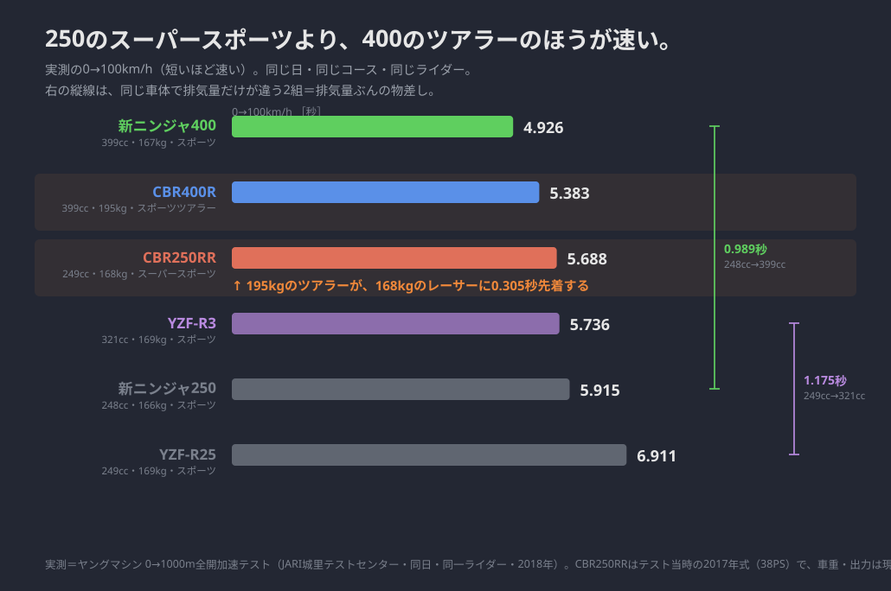
| 実測 速い順 | 0→100km/h | 0→400m | 0→1000m | 1000m到達速度 |
|---|---|---|---|---|
| 新ニンジャ400 | 4.926秒 | 13.382秒 | 26.161秒 | 175.80km/h |
| CBR400R | 5.383秒 | 13.946秒 | 27.259秒 | 168.58km/h |
| CBR250RR 参考・250のSS | 5.688秒 | 14.225秒 | 27.937秒 | 164.21km/h |
| YZF-R3 | 5.736秒 | 14.273秒 | 28.155秒 | 161.20km/h |
| 新ニンジャ250 250勢 | 5.915秒 | 14.497秒 | 28.324秒 | 165.01km/h |
| 旧ニンジャ400 参考・2014〜17年式・211kg | 6.470秒 | 14.806秒 | 28.533秒 | 166.69km/h |
| 旧ニンジャ250 参考・2013〜17年式・172kg | 6.836秒 | 15.156秒 | 29.733秒 | 156.82km/h |
| YZF-R25 250勢 | 6.911秒 | 15.221秒 | 29.918秒 | 152.88km/h |
1位との0.457秒差が、約13mになる計算はこうだ。その0.457秒のあいだ、ニンジャ400は約100km/h（＝秒速約28m）で先を走っている。28m/s × 0.457s ≈ 13m。この差が付くのは、走り出しから80mほど先だ（100km/h到達地点は非公表のため、タイムからの概算で75〜85m。2台ともこの帯に入る）。
実測データの本体: ヤングマシン 0→1000m全開加速テスト（JARI城里テストセンター・データロガー計測・2018年）
3. 排気量ひとクラスは約1秒 ― 尖らせた250でも、越えられない壁
同じ車体で排気量だけが違う2組が、エンジンの差だけを取り出してくれる。0→100km/hの差は——
- ニンジャ400 ↔ ニンジャ250（248→399cc・車重差1kg）＝0.989秒
- YZF-R3 ↔ YZF-R25（249→321cc・一次と二次の減速比まで同一）＝1.175秒
車体が同じなら、排気量ひとクラスの差はおよそ1秒。この1秒は、250の側をどれだけ尖らせても埋まらない。250最速格のスーパースポーツCBR250RRが、27kg重いツアラーのCBR400Rに0.305秒届かなかったのが、その実例だ。250の中で磨けるのは同クラス内の差であって、クラスの差ではない。絶対的な速さでは、250は400のツアラーにも届かない——それが排気量の壁である。
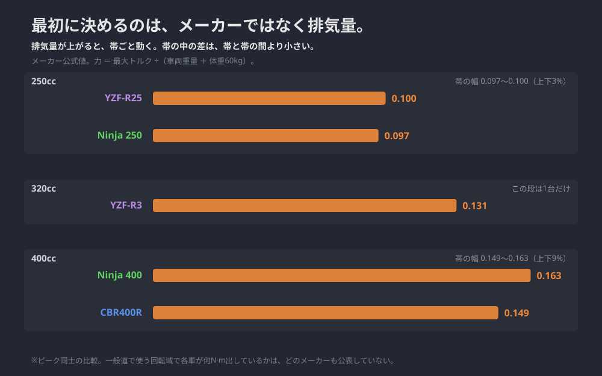
クラスの中の差は、クラスの間の差よりずっと小さい（力＝最大トルク÷総重量で、250勢0.097〜0.100、400勢0.149〜0.163）。そして値段の順と、力の順は一致しない——最も高い99万9,900円のCBR400Rが、81万4,000円のニンジャ400に力で及ばない（0.149 対 0.163）。
この順位が効く道・組み替わる道は⑩ 道が決めるにある。
※実測はヤングマシン 0→1000m全開加速テスト（JARI城里テストセンター・データロガー計測・丸山浩／神永暁・2018年）。CBR250RRはこの章の候補ではなく、比べる相手はZX-25Rのほう——ここでは物差しとして置いた。テストに出たのは2017年式（38PS）で、諸元表の値は現行（42PS）。旧ニンジャ400／250は先代なので参考。諸元は各社公式（→ 駆動系データ §1）。
【力と加速】補足2つのテストを重ねている ― 会場も主催も同じで、誤差はライダーの差― 橋渡しはCBR250RRの0.18秒
上の表は、2つのテストの数字を1枚に並べたものだ。候補の3台と250勢はヤングマシン——2018年2月、JARI城里テストセンターの総合試験路（全長1500mの直線）で、データロガーのデジスパイス3で計測し、各車2本走った最速値だ。テスターは丸山浩と神永暁。
ZX-4RとCB400SFはMSTVよーいどん——同じJARI城里で1/4マイル（402m）をドラッグレースの電子計時で測る、一般参加のイベントである。ヤングマシンのテストは2018年の実施で、2023年発売のZX-4Rが入っていないためこちらを使った。
2つのテストの水準は近い。両方に出ているCBR250RRが、ヤングマシン14.225秒に対してドラッグの最速14.044秒——ずれは0.18秒だ。ただしドラッグ側は結果表に型式が無く、ヤングマシンが測った車と同じかは分からない。
表のZX-4Rは丸山浩、CB400SFはことりちゃんの記録で、2人の力量は同程度だ。同じ日の同じZX-4Rで12.600秒と12.632秒——0.032秒しか違わない。
※ドラッグレースは発進の技術がそのままタイムに乗る。丸山浩は元プロレーサーで、一般のライダーが出せる値ではない。結果表は改造車を「チューニング」「305cc」と書き分けているので無印はノーマルとみてよいが、タイヤと整備状態までは分からない。ヤングマシンのテストは2月の実施で、路面温度はドラッグの開催日（5〜11月）より低い。ドラッグの数値は各開催日のベストタイム表（2023年／2024年／2025年）から。
【力と加速】補足トルクカーブの分析 ― カタログに載らない主役― 実測の順位を決めていた形
実測の順位（→ 実測テストの深掘り）を決めていたのは、トルクカーブの形だ。カタログはピークの1点しか載せない。
1. トルクカーブは、同じ形ではない
カタログから計算した加速度は、どの車もピークトルクを出し続ける前提だ。言い換えれば3台のカーブを同じ形だと置いている。実測カーブが手に入るのはNinja 400とYZF-R3の2台。CBR400Rは実測が無いので、兄弟の500から換算した推定で並べる（→ 2）。
| 後輪トルク lb-ft | Ninja 400 実測 | YZF-R3 実測 | CBR400R 推定・下限 |
|---|---|---|---|
| 3,400rpm | 17.6 ピークの71% | 13.3 ピークの70% | 21.4以上 ピークの85%以上 |
| 4,900rpm | 22.4 ピークの90% | 15.0 ピークの79% | 21.4以上 ピークの85%以上 |
| 6,400rpm | 22.8 ピークの92% | 15.9 ピークの84% | 21.4以上 ピークの85%以上 |
| ピーク | 24.9 8,400rpm | 18.9 9,400rpm | 25.2 7,612rpm |
結果、80km/h巡航の回転で比べると実トルクは1.43倍ひらく——ピーク同士なら1.32倍なのに。ピーク基準の計算は、この開きを見落としている。
CBR400Rは、いちばん低い回転から力が乗る。3,400rpmの時点でピークの85%以上——同じ回転のNinja 400（71%）よりも高く、実トルクでも21.4 lb-ft以上 対 17.6で上回る。
※CBR400Rの列は実測ではない。言えるのは「2,950rpmから上はずっとピークの85%以上」という下限までで、各回転の実際の値は分からない（→ 2）。
ピークだけ尖らせた特性は、カタログでは見栄えがする。「◯N·m」の数字は大きく書けるからだ。だが常用回転でその何割を出しているかは、カタログのどこにも書いていない。
2. CBR400Rの実測は無い ― 兄弟の500から引き伸ばして推定する
CBR400Rのダイノ計測は見つからない（→ 駆動系データ §4）。1で使った推定値は、ボアが共通でストロークだけ違う兄弟CBR500R（471cc）の実測から換算したものだ。分かるのは3つ——
- カーブはフラット。Cycle Worldが500のカーブを「フラット」と書いており、400もその性格を受け継ぐ
- 2,950rpmから上は、ずっとピークの85%以上——80km/hを6速で流す4,319rpmもこの帯の中
- 後輪ピークは34.2N·m（25.2 lb-ft）・7,612rpm前後——カタログの2値との検算は誤差2%以内
ホンダ自身も、この帯を狙って作ったと書いている。2019年の改良でバルブタイミングとリフト量を最適化し、3,000〜7,000rpmのトルクを3〜4%高めた——80km/hを6速で流す4,319rpmは、その帯のちょうど真ん中にあたる。あわせて吸気側でも中回転域に生じるトルクの谷を減少させたとしている（ホンダ プレス資料・2019年3月）。ただし公開されている出力特性のグラフは目盛りの無い「イメージ図」で、N·mの実数は読めない。向上幅は前モデル比の相対値なので、上の推定値を置き換えるものではない。
推定換算のしかたと検算― 500の実測を、どう400に引き伸ばしたか
この変換が正しいかは、カタログの2つの値で検算できる。
| 500の実測から予測 | 予測値 | CBR400Rのカタログ | 誤差 |
|---|---|---|---|
| 最大トルクの回転 | 6,450rpm × 1.180 ＝ 7,612rpm | 7,500rpm | +1.5% |
| 最大トルク | 40.4N·m × 0.847 ＝ 34.2N·m | 38N·m×0.92 ＝ 35.0N·m 後輪換算 | −2.2% |
数値つきのカーブは手に入らないが、低回転の1点だけは実測から拾える。同じ471ccエンジンを積むCB500Xの計測記事に、こう書かれている——「2,500rpmから25 lb-ft超が使えるフラットなトルクカーブ」。ピークは29.26 lb-ftなので、2,500rpmですでにピークの85%だ。回転を×1.180すると、CBR400Rでは2,950rpmにあたる。
※CB500XとCBR500Rは同じ471ccで同じチューニング（Cycle World）。ピーク値は29.26と29.77 lb-ftでわずかに違うので、85%は幅を持って読む（29.77を分母にすると84%）。カーブ全体の数値は入手できていないので、この1点と「フラット」という記述から先は推定である。
3. 差を埋めているのは、低回転のトルク
なぜ27kg重いツアラーが、250のスーパースポーツに勝てたのか。効いたのは、トルクの出る回転の低さだ。
| CBR400R | CBR250RR | 差 | |
|---|---|---|---|
| 最大トルク | 38N·m | 25N·m | 1.52倍 |
| それが出る回転 | 7,500rpm | 10,750rpm | 3,250rpm低い |
| 車両重量 | 195kg | 168kg | 27kg重い |
0→100km/hの区間で、CBR400Rはずっと力の乗った回転を使う。CBR250RRは10,750rpmまで回さないとピークに届かず、その手前を長く走ることになる。27kgの重さは、それで埋まる。
4. 動物にたとえると
一歩で進む量が大きければ、同じ速度をゆっくりした歩調で出せる。小さければ、脚を速く回すしかない。エンジンも同じで、排気量が一歩の大きさ、回転数が歩調にあたる。
| 動物 | 体格と脚 | 排気量 | 最大トルクの回転 | 車重 | 車 |
|---|---|---|---|---|---|
| サラブレッド | 大きく重い。脚が長く、ゆっくりした歩調で速い | 399cc | 7,500rpm | 195kg | CBR400R |
| シカ | 軽く、脚が長い。大きく跳んで進む | 399cc | 8,000rpm | 167kg | ニンジャ400 |
| オオカミ | シカとほぼ同じ体重だが、脚が短い。同じ速度で走るには、速く回さないといけない | 321cc | 9,000rpm | 169kg | YZF-R3 |
※あくまで「一歩の大きさと、回す速さ」のたとえで、性能を換算したものではない。脚の長さと歩調の関係は動物の一般的な性質として使っており、個別の計測値ではない。排気量・回転数・車重は各社公式。
※実測トルクカーブはMotorcycle.com（Dynojet 250i・後輪・2018年式）のグラフ読み取り値で、誤差±0.5 lb-ft程度（→ 駆動系データ §4-1-2）。CBR500Rの実測はCycle World（Dynojet 250i・後輪・2022年式）。
【力と加速】0〜10km/h「発進」 ― ギア倍率が最大のYZF-R3。CBR400Rは新車と中古で入れ替わる
- YZF-R3——ギア倍率0.325で3台最大。試乗記も「半クラ操作に神経を尖らせる必要がない」
- Ninja 400——0.274。400同士ならCBR400Rに勝つ
- CBR400R——0.251で3台最小。ただし現行新車はE-Clutch仕様しかなく、半クラを外してのエンストが起きない。E-Clutchの無い中古なら最下位
何で決まるか
エンスト耐性は、アイドリング回転のまま半クラッチで動き出せるかで決まる。効くのは2つ。
- アイドルでのトルク——5台とも非公表
- それを何倍にして後輪へ渡すか——公表値から計算できる
| CBR400R | Ninja 400 | YZF-R3 | |
|---|---|---|---|
| ギア倍率（1速） 大きいほど半クラで動きやすい | 0.251 | 0.274 | 0.325 |
| 排気量・気筒 | 399cc 並2 | 399cc 並2 | 321cc 並2 |
| 最大トルク | 38N·m | 37N·m | 30N·m |
CBR400RとNinja 400は同じ399cc・並列2気筒で、1気筒199.5ccまで同じだ。アイドルのトルクも近いと見てよく、ギア倍率が9%大きいNinja 400のほうが動かしやすい。YZF-R3のギア倍率が最大なのは、321ccぶんのトルクの小ささを埋めているからだ。
※トルクの山が最も低い回転（7,500rpm）にあるのはCBR400R。ただし山の位置は、アイドルでの粘りの量ではない。アイドリング回転数は3メーカーとも公表諸元に載せていない。
試乗記の記述
※順位の表の実測が測っているのは全開加速で、半クラの発進ではない。
【力と加速】〜46km/h「加速度」 ― 実測ではニンジャ400、CBR400R、YZF-R3の順
※アイドル付近の粘り（エンストのしにくさ）は一つ下の速度帯の話で、「発進」にある。
セル跨ぎ：加速は、シフトの回数で買っている——回数の表と解釈は操作の多さの行の⑥「詰まり」にある。
補足カタログから計算した加速度 ― 順位は読めない
この計算から分かるのは、押しの規模感だ。1速の約10 m/s²は約1.0G——地球の重力と同じ大きさで、乗り手には後ろへ引っ張られる力として出る。実走ではその前に前輪が浮くかタイヤが滑るかが限界に来る。この帯では、3台とも持て余すほどある。
| ピークで引っ張る前提 加速度は m/s² | CBR400R 7,500rpm | Ninja 400 8,000rpm | YZF-R3 9,000rpm |
|---|---|---|---|
| 1速の加速度 | 9.55 | 10.13 | 9.75 |
| ピークが来る速度 | 44km/h | 48km/h | 45km/h |
※駆動系データ §12ではこの値を「体感」と呼んでいる（押し出し＝後輪を押す力[N]、それを質量で割ったのが加速度）。値ではなく比で読む。空気抵抗と転がり抵抗を含まず、路面に伝わる前の数字。低回転のまま開けたときの押しは5台とも非公表（→ 「発進」）。2速から上のピークは63km/hより上で、続きは「加速余力」。シフト回数は⑥ 詰まり。
【力と加速】60〜80km/h「加速余力」 ― この帯も実測順はニンジャ400、CBR400R、YZF-R3
裏付け ― トルクカーブから、80km/h・6速の加速度を出す
この帯は加速するなら3〜4速、流すなら5〜6速。効くのは「いま走っている回転で、実際に何N·mを出しているか」だ（→ トルクカーブ）。
| 80km/h・6速 | 回転 | 実測トルク 後輪 | ピークの何% | 加速度 m/s² |
|---|---|---|---|---|
| Ninja 400 | 4,672rpm | 29.1N·m | 86% | 2.83 |
| CBR400R 実測なし・推定 | 4,319rpm | 29.7〜33.2N·m | 85〜95% | 2.37〜2.65 |
| YZF-R3 | 5,054rpm | 20.2N·m | 79% | 2.10 |
※Ninja 400とYZF-R3は実測カーブの読み取り値（→ 駆動系データ §4-1-2）。CBR400Rは実測が無く、同じ471ccエンジンが2,500rpmでピークの85%を出すという計測から換算した範囲（→ 同 §4-1-5・§4-1-6）。幅で読む。
補足誰も本領に入っていない ― 流す回転はピークから遠い
各車の最大トルクはトップギアで137〜144km/h相当で出る。80km/hまでは5台ともトルクの山に到達しない。
| 車種 | 6速80km/hの回転 | 最大トルクの回転 | 比 |
|---|---|---|---|
| CBR400R | 4,319rpm | 7,500rpm | 0.58 |
| Ninja 400 | 4,672rpm | 8,000rpm | 0.58 |
| YZF-R3 | 5,054rpm | 9,000rpm | 0.56 |
| YZF-R25 | 5,812rpm | 10,000rpm | 0.58 |
| Ninja 250 | 5,830rpm | 10,500rpm | 0.56 |
5台とも0.56〜0.58に揃う。排気量に関係なく、常用速度をピーク回転の同じ割合に置いている。だから、この帯で効くのはピークの数字ではなく、その手前でカーブがどれだけ高いかだ。
補足カタログの計算 ― この帯の役に立たない
同じ帯を、ピークトルクを出し続ける前提で計算するとこうなる。どの段でもNinja 400が最大、CBR400Rが最小だ。
| 加速度 m/s²・ピーク前提 | CBR400R | Ninja 400 | YZF-R3 |
|---|---|---|---|
| 2速 | 6.12 | 7.11 | 7.11 |
| 3速 | 4.65 | 5.60 | 5.25 |
| 4速 | 3.78 | 4.61 | 4.24 |
| 5速 | 3.34 | 3.99 | 3.59 |
| 6速 | 3.03 | 3.59 | 3.12 |
| ピークが来る速度 2/3/4/5/6速 | 69 / 90 / 111 / 126 / 140 | 69 / 88 / 107 / 123 / 138 | 63 / 85 / 104 / 124 / 142 |
使えるのは下段の「ピークが来る速度」＝そのギアの守備範囲だけだ。CBR400Rは60→80km/hを3速のまま引っ張れ、シフトが1回遠い（→ ⑥ 詰まり）。
【力と加速】100〜120km/h「伸び」 ― 実測順は変わらない。危なさは軽さと力の比率で見る
補足危ないのは「軽さ」ではない ― 軽さと力の比率だ
軽さ自体は正義だ。問題は、軽い車にはそれに見合った力が積まれることにある。
自転車に500ccのエンジンを積んだら、まともに乗れる代物にはならない。分母（重さ）を小さくしたまま分子（力）を大きくしたからだ。
「力÷重量が大きいほど速い」は、単独では物差しにならない。突き詰めると「自転車にエンジンを積むのが最適解」が出る。重量は直進安定を買う代金だ。
見るべきは比率だ。最高出力 ÷ 総重量で並べる。
| 車種 | 最高出力 ÷ (車重+体重60kg) | CB125Rの何倍か |
|---|---|---|
| CB125R | 0.079 | 1.0× |
| Ninja 250 ／ YZF-R25 | 0.155 ／ 0.153 | 2.0× |
| YZF-R3 ／ CBR400R | 0.183 ／ 0.180 | 2.3× |
| Ninja 400 | 0.211 | 2.7× |
| ZX-4R SE | 0.308 | 3.9× |
| ZX-6R（大型） | 0.471 | 6.0× |
| 自転車＋500cc（思考実験） | 0.671 | 8.5× |
Ninja 400（0.211）は5台で最も比率が高く、5台でいちばん「刺激」に近い位置にいる。ZX-4R（0.308）や大型（0.3〜0.47）の段には届かず、125から見れば2.7倍だ。
前章の事故データと一致する。死亡率の差を生んだのは性能でなく「軽量ハイパワーを公道で日常使いする組み合わせ」——比率だった。
※「自転車＋500cc」は分母を自転車10kg＋体重60kg、分子を500cc級の47PSと置いた思考実験で実在しない。他は各社公式諸元。押し引きとUターンはNinja 400が5台で最も有利（最小回転半径2.5m・167kg）。
【力と加速】120km/h超「最高速」 ― 実測の到達速度もニンジャ400、CBR400R、YZF-R3の順
1000mを全開で走り切ったとき、3台はここまで伸びている。
| 実測 ヤングマシン全開テスト | CBR400R | Ninja 400 | YZF-R3 |
|---|---|---|---|
| 1000m通過時点の到達速度 | 168.58km/h | 175.80km/h | 161.20km/h |
この帯の加速を買うなら、行き先はZX-4RやRRになる。走れる場所はサーキットで、公道には無い。
【安定感】フラつくのか、よく曲がるのか ― 同じ性質に、二つの名前が付いているだけ
【安定感】補足④ 自転車と原付の違い ― 「加速がいい」と「フラフラする」は同じ式の表と裏― この行の5セルに共通する土台
カタログの数字で比べれば、YZFとNinjaが良い。CBRは高く、加速でも勝たない。それでもホンダはCBRを安定側に造っている。その意味は、自転車と原付を並べると見える。
自転車と原付を、同じ30km/hで走らせる。自転車は軽いから風でも轍でも進路が動き、小さく修正し続ける。原付は重いからそのまま転がる。
一車線の国道をスーッと流すときに効くのは、この差だ。
感覚の話ではない。冒頭の a＝F/m がこの場面だ——力で前に押されやすい車は、横風でも横に押される。
Ninja 400がCBR400Rに持つ加速の優位は、半分以上が「エンジン」でなく「軽さ」だ。駆動力の差は約+9%、残りは28kg軽いという分母の差で、その分母は直進では逆に働く。
直進の落ち着きは、複数の要素の合成で決まる——キャスター角、トレール、ホイールベース、タイヤ幅、フォークの造り、重心の高さ、車重。寝ている・長い・太い・重いほど落ち着き、軽い車体は風や轍を拾う。このうちカタログで揃えて比べられるのは5つだ。
| 直進の落ち着きを決める要素 | CBR400R | YZF-R25／R3 | Ninja 400 | Ninja 250 |
|---|---|---|---|---|
| トレール 直進へ戻す力の腕の長さ | 102mm | 95mm | 92mm | 90mm |
| ホイールベース | 1,410mm | 1,380mm | 1,370mm | 1,370mm |
| キャスター | 25°30′ | 25°00′ | 24°42′ | 24°18′ |
| 総質量（＋体重60kg） | 255kg | 229kg | 227kg | 226kg |
| 前タイヤ幅 | 120mm | 110mm | 110mm | 110mm |
5項目すべてが同じ順序で並ぶ。Kawasakiは軽快側、Hondaは安定側だ。まっすぐへ戻す力はCBR400Rが1割前後大きい（式と内訳は駆動系データ §11）。
軽自動車とアルファードの関係に近い。安くて便利なのは軽自動車だ。コンビニにも狭いところにも行けるし、加速感もある。それでも、命をかけて高速を走る車には選ばない——この章でいえば、それがYZFでありNinjaだ。アルファードはバイクや軽自動車を毎年新車で買えるくらい高いが、その値段は安定と安全に払っている。CBRの値段の差も同じ場所に払っている。
条件を変えれば順位はひっくり返る。ワインディングを刻むならNinja 400、一車線の国道を流すならCBR400R——どちらが優れるかは道が決める。1台で全部の道に合わせることはできない（→ 2台持ち）。
もう一つ効くのが、乗り手の技量だ。
数字は裏返せる。Ninja 400は戻す力が1割弱く、軽いぶん同じ横風で数%〜1割大きく揺すられる。車は何も変えていない。
受風面積は実測できないので、差は「数%〜1割」と幅で置く（内訳は駆動系データ §11-1）。
教習所の一本橋と同じで、軽くて短い車ほど向きを変えやすく、まっすぐ走らせるのに気を使う。「よく曲がる」と「フラフラする」は、「楽しい」と「危ない」の言い換えでもある。
前章で見た事故のデータも同じ方向だ——スーパースポーツの死亡率はネイキッドやクルーザーの約4倍。NinjaもYZFもスーパースポーツではない（出力/重量0.153〜0.211は、IIHSの0.3以上と水準が一桁近く違う）。それでもここから使える結論は、軽快なほど乗り手に依存する——この一つだ。
軽さが裏目に出る場面——台風の日に、自転車で坂道を全力で下るのに近い。速く走ること自体はできる。加速が良く、調子に乗って速度が出る。高速巡航では風に煽られ、小さな修正を延々と続けて疲れる。命に関わるのはこちらだ。
同じ a＝F/m の表と裏でも、得と損の場面の重さが釣り合わない。前章の冒頭で見た死亡率（スーパースポーツ22.5 対 直立5.7）も同じ非対称だ。
【安定感】0〜10km/h「支える」 ― 止まっているときの安定は、足つき・重さ・姿勢の3つで決まる― 差を作っているのはシート高ではない
変わるのは支える重さのほうで、195kg 対 166〜169kg＝約28kg差。傾きはじめた車体を足で押し返す量が、ここで3割近く違う。
この速度では、車体は自分では立っていない。倒れようとする車体を、乗り手が足で受け止めている。交差点で止まる、渋滞で足を出す、Uターンの途中で一度足をつく——安定感がいちばん素朴な形で問われる場面だ。教習所の一本橋の不安定さも、この速度のものである。
効くのは3つある。
| 要素 | CBR400R | Ninja 400 | YZF-R3 | Ninja 250 |
|---|---|---|---|---|
| シート高 足が届くか | 785mm | 785mm | 780mm | 795mm |
| 車両重量 支える量 | 195kg | 167kg | 169kg | 166kg |
| 姿勢 足の出しやすさ | やや前傾 | ハンドル高め | 最も深い前傾 | 前傾 |
3つ目が姿勢だ。ハンドルがトップブリッジ上にあるNinja 400は上体が起き、足を真下に下ろしやすい。前傾が深いほどタンクに被さるぶん体重が前に乗り、同じシート高でも足は出しにくくなる（→ ⑧ 姿勢）。
セル跨ぎ：同じ数字が降りて押す側で効くのが車体の大きさの行の「取り回し」、体に来る負担として効くのが体の負担の行の「足つき」。ここで数えているのは、またがったまま倒れないでいられるかだけだ。
【安定感】〜46km/h「軽さの安心」 ― 走っても止まっても、軽い側が有利― 重さが効くのは、この境目より上
「よく曲がる」と「フラフラする」は同じ性質の言い換えだ。軽くて短い車は向きを変えやすく、裏返せばまっすぐ走らせるのに気を使う（同じ式の表と裏である理由は④）。ただしこの表と裏は、速度で入れ替わる。
自転車と原付スクーターを思い出してほしい。路地でもUターンでも、ひょいと向きを変えられるのは軽い自転車だ。原付は重さのぶん、路面の凹凸や風に動じずまっすぐ転がってくれる。街の速度では、この両方が混じって効く——軽さはスイスイ動ける気楽さに、重さはどっしりした安心になる。そしてどちらの性質も、乗りこなす技術が上がるほどカバーできる範囲が広がる——軽い車のフラつきは押さえられるようになり、重い車の取り回しは慣れで軽くなる。
そしてこの速度帯は、止まる回数がいちばん多い。信号と交差点のたびに0km/hまで落ち、足を出す。その一回ごとに「支える」で見た167〜169kgの軽さが効く。走っている間も、止まっている間も、軽い側が有利だ。
姿勢も同じ向きに効く。ハンドルがトップブリッジ上で高いNinja 400は上体が起き、低速で身構えずに乗れる（→ ⑧）。前傾が深いほど手に体重が乗り、低速の細かい操作はやりにくくなる。
46km/hは、CBR400Rが6速のまま粘れる下限の速度だ（→ ⑥ 詰まり）。安定感が入れ替わる速度を測ったものではないので、おおよそ「街の流れの速度まで」と読んでほしい。
この境目から先は、同じ軽さが逆側に回る。海沿いの横風と轍に振られる側になり、そこからはCBR400Rの重さが効く（→ 「横風・轍」。さらに上の速度域は「ウィーブ」と「煽られにくさ」）。CBR400Rのどっしりした落ち着きが安心になるのは、この境目より上だ。
セル跨ぎ：降りて押すときの軽さは車体の大きさの行の「取り回し」、またがって止まっているときの軽さはこの行の「支える」に置いた。同じ167kgでも、数える場面が違う。
【安定感】60〜80km/h「横風・轍」 ― そして、風。海沿いでは軽さが不利に働きうる
細い道と並んで効くのが横風で、冒頭の a＝F/m がそのまま当てはまる。
問題は差の大きさより、その差が「毎回」効くのか「たまに」効くのかだ。
- 海沿いの道＝横風が常にある。トンネルの出口、橋の上、防風林の切れ目で強さも向きも変わる。軽い車ほど、そのたびに進路が動く。軽さははっきりデメリットになる。
- 無風の山の峠＝木立に囲まれ風が入らない。軽さの短所が表に出ず、曲がる回数は多い——長所だけが効く条件だ。
※数値は 駆動系データ §11-1（質量比と全幅代理の両方）。受風面積は未実測なので幅を持って読む。
【安定感】100〜120km/h「ウィーブ」 ― 高速でまっすぐ走るのは、戻す力ではなく揺れの収まり方― 諸元から作った指標では、4項目とも同じ順序になる
速度が上がると、直進の問題は「風で押されるか」から「押されたあと、揺れが収まるか」に変わる。車体が左右にゆっくり蛇行するのがウィーブ、ハンドルが小刻みに振れるのがウォブルで、まっすぐ走る性質はこの揺れの減衰で決まる。効くのは操舵系の慣性・速度・質量配置で、④で見たトレールはそのうちの一項でしかない。
減衰に効く諸元——トレール、ヨー慣性（軸距の二乗）、総質量、前タイヤ幅——を等重みで合成すると、順序はこうなる。
| 車種 | 直進安定の指標 | 内訳 トレール／ヨー慣性／質量／タイヤ幅 |
|---|---|---|
| CBR400R | 10.0 | 10.0 ／ 10.0 ／ 10.0 ／ 10.0 |
| YZF-R25／R3 | 2.0 | 4.2 ／ 2.5 ／ 1.5 ／ 0.0 |
| Ninja 400 | 0.5 | 1.7 ／ 0.0 ／ 0.4 ／ 0.0 |
| Ninja 250 | 0.0 | 0.0 ／ 0.0 ／ 0.0 ／ 0.0 |
正規化したスコアなので、読めるのは順序であって差の大きさではない。実測ではなく諸元の合成でもある（→ 駆動系データ §11-3）。それでも4項目が例外なく同じ方向を向くのは、①の「CBR400Rだけ500の車体」がそのまま出ているからで、味付けの差ではない。
【安定感】120km/h超「煽られにくさ」 ― 風の差は同じまま、回転数だけが上がる
120km/hを超える合法な道は無い（高速道路の最高速度が120km/h）。
ここで新しく効くのは、高回転そのもの
6速の回転数は速度に比例する。⑦の80km/hの値をそのまま1.5倍すれば、120km/hの回転が出る。
| 車種 | 80km/h 6速 | 120km/h 6速・計算値 | 参考：最大トルクの回転 |
|---|---|---|---|
| CBR400R | 4,319rpm | 約6,500rpm | 7,500rpm |
| Ninja 400 | 4,672rpm | 約7,000rpm | 8,000rpm |
| YZF-R3 | 5,054rpm | 約7,600rpm | 9,000rpm |
| YZF-R25 | 5,812rpm | 約8,700rpm | 10,000rpm |
| Ninja 250 | 5,830rpm | 約8,700rpm | 10,500rpm |
補足振動が操作に返る経路 ― 向きは言えるが、数字は無い
これが安定感の話になるのは、震えているのが「手が触れている場所」だからだ。グリップが震えると握りが強くなり、ハンドルへの入力は粗くなる。横風で押されたときに当てる修正舵の精度が落ちる、という向きで効く。「ウィーブ」で見たとおり直進性は揺れの減衰で決まるので、乗り手が余計な入力を足せば減衰の側も濁る。
※シートの痛み・疲労・首や腰そのものは体の負担の行で数える。ここで拾うのは、それが操作に返ってくるぶんだけだ。回転数は公式ギア比×タイヤ外径の計算値（→ 駆動系データ §2・§7-1）。
セル跨ぎ：軽さがどこまで許されるかは力との比率で決まる——本体は力と加速の行の「伸び」に置いた。
【操作の多さ】何回シフトし、何回修正するか ― 静かな巡航は、詰まったときに請求される
【操作の多さ】補足諸元で見る ― トルクのピーク回転数（回さず力が出るか）
公道で「回さず力が出る」かは最大トルクの出る回転数が目安。低いほど常用域で頂点に届き、アクセルだけで流れに乗れる。低い順に並べる。
| 車種 | 排気量・形式 | 最高出力 | 最大トルク | トルクの出る回転 | 車重 | 姿勢 |
|---|---|---|---|---|---|---|
| CBR400R | 399cc 並2 | 46PS/9,000 | 38N·m | 7,500（最も低い） | 195kg | やや前傾 |
| エリミネーター400 | 398cc 並2 | 48PS/10,000 | 37N·m | 8,000 ※クルーザーの低いギアで実速度は一段低回転 | 178kg SE。無印は176kg | 直立 |
| Ninja400 | 398cc 並2 エリミと同エンジン | 48PS/10,000 | 37N·m | 8,000 | 167kg | 前傾 |
| YZF-R3 | 320cc 並2 | 42PS/10,750 | 30N·m | 9,000 小排気量＝方向1寄り | 169kg | 前傾 |
| CB400SF（新型） | 399cc 直4 | 58PS/11,500 | 38N·m | 9,750（最も高い＝要回転） | 187kg | 直立 |
読み筋
- CBR400R＝最も素直（7,500）。60km/hトップギアの回転も最も低い3,240rpm。
- エリミネーターとNinja400＝同エンジンで8,000。エリミは二次減速比が大きい（7.064 対 6.735）が、後輪16インチ・扁平80で外径が大きく（646mm 対 611.8mm）相殺され、60km/hトップギアは3,478rpm 対 3,504rpm＝差0.7%で同値（→ 駆動系データ §2・§9）。エリミを推す根拠は低速トルクでなく直立姿勢とシート高735mm。
- CB400SF＝9,750で最下位だが、直4は低回転でも力が途切れない“きめ”が別格で、後の「隠れ本命」で見る。
- YZF-R3＝320ccで発生回転も高く方向1寄りだ。
【操作の多さ】補足⑤ 「快適さ」とは何か ― スーッと走れること＝操作が少ないこと― 「スポーツ性能」は、裏返せば操作量の多さ
冒頭の①——快適さとは要求される操作の少なさ——を5台の諸元に当てる。（「フラつかないこと」も操作を減らすが②の話なので④で扱う。）順番は変わる。
| 操作を減らす要素 | CBR400R | Ninja 400 | YZF-R3 | YZF-R25 | Ninja 250 |
|---|---|---|---|---|---|
| 最大トルクが出る回転 低いほど早くピークに乗る | 7,500rpm | 8,000rpm | 9,000rpm | 10,000rpm | 10,500rpm |
| 60km/hの回転 | 3,240rpm | 3,504rpm | 3,791rpm | 4,359rpm | 4,372rpm |
| 100km/hの回転 | 5,399rpm | 5,840rpm | 6,318rpm | 7,265rpm | 7,287rpm |
| 直進の修正舵 トレール／WB | 102mm／1,410mm | 92mm／1,370mm | 95mm／1,380mm | 95mm／1,380mm | 90mm／1,370mm |
| 給油の回数 航続 | 478km | 360km | 370km | 371km | 351km |
- 最も早くトルクのピークに乗り、最も低い回転で流す（60km/h・100km/hの回転は総減速比の表れ）
- 直進に気を使わない（トレール・軸距＝①の「500の車体」）
- 給油が少ない（数百kmに一度の別作業なので、走行中の操作より軽い項目ではある）
効くのは回転数だ。100km/hで CBR400R 5,399rpm、Ninja 250 は 7,287rpm——1,888rpm差。差は出力でなく振動・音・疲労に出る。長い直線で残る疲れはここから来る。
逆にNinja 400は要求が多い。
- ピーク8,000rpm
- 100km/hで5,840rpm
- トレール92mmで最も敏感
「スポーツ性能」は裏返せば操作量の多さだ。
押し引きとUターンなど止まっている間は、最軽量167kg・最小回転半径2.5mのNinja 400が最も楽だ。めんどくさいのは、走る間ずっと続く操作のほうである。
※回転数は公式ギア比×タイヤ外径の計算値（→ 駆動系データ §2・§7-1）。低回転で何N·m出るかは非公表で、表が示すのは「どの回転で走るか」であり「そこで力があるか」ではない。
【操作の多さ】0〜10km/h「切り返し」 ― 大きい車体の代金は、行ったり来たりの回数で払う
【操作の多さ】〜46km/h「詰まり」 ― ⑥ 下を強くするほど、シフトが増える：ギアで作った低速トルクの代金
「低速が強い」はエンジンだけで決まらない。後輪を押す力は、エンジンのトルクをギアで何倍にしてから路面に渡すかで決まる。
だから排気量が小さくても、ギアを低くすれば低速の加速度は作れる。エンジンが非力なぶんを、減速比で埋めるやり方だ。
ただしタダではない。ギアは力を増やすかわりに、速度を削る。同じ回転数で進める距離が縮むので、1段が受け持つ速度の幅が狭くなる。
自転車の変速と同じだ。軽いギアは坂で踏めるが、すぐ脚が回りきって次に入れることになる。重いギアは踏み出しが重いかわりに、そのまま長く乗っていられる。力と、1段で伸ばせる速度は交換関係にある。
だから結論はここに出る。下を強くしようとギアで無理をすれば、そのぶん何度もシフトすることになる。
数えると、差は交差点ごとに現れる。各ギアの受け持ちが短い車ほど、同じ速度に達するまでに余計にシフトする。
| 車種 | 停止 → 60km/h の シフト回数 | 各ギアが終わる速度（km/h） 1速 → 6速 | 6速で粘れる下限 | 80km/h巡航 |
|---|---|---|---|---|
| TZR50R 50・2st | 5回（→6速） | 12 / 18 / 25 / 31 / 37 / 42 | 21km/h | 9,638rpm |
| YZF-R125 125 | 5回（→6速） | 20 / 30 / 41 / 49 / 58 / 66 | 33km/h | 6,059rpm |
| YZF-R3 320 | 4回（→5速） | 25 / 35 / 47 / 58 / 69 / 79 | 40km/h | 5,054rpm |
| Ninja 400 | 3回（→4速） | 30 / 43 / 55 / 67 / 77 / 86 | 43km/h | 4,672rpm |
| CBR400R | 2回（→3速） | 29 / 46 / 60 / 74 / 84 / 93 | 46km/h | 4,319rpm |
5,000rpmで変速する前提。4,000/6,000/7,000rpmでも順位は不変。6速下限は2,500rpm。TZR50R（1997・生産終了）とYZF-R125（欧州モデル）は日本の新車ラインナップ外。TZR50Rは6速・7,228rpmで60km/hに達する（出力ピークは10,000rpm）。80km/h＝9,638rpmはその6速で計算上到達する回転数だが、原付一種の法定速度は30km/h——この行は速度の提案ではなく、ギアの刻みの細かさを読むためのもの。
シフト回数は、そのまま排気量の階段になる。50ccと125で5回、320で4回、400で3回〜2回。エンジンが細いほど、同じ速度に届くまでに手数を払う——ギアで下を作るという解き方の代金が、ここに出ている。
そう決めると、表の右端が意味を変える。各車の6速の値は「快適な回転のまま流せる速度の上限」になる。
| 快適な回転（5,000rpm）で流せる上限 | 速度 | 60km/hを6速で保つと |
|---|---|---|
| TZR50R（50） | 42km/h | 7,228rpm |
| YZF-R125 | 66km/h | 4,544rpm |
| YZF-R3 | 79km/h | 3,791rpm |
| Ninja 400 | 86km/h | 3,504rpm |
| CBR400R | 93km/h | 3,239rpm |
シフトが少ない＝速い、ではない。60km/hまで最速はNinja400で、数えたのは操作の回数だ。ローギヤードな車が遅いのではなく、同じ結果に届くまでに手数を多く払っている。
【操作の多さ】60〜80km/h「巡航回転」 ― ⑦ 流れても詰まっても、最も静かで手数が少ないのはCBR400R
制限速度〜80km/h、片側一車線、信号と右左折があり、前が詰まる道で測る。
流れているとき ― CBR400Rが最も静かで、最も疲れない
| 6速の回転数 | 40km/h | 50km/h | 60km/h | 70km/h | 80km/h |
|---|---|---|---|---|---|
| CBR400R | 2,160 | 2,700 | 3,240 | 3,780 | 4,319 |
| Ninja 400 | 2,336 | 2,920 | 3,504 | 4,088 | 4,672 |
| YZF-R3 | 2,527 | 3,159 | 3,791 | 4,422 | 5,054 |
| YZF-R25 | 2,906 | 3,633 | 4,359 | 5,086 | 5,812 |
| Ninja 250 | 2,915 | 3,644 | 4,372 | 5,101 | 5,830 |
80km/hで250勢は約5,800rpm、CBR400Rは4,319rpm。差の約1,500rpmは音・振動・疲労に出る。ここまではCBR400Rの独壇場だ。
詰まったとき ― 中間ギアに置けば、どの車も1つのギアで収まる
一車線国道で頻繁に起きるのは、前が詰まって40km/hに落ちることだ。40〜60km/hの行き来は、4速に置けば3台とも1つのギアで走れる——CBR400R 2,703〜4,054rpm、Ninja 400 2,985〜4,478rpm、YZF-R3だけ上端で5速へ1回入る。CBR400Rは低い回転から力が乗るぶん（→ トルクカーブの分析）、同じギアで粘る側だ。帯の中の忙しさに、差はほとんど出ない。
補足トップギアで粘る走り方なら ― 6速下限の差が出る
燃費優先で6速に入れて流す走り方に限り、ギアの高さが下限の差になって出る。
| 車種 | 6速が使える下限 | 5速の下限 | 30km/hで使える最高ギア |
|---|---|---|---|
| YZF-R25 | 34km/h | 31km/h | 4速（2,843rpm） |
| Ninja 250 | 34km/h | 31km/h | 4速（2,824rpm） |
| YZF-R3 | 40km/h | 34km/h | 4速（2,573rpm） |
| Ninja 400 | 43km/h | 38km/h | 3速（2,735rpm） |
| CBR400R | 46km/h | 42km/h | 3速（2,485rpm／ぎりぎり） |
- 数値は公式ギア比×タイヤ外径の割り算で推定を含まない（→ 駆動系データ §2・§10）。駆動力（F÷重量）の順位は出さない——実測トルクカーブはNinja 400とYZF-R3だけで、推定は不採用（→ 同 §4-1-3・§4-3）。
- ギアの下限はエンジン2,500rpm仮定（筆者の仮定）。CBR400Rの30km/h・3速（2,485rpm）は境界例。
- 現行ギア比で計算（Ninja 250は8BK-EX250Y・二次減速2.928）。Ninja 250の2018〜2021年式のみ二次減速2.857で約2%低い回転（→ 同 §8-2）。CBR400RはNC56〜NC65でギア比不変。
セル跨ぎ：同じギアの高さを「シフト回数」として数える本体は「詰まり」（⑥）へ。
【操作の多さ】補足「巡航回転」に付随 ― なぜR3だけローギヤードなのか：250の駆動系をそのまま使った結果
- YZF-R25（250）＝ 3.043 × 3.071 ＝ 9.345
- YZF-R3（320）＝ 3.043 × 3.071 ＝ 9.345
- Ninja 400 ＝ 2.218 × 2.928 ＝ 6.494
- CBR400R ＝ 2.029 × 3.000 ＝ 6.087
「高速回転」の本体は⑤の表にある——100km/hの6速でCBR400R 5,399rpm、Ninja 250 は7,287rpm。1,888rpmの差だ。⑦で見た80km/hの差（約1,500rpm）が、速度なりに開いただけである。
【体の負担】姿勢・風・振動 ― カタログの「ツアラー」は、姿勢を含まない
「足つき」の本体は車体の大きさの行、「取り回し」の表にある——シート高780mmのYZF-R3が最良。
【体の負担】〜46km/h「姿勢」 ― ⑧ 注意：CBR400Rは姿勢まではツアラーではない
この速度帯の姿勢に、勝ち負けは無い。三方向に分かれる。体に負担が出るほどの速度ではなく、どの格好で乗りたいかの違いだ。
- YZF-R3＝最もSS的な前傾。しょぼい速度でも「攻めてる感」を味わえる。
- CBR400R＝やや前傾の快適側。ゆったり流すレクサス感。
- Ninja400＝ハンドルがトップブリッジ上で高め（→⑪）。自転車のように身構えず乗れる。
ホンダの2019年モデル（NC56）のニュースリリース——「従来モデルではトップブリッジ上側に配置していたセパレートハンドルをトップブリッジ下側へ配置し、よりスポーティーなポジションに変更」。
CBR400Rのツアラー性を担うのは車体・エンジン・タンクで、ライディングポジションではない。姿勢まで含めてツアラーが欲しいなら、兄弟車400X（アップハンドル・前19インチ・スクリーン延長／2024年以降は後継のNX400）が本命だ。
※ただし絶対値としては極端ではない。⑪の試乗インプレでは170cmのライダーが「直立から手のひら1つ分ぐらい」「175cmある人ならもっと緩くなる」と言っている。トップブリッジ下付けでも、フルカウルの中では立っている側だ。
【体の負担】60〜80km/h「風・振動」 ― この速度で体に来るのは風ではなく、回転数のほう
ただし「手の痺れ」という別の軸では向きが逆になる。痺れの元は1気筒あたりの排気量で、YZF-R3は160cc（321cc÷2）、400勢は199cc（399cc÷2）と2割以上小さい（→ 手の痺れの章）。回転数ではCBR400R、気筒の大きさではYZF-R3——同じ「振動」でも、どちらを数えるかで有利な車が入れ替わる。常用回転は走っているあいだ毎回払うが、気筒の大きさは車を選んだ時点で決まる。
行をまたぐ話：振動と疲労は、握りが強くなる・修正舵が粗くなるという経路で安定感にも返る（→ 【安定感】「煽られにくさ」）。ここでは体に来るぶんだけを数える。
【体の負担】100〜120km/h「防風」 ― カウルが実利になるのは、この速度から
フルカウル3台の間の差は、諸元には出ない。スクリーンの形も高さも公式には数値化されていないので、頼れるのは乗った人の言葉になる——⑪の比較は「長距離はCBR400R」とし、理由を重量ぶん風に強く高速で安定、シートと姿勢が楽と説明している。
「前傾」がこの速度域で体にどう出るかは、この章では検証していない（合法な道が無く、試乗の証言も無い）。姿勢そのものは⑧に、YZF-R3の前傾については【答え】の節にある。
【まとめ】ここまでの5項目を、3台に戻す ― 三つの性格は、三つの代償の名前でもある
【まとめ】⑨ 性格の見立て ― ツアラーのCBR／加速のNinja／バランスのYZF
- CBR400Rはツアラーだ。航続478kmは2位に107km差。トレール102mm・軸距1,410mm・車重195kgはいずれも最大で、まっすぐが最も据わる。代償は最小回転半径2.9mの重い取り回し。
- Ninja 400は加速だ。力0.163・伸び0.211で最上位。167kgと最軽量、最小回転半径2.5mで小回りも利く。弱いのは航続360kmと、トレール92mmぶんの落ち着きのなさ。
- YZF-R3はバランスだ。シート高780mmで最も足つきが良く、400クラスで最も安い（72万6,000円）。力0.131は320ccぶん一段低いが、初めての1台で困らない。
値段を考えないならCBR400RとNinja400の2択。振り切る方向が正反対だからだ（航続と直進安定／加速と小回り）。YZF-R3が残る理由は足つきと価格だ。オプションのエリミネーターは、同じ答えをクルーザーの形で選ぶ道になる——それは【答え】の補足で見る。
【道が決める】同じ設計が、長所にも短所にもなる ― 順位は、道を決めた時点で半分決まる
【道が決める】俊敏さが効くかどうかは、道の細さで決まる
「軽くて俊敏で刺激的」が価値になるかは、走る道の細さで決まる。
- 細い峠道＝コーナーが連続し切り返しが多い。俊敏さが毎秒効く。軽い車が楽しく速い。
- 一車線の国道＝ほぼ直線で曲がるのは数分に一度。俊敏さの出番がない。効くのはまっすぐが続くこと。
- 市街地＝速度が低く、効くのは取り回しと足つき。俊敏さより「軽さそのもの」。
3台を直接比べた記事も同じ方向だ——CBR400Rは高速巡航が最も安定し長距離が楽、YZF-R3とNinja 400は軽いぶん風に弱い、CBR400Rは取り回しに慣れが要る（Motor-Fan）。
※トレール・ホイールベース・キャスター・タイヤ幅は各社公式。総質量は車両重量＋体重60kg。駆動力の内訳（+9%／+12%）は3速60km/h、CBR400Rは現行 8BL-NC65（195kg）基準。詳細は 駆動系データ §11。
【道が決める】では、いちばん安全なのは何か ― ここで「安全」が2つに割れる（章の答えの理由）
安全A ＝ 危険な領域に入らないこと。ならば125が最適。法定速度で回し切れ、高速にも入らず、危ない場面が来ない。 このページが「合法で回し切れる125も、ある意味いちばんバランスがいい」と書いたのはこの意味だ。
安全B ＝ 危険な領域で安定していること。ならば重く長い車が最適。でなければ大型に乗る理由がない。 CBR400Rが500の車体を400枠に収めて195kg・軸距1,410mmなのも同じ方向の設計だ。
2つは逆を向く。1台では両方を満たせない。
※125も一般道では60〜80km/hの流れに混ざり無リスクではなく、非力さは合流で別のリスクになる。 また大型＝重いとも限らない（MT-07 183kgはCBR400R 195kgより軽い）。効くのは重さより、軸距とトレールを含む車体寸法だ。
【道が決める】⑩ 本当の軸は排気量ではなく、道の広さかもしれない ― 狭い道では1.2〜1.3倍、広い道では1.24〜1.35倍
そもそも、候補を400クラスの中だけで比べることに意味はあるのか。オプションの250勢を同じ計算に載せ、排気量ではなく道の広さで比べ直す。
- 比べる相手＝250の2台（Ninja 250・YZF-R25）対 400の2台（Ninja 400・CBR400R）。YZF-R3は320ccなのでどちらにも入れず、参考として並べる。
- 狭く細い道の指標＝1速で開けたときの加速度（ギア込み）。大きいほど強い。
- 広く長い道の指標＝80km/hを6速で流すときの回転数。小さいほど楽。
| 軸 | 狭く細い道 1速の加速度（ギア込み・大きいほど強い） | 広く長い道 80km/h・6速の回転数（小さいほど楽） |
|---|---|---|
| Ninja 250 | 7.71 | 5,830rpm |
| YZF-R25 | 7.97 | 5,812rpm |
| YZF-R3（320・参考） | 9.75 | 5,054rpm |
| Ninja 400 | 10.13 | 4,672rpm |
| CBR400R | 9.55 | 4,319rpm |
| 250の2台 対 400の2台 ＝ 狭い道は加速度が1.20〜1.31倍／広い道は巡航回転が1.24〜1.35倍低い 幅が出るのは、400の2台でギアリングが違うから。R3（320）はこの幅の計算から除いてある | ||
※公式諸元をもとに整理。
ここまでなら「広い道ほど排気量の差が開く」で終わる。ところが400の2台を分けて見ると、逆を向く。
| Ninja 250 を基準に | 狭い道 加速度の比 | 広い道 巡航回転の比 | 向き |
|---|---|---|---|
| CBR400R | 1.24倍 | 1.35倍 | 広い道ほど開く |
| Ninja 400 | 1.31倍 | 1.25倍 | 広い道ほど縮む |
同じ400で逆を向くなら、効いているのは排気量ではない。2台を分けているのは総減速比の高さだ。
※右の列はギアの高さだけで決まるが、左の列はギア × トルク ÷ 重量で決まる。だからギアが最も低いR3でも、加速度ではNinja 400に届かない。2列は逆相関するが、同じ軸ではない。
だから結論はこうなる。広く長い道で効くのは排気量ではなく、それを高いギアで使える設計だ。この記事が「80km/h・一車線国道」を前提に置いてきたのは、ハイギヤードな設計が得をする側の道を選んでいたことになる。
【道が決める】では250でいいのか ― R3と250は「同じリズム」だった
R3の軽快さが低いギアと細かい刻みから来るなら、その刻みは250でも同じはずだ。そのとおりだった。下は50ccまで伸ばしてある——ギアを上げる忙しさが、排気量とともにどう変わるかが見える。
| 車種 | 各ギアが終わる速度（km/h） 5,000rpm変速 | 60km/hまで | 力 | 80km/h巡航 | 価格 |
|---|---|---|---|---|---|
| TZR50R（50・2st） | 12 / 18 / 25 / 31 / 37 / 42 | 5回（→6速） | 0.039 | 9,638rpm | — |
| YZF-R125（125） | 20 / 30 / 41 / 49 / 58 / 66 | 5回（→6速） | 0.056 | 6,059rpm | — |
| YZF-R25（250） | 24 / 34 / 44 / 53 / 61 / 69 | 4回 | 0.100 | 5,812rpm | 69万800円 |
| YZF-R3（320） | 25 / 35 / 47 / 58 / 69 / 79 | 4回 | 0.131 | 5,054rpm | 72万6,000円 |
| Ninja 250 | 24 / 35 / 44 / 53 / 61 / 69 | 4回 | 0.097 | 5,830rpm | 72万6,000円 |
| CBR400R | 29 / 46 / 60 / 74 / 84 / 93 | 2回 | 0.149 | 4,319rpm | 99万9,900円 |
※TZR50R（1997）とYZF-R125は日本の新車ラインナップ外なので価格は置かない。TZR50Rのトルクはカタログのkgf·m表記（0.63kgf·m/7,500rpm）をN·m換算。TZR50Rは6速・7,228rpmで60km/hに達する（出力ピーク10,000rpm）。80km/hの9,638rpmはその延長の計算値で、原付一種は法定30km/h——この行は「50ccで80km/hを流す」提案ではなく、ギアの刻みの細かさを見るためのもの。
60km/hに達するまでのシフト回数は、排気量の階段そのものになる。50ccと125で5回、250と320で4回、400で2回。ただし50ccの代金は回数だけでは見えない——60km/hを6速で流す回転数がTZR50Rは7,228rpm、CBR400Rは3,239rpmで、同じ速度を保つのに2.2倍回し続ける。⑥の「ギアで下を作れば代金を払う」が、クラスをまたぐと常用回転の高さという形で出る。
R25とR3はシフト回数も終速もほぼ同じ。一次×二次が完全同一（9.345）だからだ。R3の軽快さは250のものである。
- 力は1.31倍（0.100 → 0.131）
- 80km/h巡航は13%低く（5,812 → 5,054rpm）
- 差額は3万5,200円
【道が決める】では大型に乗る理由は何か ― 高速まで軸を伸ばすと出てくる
250は高速にも乗れ、車検も無い。ならばなぜ400を、まして大型を買うのか。軸を100km/hまで伸ばすと答えが出る。
| 車種 | 力 最大トルク÷総重量 | 80km/h | 100km/h | 120km/h | 車検 |
|---|---|---|---|---|---|
| Ninja 250 | 0.097 | 5,830rpm | 7,287rpm | 8,745rpm | なし |
| YZF-R3 | 0.131 | 5,054rpm | 6,318rpm | 7,581rpm | あり |
| Ninja 400 | 0.163 | 4,672rpm | 5,840rpm | 7,008rpm | あり |
| CBR400R | 0.149 | 4,319rpm | 5,399rpm | 6,479rpm | あり |
| W650（大型） | 0.220 | 2,881rpm | 3,602rpm | 4,322rpm | あり |
| MT-07（大型） | 0.276 | 3,360rpm | 4,200rpm | 5,040rpm | あり |
| ZX-6R（大型） | 0.266 | 4,770rpm | 5,963rpm | 7,156rpm | あり |
100km/hの6速はW650が3,602rpm、Ninja250（7,287rpm）の半分。MT-07も4,200rpm。差は音・振動・燃費・疲労に出続ける。500cc以上を買う理由は「速さ」でなく「回さずに済むこと」。 低速トルクと同じ形だ。
だが白バイは大型で一本橋も8の字もこなす。低速の扱いにくさは車と乗り手の関係で、車だけの属性ではない。「250がいい」も優劣でなく、いまの技量に釣り合うかの話（前章の2行）だ。結論は「250にしろ」でなく練習用と普段使いを分け、技量を先に上げるになる。
- 狭く短い道だけなら125〜250（差は1.2〜1.3倍）。
- 一般道の60〜80km/hなら250〜400＝本ページの想定。
- 高速を日常的に使うなら、はじめて大型（ツーリング寄り）に意味が出る——時速10km以下の負担を引き受けられるなら。
【道が決める】125はどうか（参考）― 数字は「届かない」と言う
刻みで埋まるなら125でも、となる。だが数字は届かないと言う。
| 力（ギア無視） | 一次×二次 | 80km/h巡航 | |
|---|---|---|---|
| CB125R | 0.058 | 10.432 | 6,680rpm |
| 250勢 | 0.097〜0.100 | 8.983〜9.345 | 5,812〜5,830rpm |
| CBR400R | 0.149 | 6.087 | 4,319rpm |
125の力は250の約6割。一次×二次は10.432で250の1.12倍しかなく、力の差1.7倍（0.058 対 0.097〜0.100）を埋められない。80km/h巡航は6,680rpm、CBR400Rの1.55倍。125は狭い道の加速度でも250に届かない。
※CB125Rは全段のギア比が非公表で、1速・2速は計算していない。上の結論は一次×二次からの推論で、計算値ではない。
片方の端——軽くて出力の高い車をサーキットで速く走らせるには、フラつきを抑える技術が要る（方向1のリーンイン）。
もう片方——重い車を時速10km以下で取り回すには、支える体力と半クラが要る。一本橋とフルロックUターンだ。
250はどちらの端でもない。「250はバランスがいい」とは、どちらのスキルも前提にしないということだ。 出力が低く速度を出しすぎる危険が小さく、166kg前後と軽く低速で重さに負ける負担も小さい。
避けられる危険が2つ、残るのが1つなら「ちょうどいい」でいい。 練習用と普段使いを分けたのも同じ判断だ——スキルを要求する端は、身につけてから行く。
交差点が無い道なら ― 力と加速の実測順位を、道で使い分ける
30〜120km/hを流し続けるだけなら、CBR400Rの帯になる。加速は2位でも、その195kgがそのまま直進の据わり（→ 「据わり」・「高速直進」）と横風の強さ（→ 「横風・轍」）になる。重さと加速が釣り合う。
対抗はニンジャ400だ。0.457秒速く、軽い。ただし同じ軽さが、振られやすさにも回る（→ ④）。軽快さと危うさは同じ性質の表と裏で、選ぶのはどちらを引き受けるかになる。
【証言】数字に出ない乗り味 ― 乗った人の言葉で確かめる
【証言】⑪ 乗った人の声で確かめる ― 試乗・比較動画（ZX-4Rオーナーの試乗／CBR400R vs Ninja400）
数字に出ない乗り味は、乗った人の話で補うしかない。この2択を正面から扱う動画と、この記事の問い（ZX-4Rに憧れる人がCBR400Rをどう感じるか）にそのまま答える1本がある。
-
［この記事の問いに直球］【試乗レビュー】CBR400Rを1日レンタルして試乗｜ZX4Rオーナーによる試乗インプレ
TAKASHUN【モトブログ】／約41分。ZX-4Rを所有している人が、CBR400Rを1日借りて街乗り・高速・ワインディングを走った回。この章がずっと数字で書いてきた「憧れの直4から降りると何を失い、何を得るのか」を、両方を知っている側から語っている。見る時間がない人へ ― この動画で語られていること（要約）
ひとことで言うと：ZX-4Rオーナーが2023年式CBR400Rを1日借り、都内の街乗り → 信号の少ない地方の街乗り → 首都高C1〜奥多摩方面の高速 → ワインディング、と全ロケーションを走って、「ネガを1つくらい絞り出してやろうと思ったが、全く見つからなかった」と結論している。比較対象は終始自分のZX-4R。- 取り回し ― 170cm/58kgで両足ベタ足。前傾は直立から手のひら1つ分程度で、フルカウルとしてはかなり立っている。
自分のZX-4Rとの対比：車重はほぼ同値（191kg 対 SE 190kg）なのに体感では明確に軽い。要因は断定していない。 - 街乗り ― 巡航は3,000〜4,000rpmが快適。5速2,000rpm・40km/hでも走れ、4速2,000rpmの登り坂でもアクセルをさほど開けずに加速する。クラッチが軽く、クイックシフター無しで1日走って左手の疲労はゼロ。ミラーが高い位置で見やすく、渋滞でも排熱の熱気を感じない。
自分のZX-4Rとの対比：「今のシーン、4Rだと結構きついだろうな。下手したら加速できないかもしれない」。 - 高速 ― 手を添えるだけでビタッと直進。6速4,000rpmで80km/h、5,000rpm弱で90km/h——この域は振動ゼロ。120km/hまでは普通にこなせるが、それ以上はパワーより振動で厳しくなる。
自分のZX-4Rとの対比：サスとシートが柔らかく継ぎ目を受け流す。首都高でのお尻のダメージが段違いに少ない。 - ワインディング ― 荷重移動を意識せず、視線と体を向けるだけでセルフステアが切れ込んでいく。コーナー中盤〜立ち上がりでリアサスがしっかり沈み、トラクションを受け止める感触がある。
自分のZX-4Rとの対比：「4Rほどパタッと寝ないのに、クッと曲がる」。バネレートが4Rより低くストローク量が多いのでは、と推測している。
1日乗って挙がったネガは、2つだけ。
- 8,000rpmを超えると走っていられないレベルの振動がステップとハンドルに出る。ただし「400ccなのでここに文句を言っても仕方ない」「そこまで回さなくても120km/hは出る」という整理で、8,000rpm以上は常用しない前提としている。
- 純正の排気音が普通すぎる。アイドリング付近は250ツインと大差ない印象で物足りない。ただし交換する人が多い前提なので、デメリットというほどではない、と。
この記事にとって効くのは、締めの一言だ。——ZX-4Rはスポーツ走行に最適化されたバイクで、公道でも楽しめる。CBR400Rは公道の常識的な速度域で最大限楽しめるよう最適化されている。だから「ツーリングにおいてはCBR400Rの方がより楽しみやすいのかもしれない」。
そして1日走って本人が一番驚いたのは疲労感のなさで、帰宅して初めて気づくレベル、休憩を取るスパンも4Rより圧倒的に長くて平気だったという。冒頭①「快適さ＝要求される操作の少なさ」が、数字ではなく乗った側の言葉で出てきた形になっている。※自動生成字幕からの要約で、数字はすべて本人の発言ベース。車重191kgは彼が借りた2023年式の値で、本章が比較に使う現行E-Clutch（8BL-NC65・195kg）とは年式が違う。1日のレンタル試乗の主観であり実測ではない——数字の裏づけは④⑥⑦の計算に、乗り味の言葉はこの動画に置いてある。
- 取り回し ― 170cm/58kgで両足ベタ足。前傾は直立から手のひら1つ分程度で、フルカウルとしてはかなり立っている。
-
［Ninja400との2択では最優先］【試乗インプレ】Ninja400とCBR400Rを徹底比較してみた【徹底比較】
海沿いでの車体の軽さのデメリット・怖さに触れている。④の数字が乗った側からどう語られるか、いちばん重要な1本。見る時間がない人へ ― この動画で語られていること（要約）
ひとことで言うと：2台を「メリット→デメリット」の順に並べ、Ninja400＝スポーツ走行がしたい人／CBR400R＝ツアラーとして使いたい人と振り分けている。④で数字にした軽さの裏目を、実体験として語っているのがこの1本。この記事が引いたのはここだ。Ninja400の軽さ（167kg）を長所として挙げたうえで、デメリットとして「横風に弱い」を挙げる。海上の橋や湾岸のように風よけの壁が低い区間で横風に振られ、「ここで死ぬかも」と思った経験があると語っている。逆にCBR400Rは車重があるぶん横風が怖くない、と。冒頭②（a＝F/m）の裏側が、そのまま怖さの言葉になっている。- Ninja400の長所 ― 最高出力が高い／軽い（167kg）ので速さもヒラヒラ感も出る／シートの絞り込みが深く足つきが良い／ハンドル位置が高めで前傾がきつくない。
スポーツ一辺倒ではなくツアラーとしても乗れる万能さを狙った作り、という見立て。 - Ninja400の短所 ― テールが尻上がりで乗るときに足を高く上げる必要がある／回転計がアナログで、速度と回転を一目で読めない／軽いぶん横風に弱い。
- CBR400Rの長所 ― 車重があり横風に強い／シート幅が広くお尻が痛くなりにくい／テールが低く乗り降りが楽／燃費が良い。
- CBR400Rの短所 ― 最高出力がNinja400より低い／絞り込みが浅く足つきはNinja400ほど良くない（シート幅を取った代償、という整理）。
※自動生成字幕からの要約。車重・燃費・出力は動画が挙げた値で、年式によって公称値が動く（本記事は現行E-Clutchで揃えている → 当面の1台）。
- Ninja400の長所 ― 最高出力が高い／軽い（167kg）ので速さもヒラヒラ感も出る／シートの絞り込みが深く足つきが良い／ハンドル位置が高めで前傾がきつくない。
-
“乗りやすさ”を追求した400ccフルカウルスポーツを徹底比較！オススメはこっち【CBR400R vs Ninja400】
「乗りやすさ」を軸にした2台の対決。見る時間がない人へ ― この動画で語られていること（要約）
ひとことで言うと：「フルカウル＝きつそう・怖そう」という先入観を否定し、どちらを買っても正解と前置きしたうえで、高速・長距離ならCBR400R／街乗り・普段使いならNinja400と分ける。ただし初心者に1台勧めるならNinja400——軽さと足つきとコスパ、という理由。- 車体 ― Ninja400はNinja250と車体共通で、250クラスのサイズ感。CBR400Rはひと回り大きく400クラスの体格がある。シート高は同じ785mmだが、座面がスリムなNinja400のほうが足つきは良い。
- エンジン ― CBR400Rは中低速で安定したトルク、Ninja400はやや高回転型。パワーもスピード感も大差はないが、軽いぶんNinja400はパワーウェイトレシオで有利。
- 装備・足回りはCBR400Rが上 ― SFF-BPフォーク、フロントダブルディスク、ひと回り太いタイヤ、ハザード／トラクションコントロール／エマージェンシーストップシグナル。10万円近い価格差は妥当という評価。
- 長距離はCBR400R ― 重量ぶん風に強く高速で安定、燃費が良く17Lタンクで航続が長い、シートと姿勢が楽で疲れにくい。
- それでも初心者にはNinja400 ― 「軽さと足つきは正義」。ただし身長180cm超なら車体が小さいのでCBR400Rのほうがいいという但し書きつき。
この記事と噛み合う一言。CBR400Rを「191kgもあるとは思えないほど軽やか、ハンドリングが軽い、何も考えずに乗っていられる」と評している。冒頭①「快適さ＝要求される操作の少なさ」と同じことを、別の言葉で言っている。 -
見る時間がない人へ ― この動画で語られていること（要約）
ひとことで言うと：結論は冒頭にある——高速道路を使ったツーリング性能ならCBR400R、運転する楽しさと街乗りならNinja400。そのうえで「なぜそうなるか」を車名の付け方・車重・タイヤ幅・ハンドル位置・巡航回転数の順に解説していく。- 車名が性格を表している ― ホンダはR1個＝ツーリング／街乗り重視、RR2個＝走行性能重視（スーパースポーツ）。カワサキはZX◯◯Rがスーパースポーツ、Ninja＋排気量はツーリング／街乗り寄り。だからCBR400RもNinja400も「犠牲にしているものがほぼ無い」側のバイクだ、という整理。
- タイヤ幅 ― 前後ともCBR400Rのほうが太い。太い＝接地面が広く安定、細い＝軽快。この差がそのまま2台の性格になっている。
- ハンドル位置 ― CBR400Rはトップブリッジの下、Ninja400は上。CBR400Rは前傾がきつくなるが高速で風当たりが減り、Ninja400は街中でハンドルを切る場面が楽になる。（本記事⑧と同じ指摘。CBR400Rは登場時トップブリッジ上で、モデルチェンジで下に移った、とも述べている）
- 巡航回転数と燃費 ― 同じ速度でCBR400Rのほうが約1,000rpm低く回る、と説明。同じルートを走った実測燃費はCBR400Rが29km/L、Ninja400が24.8km/L。タンクも17Lで大きく、航続距離はCBR400Rが圧倒的に長い。
※動画の回転数は走行中にメーターを読んだ値（本人も「目測」と言っている）で、本記事⑦の計算値とは200〜400rpmずれる——記事側は公式ギア比×タイヤ外径から出した80km/h巡航でCBR400R 4,319rpm・Ninja400 4,672rpm。「CBR400Rのほうが低く回る」という向きは一致するが、差の大きさは動画のほうが大きく出ている。数値は記事の計算を、体感は動画を見てほしい。なおこの回の自動生成字幕は聞き取りの崩れが大きく、車名や数字の一部が誤変換されている。
-
【衝撃】Ninja400を選ぶべき理由とCBR400Rとの比較【Kawasaki(カワサキ)のバイク、ニンジャ400】
Ninja400を選ぶ側から見た比較。見る時間がない人へ ― この動画で語られていること（要約）
ひとことで言うと：Ninja400に高速・峠を含め約150km乗った回で、随所でCBR400Rと引き比べる。結論は「上質なのはCBR400R、刺激的なのはNinja400」——高速道路の快適性はCBR400Rが上だと認めたうえで、峠ならこっちと選んでいる。- 街乗り ― 167kgの軽さを「スクーターレベル」と表現。フルカウルとしての気楽さ・扱いやすさはトップ、と絶賛している。
- 高速 ― 振動が段階的に移動すると具体的に述べる：6,000rpmでステップ → 7,000rpmでタンク → 8,000rpmでハンドルへ。100km/h巡航は約6,000rpmで、ステップの振動が出はじめる領域と重なる。パワー自体に不満はない。
- CBR400Rに負けを認めた点 ― 「CBR400Rと比べると高速道路の快適性は劣っている。CBRのほうがしっとりして上質」。その代わりNinja400はどの回転域でもアクセルに「ドン」と反応するので退屈しない、と対比する。
- 峠 ― 「峠道での走行はNinja400のほうが圧倒的に楽しい」。ただしフロントサスが柔らかく、強くブレーキをかけると前が大きく沈むという指摘も。
- 人の振り分け ― 軽さ・クイックなハンドリングが欲しい人はNinja400、振動が気になる人・落ち着いた雰囲気が欲しい人はCBR400R。
この記事にとっては、逆側の証人として効く。Ninja400を選ぶ側の人が高速の快適性だけはCBR400Rに譲っている——「一車線の国道をスーッと流す」条件でCBR400Rに寄せた本章の前提が、反対側からも否定されていない、ということだ。1本目のZX-4Rオーナーが8,000rpm超の振動を唯一のネガに挙げたのと、振動の話が裏表になっているのも読み比べどころ。
【答え】最初の1台に、どれを買うか ― 毎日走るのは80km/hの一車線国道（前が詰まる・海沿い）
毎日走る道は、80km/hの一車線国道（前が詰まる・海沿い）。この道なら——CBR400Rだ。軽快さのNinja 400は、腕が上がってから受け取る。
理由 ― Ninja 400の軽快さが「楽しさ」になるには、4つの条件が要る
Ninja 400 の「軽さと力のバランス」が楽しさとして成立するには、条件がいる。
- a 乗り手が上手いこと
- b 路面が安定した舗装
- c 道幅が十分
- d 対向車がまともに走ること
日本の公道で、この4つが毎回揃うだろうか。一車線の国道は道幅が足りず、路面は荒れ、対向車は選べない。a だけは自分で上げられるが時間がかかり、b・c・d は手の外だ。この4条件も次の「順番」の話も数字で検証したものではなく、筆者の見立てである。
それでも直進を優先するのは、想定している道が海沿いの一車線国道だからだ。取り回しは止まっている間の話で、走っている間ずっと続くのは直進のほう。市街地が主体でUターンと駐輪が多い人なら判断は変わる（→YZF-R3の補足）。
順番も、こちら向きが安全だ。落ち着いた車から刺激的な側へは移れるが、逆は難しく、失敗の代償が大きい。
※「Ninja 400を選ぶな」ではない。⑪の3本目の動画はNinja 400を選ぶ側から書かれており、条件が揃う人にはそちらが正解だ。言っているのは順番——a を先に上げてから軽快さを受け取るほうが早い。
補足 ― オプションのエリミネーター400 ― スタイルと姿勢で選ぶ、もう一つのツアラー
力はCBR400Rとほぼ同じだ（Nm÷総重量 0.155対0.149）。軸距1,520mmで直進はCBR400Rより据わり、シート高735mmは5台最低、姿勢は直立で最も楽。用途で見れば競合ではなく、同じ落ち着き側のツアラーだ。
分かれるのはスタイルと姿勢だ。フルカウルの形と前傾、防風と航続478kmを取るならCBR400R。クルーザーの形と直立姿勢、足つきを取るならエリミネーター——航続は308kmと約170km短く防風も無いが、近場を毎日流す使い方ならその差は効かない。
※諸元はカワサキ公式。車重SE 178kg・無印176kg。前130/70-18・後150/80-16で、6台で唯一18インチ前輪。価格は無印85万8,000円・SE 95万7,000円（CBR400R E-Clutchは99万9,900円〜）。
【答え】もう少し細かい観点 ― 直進安定での並べ替え／前傾とカウルの実利／「バランスがいい」は珍しくない
直進安定だけで並べると順番は変わる。高速の直線が据わるのはエリミネーター＞CBR400R＞Ninja400——ホイールベースが長く、重いほど据わるからだ。
ZX-4RをやめてYZF-R3まで下ろしても、SSの形が公道にもたらす実利は「膝を擦る遊び」だけだ。一般道しか走らないなら、カウルはスタイルと気分の話になる（防風が効きはじめる速度は【体の負担】「防風」）。
前傾を楽しみたいなら素直なのは、ピークを現実の速度域に置くGSX250R（この章の候補外・参考）と、軽くよく曲がるYZF-R3。高回転型では低いギアで開けて閉じてのギッコンバッコンになる。手軽なのは125（GSX-R125）だが、軽さのぶん直進が浮つき、安全面で一段劣る。
- GSX250R＝ピークが常用域
- CBR400R＝重いのに寝かせられて直進が安定する
- 125＝合法で回し切れる
【答え】YZF-R3 ― この道では両側から挟まれる。刺さるのは「250の軽さが好きで、250では足りない」人
この道の物差し——80km/hの据わりと、前が詰まったときの余裕——で、R3は一度も一番にならない。両側から挟まれるからだ。一車線国道ではCBR400Rよりフラつき、交差点では同じ顔のYZF-R125が上。320ccは本気で回せば即・違反速度だ。
R3を「速い・楽しい」と評すレビューは正しい。物差しが違うだけだ。同じ一つの性質が、軸を変えると裏返る——0.131の「力の弱さ」も、裏返せば「穏やかで扱いやすい」になる。
R3は「250の車体に、エンジンだけ320ccを積んだ車」だ。
- 車格＝YZF-R25と同一フレーム・ホイールベース・キャスター・二次減速比まで同値、車重差0kg（→ ①車格の差）
- 足つき＝シート高780mmで最良
- 価格＝72万6,000円で最安
- 振動＝最有利。痺れの原因は1気筒あたりの排気量で、R3は160cc（321cc÷2）、400勢は199cc（399cc÷2）と2割以上大きい
250の軽さと足つきをそのままに、高速で力が尽きない排気量だけを足してある。400の力が要らない人には、これで全部足りる。下位なのは道が80km/hの一車線国道だからで、「街と交差点」なら順位は入れ替わる。都市部で信号と交差点が連続する道がメインなら、R3はバランスがいい——169kgの軽さと足つきのよさが毎回の停止と発進で効き、80km/hの据わりを問われる場面がそもそも無い。
【この1台で】できること・できないこと ― 足りない分は、別の道具が受け持つ
得意なほうは、この章で測ってきた数字がそのまま表している。80km/hを6速で流すと4,319rpmで、5台の中で最も低い。航続478kmは2位に107km差。トレール102mm・軸距1,410mm・195kgで、海沿いの横風でも進路が動きにくい。前が詰まっても、停止からのシフトは2回で足りる。遠くまで、静かに、まっすぐ行く。
できないことは、同じ数字の裏側にある——Uターンと押し引き（最小回転半径2.9m・195kg。どちらも5台で最大）、未舗装（前120/70-17のオンロードタイヤ）、荷物（荷台が無い）、低速の反復練習（195kgは倒すと一人では起こせない）。1台で全部やろうとするほど無理が出る。役割ごとに道具を分ける。
| 役割 | クラス | 具体例 | 税（年額）と車検 |
|---|---|---|---|
| 自転車がわり 近所の足・買い物 | 原付 50cc | スクーター／スーパーカブ50 → 原付の1台 | 2,000円 車検なし |
| 軽トラがわり 荷物と未舗装 | 原付二種 125cc | CT125・ハンターカブ 118kg クロスカブ110 107kg 荷台が標準 → 釣りで選ぶ⑤ | 2,400円 車検なし |
| 低速の練習 転回・8の字 | 125〜250 | GSX-R125 など → 練習用の1台 | 2,400〜3,600円 車検なし |
| 公道を流す 毎日の一車線国道 | 400 | CBR400R いまここ → 当面の1台 | 6,000円 車検あり |
| 遠出 高速道路・タンデム | 大型 | 将来の枠 航続478kmで足りるうちは要らない → ガレージ計画 | 6,000円 車検あり |
30年前の車体が、いまも同じ土俵で走っている。同じ日にRVF400も12.453秒で並んだ。30年ぶんの差は、その程度しかない。バイクは長く使える。だから1台ごとの選択は使い捨てではなく、積み上げになる。一生の乗り物として買える、ということでもある。
※乗り手は同一ではない。同じ日に丸山浩が両方へ乗った記録は、ZX-4RR 12.426秒・CBR400RR 12.449秒（→ 結果表の出どころ）。
長く持たせる側にも技術が要る。チェーンの清掃と注油、タイヤの空気圧、オイル交換、ブレーキパッドとバッテリーの点検——ここまでは自分でやれる。要るのは屋根のある平らな場所と、メンテナンススタンド、トルクレンチ、空気入れ、ケミカル類くらいだ。道具を選ぶ力と、直す手は、乗る技術と同じ列に並ぶ。台数が増えるほど、その差は効いてくる。
手入れには、もう一つの側面がある。人は自分の一部を道具に映し、道具の状態を自分の中に取り込む——投影と取り入れだ。道具の手入れは、そのまま自分の手入れになる。道具を大切にすることは、自分を大切にすること、そして他者を大切にすることにつながっていく。整備は、心の維持管理であり、人生の維持管理でもある。
※カブ2台の諸元はホンダ公式（CT125・ハンターカブ 123cc・9.1PS・11N·m/4,750rpm・49万5,000円／クロスカブ110 109cc・8.0PS・8.8N·m/5,500rpm・41万2,500円〜）。燃費はWMTCで66.9km/Lと67.9km/L。税額は軽自動車税（種別割）の標準税率（大阪市の一覧）。50ccの原付とは別枠で、原付の車種選びは原付の1台にある。
ネイキッドを深掘り ― MT-03を軸に、前傾度で一列に並べる
結論を先に——レーサーとレトロの間には、「中身はレーサーのまま、姿勢だけ緩めた」2ジャンルがある。カウルを外してバーハンドルにしただけのストファイと、外装を旧車風に変えただけのネオレトロだ。心臓は前章のフルカウル勢と同じで、違うのは前傾の深さだけ——だからこの章の比較軸は乗車姿勢1本（章頭の前傾スペクトラム）で足りる。前傾のキツさに気づいた体には、この帯が楽だ。検討のメインがMT-03（YZF-R3の外装違い兄弟）へ移ったのも、これが理由である。
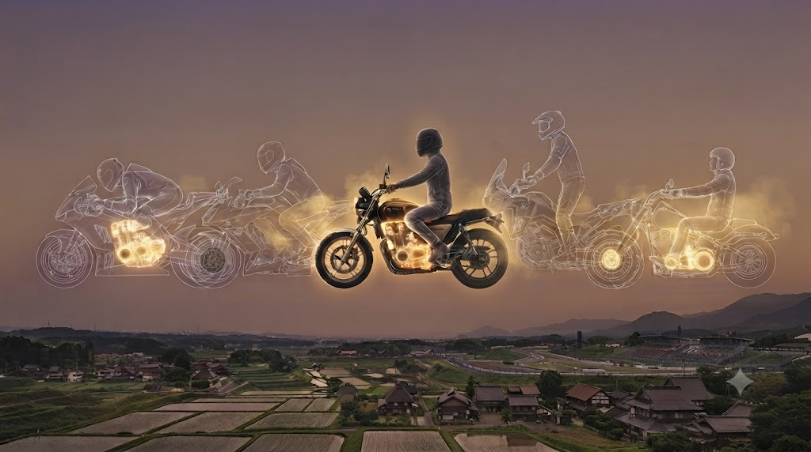
光っているのは、全部おなじエンジン。違うのは前傾の深さだけ。
この章の地図——核から外へ広げる順に読める。
- ① 核＝現行日本車のネオネイキッド。いま新車で買える6台を、MT-03を軸に1枚へ並べる。
- ② 選び分けの3軸。車検の壁（250cc以下か以上か）／エンジン形式（ツイン・シングル・直4）／重さ・足つき・価格。
- ③ 土俵を「カウルが無い」隣のジャンルまで広げる。ネオ勢はCB400SFを除き水冷×ストリートファイター顔で似た者同士なので、レトロ（GB350・W230・メグロS1）／クルーザー（レブル250）／スクランブラー（CL250）を入れて差を出す。
- ④ 隣のジャンルとの違い。「ネイキッドか、隣か」で迷ったとき用の1枚——レーサー系・レトロ系・クルーザーと、姿勢・エンジンの性格・得意場面で突き合わせる。
- ⑤ 「日本車・新車」の縛りも外す。390 Duke・スピード400などの外車や5年落ち中古まで含め、工学の最先端を並べる。
まず章の背骨——前傾スペクトラム。ネイキッドとその周辺は種類が多くて混乱しがちだが、前傾の深さ1本で一列に並ぶ。深い前傾（レーサー）から後傾（クルーザー）まで、この章に出てくる全部を置くとこうなる——以降のどの表も、この背骨の別断面にすぎない。
| 前傾度 | この章での代表 | 上半身 × 下半身 | 外装 | どこで楽か |
|---|---|---|---|---|
| ① 深い前傾 約15〜20° | YZF-R3・Ninja 400・CBR400R FOUR ＝レーサー系章 | セパハン × 高く後ろで膝を畳む | フルカウル | 高速・峠が主戦場。街は手首と首がつらい |
| ② 浅い前傾 約5〜10° | MT-03・Z400・MT-25・Z250・390 Duke | バーハンドル × レーサーのままの膝 | ストファイ | 街〜峠オールラウンド。上体は起き、下は攻められる |
| ③ 直立寄り 約0〜5° | 新型CB400SF・XSR155・スピード400・CB250R・400X | 手前バー × 中間ステップ | ネオレトロ／クロスオーバー | 街が主戦場。長時間も楽 |
| ④ 真の直立 約0° | GB350・W230・メグロS1 | アップハン × 低いミッドで膝ゆったり | レトロ | 街・のんびり流す。膝も背筋も解放 |
| ⑤ 後傾 | レブル250・エリミネーター400 | 手前に引いたバー × ミッドステップ 足はほぼ真下。「前に投げ出す」姿勢はフォアコン化で（レブルは純正比＋約17cm） | クルーザー | 一本道を流す。足つき最良 |
「ネイキッド」は曖昧語 ── ストファイとネオレトロで分ける（決め手は外装）
「ネイキッド」＝カウルを持たないオンロード車の総称（naked＝裸）でしかない。中身はバラバラなので、本ページは総称としてだけ使い、サブジャンル名で呼ぶ。ネイキッドには大きく3系統——①カウルを外しただけ（ストファイ）／②外装だけ旧車風（ネオレトロ）／③エンジンまで旧車＝空冷（クラシック）——がある。
走りをまず二分するのは「フルカウル車と同じエンジン・フレームか」だ——ここが前章レーサー系からの続き。①ストファイと②ネオレトロはフルカウルのレーサーと心臓（エンジン・車体）を丸ごと共有する“脱いだレーサー”で、走りは前章の水冷スポーツと同じ。③クラシックだけは共有しない専用の空冷レトロエンジンで、低速トルクのドコドコ＝別の走り（「乗り味」章・ストリート系章）。最初の分かれ目はエンジン、次が外装だ。
その①と②——ストファイとネオレトロ——を分けるのは、エンジンでもフレームでもなく外装、とくにタンクだ。
・ストファイ＝フルカウル車のカウルを外してバーハンドルにしただけ（タンクもテールもスポーツのまま）。
・ネオレトロ＝タンクを変え、テールまで旧車風に振り直した（中身は最新の水冷エンジン）。
実車が証明する——CB1000 Hornet（ストファイ）とCB1000F（ネオレトロ）は同じ1000cc直4でも、タンクから作り直して別物になる（Honda↗）。つまりネイキッドの分類は結局「外装のジャンル × エンジンの種類」の行列にすぎない（→下の「背骨の裏側」の外装マトリックス）。
① ストファイ（＝欧州名スーパーネイキッド）＝カウルを外しただけ。もとはカスタムの型——SSのカウルを剥ぎ、バーハンドルを付けて街の速度域に振り直す。起源は1980〜90年代の英国、転倒した直4スーパーバイク（GSX-R750・FZR・CBR900 FireBlade）のカウルを外したのが自然発生の始まりだ（だから原型は大排気量の直4）。ランプマスク・低く幅広いバー・カチ上げテールが洗練され、2000年代にメーカー純正化——ドゥカティ「モンスター」、カワサキ「Z」、ヤマハ「MT」。タンク・テールはスポーツのままで、中身はフルカウル兄弟と共通だ：
| ストリートファイター | フルカウルの兄弟（レーサー） | 共有するもの |
|---|---|---|
| MT-03／MT-25 ヤマハ | YZF-R3／YZF-R25 | エンジン・フレーム・足回りほぼ共通 |
| Z400／Z250 カワサキ | Ninja 400／Ninja 250 | エンジン・トレリスフレーム共通 |
| ジクサー250 スズキ | ジクサーSF250 | 油冷単気筒・車体共通（SFはカウル付き） |
② ネオレトロ＝タンクから旧車風に作り直す。中身（エンジン・車体）はストファイ／レーサーと同じでも、タンク・テール・丸目まで旧車風に振り直すので、上の「カウル外しだけ」の表には入らない。これも多くはフルカウル／スポーツ兄弟と心臓を分け合う：
| ネオレトロ | 同じ心臓の兄弟 | 中身（共有） |
|---|---|---|
| 新型CB400SF ホンダ | CBR400R FOUR（フルカウル） | 新設計の水冷直4・車体 |
| XSR900 ヤマハ | MT-09（ストファイ）／YZF-R9 | 水冷直3（CP3）・車体 |
| Z650RS カワサキ | Z650（ストファイ）／Ninja 650 | 水冷並列2気筒・車体 |
「ネオレトロ」という名前が要ったのは、水冷でレスポンスの良いエンジンを積んだ“新しいレトロ”を、空冷で中身までレトロな旧車系レトロ（GB350・W230）と区別するため——カワサキ空冷ゼファー↔水冷ZRXの分岐がその原型だ。なおCB250R（ネオスポーツカフェ）だけは共有するフルカウル兄弟を持たない専用設計で、上下どちらの表にも入らない（本物の250レーサーは別系統のCBR250RR＝脱カウル兄弟なし）。
③（延長）クルーザーも「心臓を借りる」——そしてエリミネーターの正体。「フルカウルの心臓に別の外装を着せる」構図は、ネイキッドを越えてクルーザーにも伸びている。現行の国産ミドルクルーザーは、伝統的な専用V2ではなくスポーツ／ネイキッドの水冷エンジンから作る：
| クルーザー | 同じ心臓の兄弟 | 中身（共有） |
|---|---|---|
| エリミネーター400 カワサキ | Z400（ストファイ）／Ninja 400（フルカウル） | 398cc水冷ツイン |
| レブル250 ホンダ | CL250・CB250R系 | 249cc水冷単 |
だが見方を変えると面白い：カワサキはネオレトロのZ400RS（Z400にレトロ外装）を出さず、代わりにエリミネーターを出した。これはストファイ（スポーツネイキッド）×アメリカン（クルーザー）の融合——レトロ外装を着せ替えるだけのネオレトロより一歩先の「ネオレトロの未来形」を提案しているようにも読める。最新スポーツの心臓に、旧来アメリカンの構えを掛け合わせた新種、という位置づけだ。
「外装を借りた兄弟」の実態 ── 諸元は同一、しかも“偽物”がレース世界王者
- 「外装違い」は文字通り——諸元まで同一。兄弟はフレーム・前後サス・ブレーキ・ホイールベース・ギア比（二次減速比）まで公表値が同じ（MT-03↔R3はWB1380mm・14/43、Z400↔Ninja 400はタンク〜シート〜テール形状まで同一で車重差1kg＝カウル分）。前傾はハンドル取付の1点で作られる（数値は「背骨の裏側」／逆にZ400のバーはNinja 400より90mm幅広で、操作のテコはストファイの方が効く逆転も）。
- 「借り物の外装」でも世界チャンピオン。市販車ベースのWorldSSP300の歴代王者はほぼNinja 400とR3（2018年にはNinja 400で女性初のソロ世界王者）。専用フレームが効くのは120PS〜の600/1000SSからで、45〜48PSなら鋼管フレームで剛性十分。むしろ“本物”のZX-25Rは4気筒で183kg、Ninja 400は167kg——パワーウェイトレシオは借り物ツインが上だ。いまは市販ストリート車が先、レースがそれを借りる＝「偽物/本物」は成立しない。専用SS（ZX-25R・CBR250RR）の価値は速度でなく「回し切る体験と限界域の精度」にある。
- 脱がせる実利。カウルを剥ぐと①上体が起きる（浅い前傾・街向き）／②数kg軽く数万円安い／③立ちゴケてもカウル割れなし／④風圧は全部体で受ける（一般道◎・高速△）。遊ぶなら「YZFを剥く」より最初からMTを買って軽くいじるのが素直（G-ZAC↗で定番部品と相場観がつかめる）。
なぜ小排気量は“カウルの有無で作り分け”が基本か（水冷ツインは部品が少なく安く1機種を共用できる）、4気筒が高コストの例外な理由、カワサキが出すならゼファー後継——といったメーカー戦略と「空き枠」は、下の「1つの心臓を全ジャンルへ」に集約。
カスタム視点での位置づけ（他の型との比較・検索ワード）は「カスタムの方向性 早わかり」表に集約。
1つの心臓を全ジャンルへ ── 水冷プラットフォーム展開の一覧表（クルーザーまで）
現行の中型は、1つの水冷エンジンに外装と姿勢を着せ替えて複数ジャンルを作る。5つの心臓を並べると、各社の戦略と「空き枠」が見える。
| 心臓 | レーサー | ストファイ | ネオレトロ | スクランブラー | クルーザー |
|---|---|---|---|---|---|
| ホンダ 249cc水冷単 | CBR250R 入門機・国内絶版 | CB250R 別設計のネオスポーツカフェ | — この単気筒にネオレトロ版は無い（直4のCB400SFは下段＝別の心臓）。レトロはGB350＝別系統の空冷単（’21〜・実質販売台数1位） | CL250 | レブル250 250クラス販売1位（7年連続） |
| ホンダ 399cc水冷直4 専用新設計 | CBR400R FOUR フルカウルの直4スポーツ（58PS・119.9万・’26/9） | — | 新型CB400SF 名車CB400SFの復刻（58PS・99.9万・’26/8）。フルカウルのCBR400R FOURと車体・エンジン完全共通の兄弟 | — | — |
| カワサキ 398cc水冷ツイン | Ninja 400 | Z400 | — Z400RSは無い（レトロはW230／メグロS1＝別系統の空冷で対応） | — | エリミネーター400 400クラス名目1位・実質2位（GB350系合計に次ぐ） |
| ヤマハ 320cc水冷ツイン | YZF-R3 | MT-03 | — XSR320は無い（XSRは155と700の間が空白）。レトロのSR400も’21年生産終了・後継なし | — | — |
| トライアンフ 398cc水冷単（TR系） | — | — | スピード400 ここが幹 | スクランブラー400X／XC | — |
トライアンフはさらに列の外へ2枠——スラクストン400（カフェレーサー・42PS・84.9万〜）／トラッカー400（フラットトラッカー・42PS・80.9万〜）、ともに'26年3月日本発売。5車種すべて同一のTR系単気筒。
- 頭の「レーサー」の格が一族の性格を決める。Ninja 400とYZF-R3はWorldSSP300王者の本物——脱カウルのZ400／MT-03はスポーツの心臓をそのまま持つ。対してホンダのCBR250Rは優しい単気筒にフルカウルを着せた入門機（本物の250レーサーは別系統のCBR250RR＝専用設計ツインで、脱カウル兄弟を持たない——上の“偽物/本物”参照）。だから単気筒一族（CB250R・CL250・レブル250・CRF250L）は出自から穏やかなライフスタイル系になる。ホンダの新直4はこの表の90年代版の再演——CBR400R FOUR（直4フルカウル）とCB400SF（直4ネイキッド）が1つの心臓を分け合う、CBR400RR＋CB400SF時代の温故知新だ。
- 中型の空き枠＝水冷ツインのネオレトロ——「出てもおかしくない」のに無い。Z650RS／XSR700の400版（Z400RS・XSR320）は存在せず、中型のネオレトロは直4（新型CB400SF＋フルカウルのCBR400R FOUR）と単気筒（スピード400）だけ。ホンダは専用直4を新設計してまでこの階級に参入した。車体もエンジンも既に持つカワサキ・ヤマハは、Z400／MT-03に外装を着せ替えるだけで出せる。なのに、出さない。不思議に見えるが、理由は各社で違って読める。
カワサキは「安く作れるのに、出せない」。ゼファー400もZRX400も四発だった400レトロの家系で、水冷ツインの着せ替えZ400RSはファンの目にブランド毀損と映る。対抗の構図も四発同士になる——フルカウル戦線はCBR400R FOUR↔ZX-4Rで既に成立しており、残るネイキッド戦線が新型CB400SF↔ZRX復刻だ。これは90年代の再演でもある：初代ZRX400はZZ-R400の水冷四発を流用してCB400SF・XJR400に当てた車だった。同じ手筋なら、今度はZX-4Rの399cc直4を再調律したZRX／ゼファー復刻になる。やるなら、このハイエンド四発しかプライド（ファンの）が許さない。しかもこの四発戦線は100万円級の戦い（CB400SF＝99.9万・ZX-4R＝112万〜）で、出力も58PS〜80PS——グローバルツインの設計根拠だった欧州A2免許（EUの中型区分・出力上限47.6PS）の枠を端から無視した、日本ローカルの意地の土俵だ。
ヤマハはXSR155（下）とXSR700（上）で挟み、間をあえて空けている。それでもカワサキ自身、この枠の破壊力は誰より知っているはずだ——Z900RS（Z1復刻）は大型クラス8年連続販売1位（2025年上半期2,472台・2位CB1300の約2倍、二輪車新聞調べ↗）。同じ手を400でやる「ゼファー復刻」は、ブランド力だけなら空冷四発ですら売れかねない最強カード。新型CB400SFとスピード400が売れれば、この空白が埋まる可能性は十分ある。 - クルーザー列＝日本型クルーザー。エリミネーターはZ400をクルーザー体型に組み替えた一台（変換の数値は上の「ネオレトロの未来形」注）。レブル250は同じ変換を単気筒でやった先行例。専用V2エンジンから作る伝統的アメリカンとは出自が違う——スポーツ／ネイキッドの心臓を持つ、日本独自のクルーザー枠だ。
- トライアンフだけ逆走する。日本勢が「レーサーの車体から剥ぐ」方向に展開するのに対し、トライアンフの400（バジャジ提携・インド生産のTR系単気筒）はネオレトロ（スピード400）を幹に、ヘリテージ系サブジャンルへ枝を伸ばす——スクランブラー400X／XC・スラクストン400（カフェ）・トラッカー400で1つの心臓から5車種はこのクラス最厚。レーサーもストファイもクルーザーも作らない＝性能軸に参戦せず、味とスタイルの棚だけを総取りしに来ている。上位のModern Classics（ボンネビル／スピードツイン／スクランブラー900）の縮小相似形で、ブランドの厚みをそのまま400に持ち込んだ形だ。
- 日本でクルーザーが勝つ理由＝グローバル仕様と日本の道のミスマッチ。ストファイ／レーサー勢は世界戦略車だ（R3／MT-03はインドネシア生産、Ninja 400／Z400はタイ生産。48PSは欧州A2免許の上限47.6PSに合わせた数字）。設計の前提は流れの速い道とワインディング。だが日本の現実は法定60km/h・信号と渋滞の舗装路・街中——旋回性能もパワーバンドも使う場面がない。対してレブル250・エリミネーター400・W230は、日本の免許制度と道を主戦場に据えた設計（そもそも400ccという排気量自体が普通二輪免許という日本固有の枠。グローバル版は別排気量のエリミネーター500＝451cc）。低いシート・楽な姿勢・低中速トルクは、渋滞と街にそのまま噛み合う。実売の偏り（クルーザー2クラス制覇 vs ストファイ勢の低迷）は「日本の道に合う設計」への投票と読める——インド発ながら低回転トルクの性格が日本の道と噛み合って大ヒットしたGB350も同じ構図だ。
- だから国内への「本気度」で4社が割れる。ホンダ＝真面目に高付加価値の日本専用設計——専用直4ファミリー（新型CB400SF＋CBR400R FOUR・99.9万）を新規開発し、レブル250・CL250・E-Clutchと日本の道に合う駒を自前で揃える。カワサキ＝日本固有の400枠で健闘——エリミネーター400・W230／メグロS1・ZX-4Rと、免許制度の枠に合わせた専用機を出し続ける。ヤマハ＝グローバル視野——国内中型はインドネシア・タイ生産の世界戦略車（R25／R3・MT-25／03・XSR155）の持ち込みのみで、SR400の後継も出さず国内専用中型はゼロ。スズキ＝事実上の撤退状態——中型はジクサー250（インド生産）・GSX250R（中国生産）の廉価輸入だけで、かつてインパルスで先鞭をつけたこの階級に専用設計はもう無い。クルーザー実売の2強（ホンダ・カワサキ）が、そのまま「日本の道に本気の2社」と重なるのは偶然ではない。
- 象徴がSR400の撤退と、GB350の大ヒット。ヤマハは43年続けた空冷単気筒の看板SR400を'21年3月で生産終了にし、後継を出さなかった。その翌月の'21年4月、ホンダがインド発のGB350を国内投入——空いた「緩い空冷単のドコドコ枠」をそのまま引き継いだ。結果は2025年上半期の実売でGB350/S＝クラス2位（1,609台）＋GB350C＝4位（931台）、ファミリー合計2,540台は1位エリミネーター（1,973台）をも上回る事実上の最大勢力。日本の道に合う「緩い単気筒」の需要は消えていなかった——椅子を降りたメーカーと、座り直したメーカーの差があるだけだ。
用語の定義 ── ジャンル早わかり（乗車姿勢・転回/直進・駆動系）
前傾スペクトラムの各段を、乗車姿勢・転回性能⇔直進安定・駆動系と足回りで一言ずつ。末尾の「信号の少ない国道での相性」列＝この用途（交差点の少ない田舎の国道・信号が少なく一定速で流す道）での相性——ここでは低速の転回性能はあまり要らず、直進安定・巡航の気楽さ・低中速トルクが効く、という目で見る。
| ジャンル | 外装のひとこと | 乗車姿勢 | 転回⇔直進 | 駆動系・足回り | 信号の少ない国道での相性 |
|---|---|---|---|---|---|
| フルカウル レーサー | 全身をカウルで覆ったスポーツ | 深い前傾 | キビキビ転回寄り | 高回転型・スポーツ倒立・強力ブレーキ | △ 常時前傾は疲れ、性能を持て余す |
| ストリートファイター | フルカウルからカウルを外しバーハンドル化した仕様 | 浅い前傾 | キビキビ寄り | レーサーと同じ駆動系・スポーツ足 | ○ 直進も普通にこなす。上体は楽 |
| ネオレトロ | 最新の駆動系にレトロ外装 | 直立寄り | 中庸 | 現代のFI・電制／モダン足（倒立多） | ◎ 直立で巡航が楽、中身は最新で扱いやすい |
| クラシック レトロ | 外装も駆動系もレトロ（空冷単気筒など） | 直立 | 直進安定寄り | 低回転トルク・正立フォーク・穏やか | ◎ 低速トルクでドコドコ流し、鼓動も味わえる |
| スクランブラー | レトロ/ネオ外装＋ブロックタイヤ・アップフェンダー | やや高い直立 | 直進安定＋悪路も | 長ストローク・前輪大径 | ○ 舗装は快適、砂利の脇道もいける |
| クルーザー | 低いシート・足を前に・ロング | 後傾 | 直進安定に全振り（転回は苦手） | 低回転トルク・のんびり足 | ○ 一本道の巡航は快適、転回不要なので弱点が出ない |
| クロスオーバー | スクリーン＋前輪大径のツアラー寄り | 直立 | 直進安定 | 現代の駆動系・長め足 | ◎ 風防で巡航が一段楽 |
なぜ直立ネイキッドが「幹」なのか ── バランス型から枝分かれした地図
日本車で最も古い「バランスの基準」は、CBの空冷ノンカウル（＝直立ネイキッド）だ。1960年代末のCB750 four以来のUJM（ユニバーサル・ジャパニーズ・モーターサイクル）——直立で、日常の足から休日のツーリングまで全項目60点以上・尖りは無いが破綻も無い万能像で、CB400SF（'92〜・教習車の定番）がその代名詞だった。この直立ネイキッドが「幹」で、各ジャンルはそこから1方向ずつ振った「枝」と読める：
- 前傾を深める枝：直立 →ストリートファイター（浅い前傾）→レーサー（フルカウル・深い前傾）。＝前傾スペクトラムの上側。
- 外装をレトロに振る枝：最新中身×レトロ外装＝ネオレトロ、外装も中身もレトロ＝クラシック。
- オフに振る枝：ブロックタイヤ・長ストローク＝スクランブラー／アドベンチャー。
- 低く寝かせる枝：後傾・足を前に＝クルーザー。
重量は「前傾ほど軽い」の単純比例ではない：最軽量はむしろ中間のストリートファイター（MT-03・Z400＝166kg）で、両端のGB350（179kg）・CB400SF（187kg）・フルカウルのCBR400R（195kg）が重い。効いているのは前傾よりプラットフォーム——共用の水冷ツインは軽く、専用の直4やレトロ単気筒は中身なりに重い。“軽さ”もまたMT-03が現代の実用バランス型である理由だ。
なぜ「性能」より「味付け」で選ぶ時代になったか ── 実用を越えた出力と、車で言うと
1980年代末〜'90年ごろ、400クラスの性能は「実用」を越えた。自主規制上限の59PSは、信号と法定速度の日本の街では完全に持て余す量——SR400（24PSの空冷単気筒）程度でも日常は足りる。同時に、車を買える経済力と道路整備が進み、「バイクでないと困る」のは都市部と若年層にほぼ限られた（地方の生活の足は車）。だから〜400ccで十分、パワーもスピードも要らない。ここで各社の差別化は性能軸から降りて、味付け軸（レトロ・クルーザー・スクランブラー・アメカジ）へ移る——峠やサーキットを走る前提が薄れ、日常の便利さとスタイルが主戦場になった。本ページが鼓動・レトロ度・用途で選び、価格が60〜70万で重なって「走りの質は横並び」なのも、この“性能が過剰になった後”の世界の話だ。
| バイク | 車で言うと | 中身 |
|---|---|---|
| 水冷ツイン MT-03・Z400 | カローラ | 安く作れてキビキビ・実用の本命。街乗りの最適解 |
| 王道ノンカウル CB400SF | クラウン | 重厚でちょい高級、直4の余裕。値段も一段上 |
| クルーザー レブル250 | ミニバン | 低く構えてゆったり巡航。速さより快適 |
| スクランブラー CL250 | SUV | 悪路もいける見た目と気楽さ。ライフスタイル訴求 |
背骨の裏側 ── 前傾はどう作られるか／外装は前傾とは別物
A. 前傾はどう作られるか（＝スペクトラムの縦の並びの正体）。ストファイが「直立」ではなく「浅い前傾」なのには構造上の理由がある——ストファイはレーサーの車体からハンドル1点だけ替えた外装違いで、ステップはレーサー位置のまま（MT-03のステップはR3と共通。バーだけ手前19mm・上39mm）。つまり下半身は「高く後ろのステップで膝を畳む」レーサーの姿勢のまま、上半身だけ起きている。カタログ諸元にはハンドルもステップ位置も載らない（載るのは全幅とシート高くらい）ので、実測比較はCycle Ergo↗（車種＋身長で前傾角と膝の曲がりが図に出る）が定番。背骨の度数は相場観の目安で、体格で大きく変わるので自分の身長で試すのが正しい（CB250Rはカフェ寄りの浅い前傾で、ストファイと直立の中間）。
「楽」の中身も前傾で変わる：ストファイの楽は「セパハンより手首・首が楽」というレーサー比の楽で、膝の畳みと軽い前傾は残る。レトロ勢の楽は膝も背筋も解放される絶対的な楽——長時間・渋滞・信号待ちで効く。逆にワインディングで荷重をかけたい日は、ストファイのレーサー由来の下半身が武器になる。だから前傾スペクトラムは、そのまま「街で楽か⇔攻めで武器か」の軸でもある。
B. 外装は前傾とゆるく相関するが、中身とは独立。背骨の「外装」列は姿勢と概ね連動するが、中身（エンジンの新旧）とは別軸だ。ここがジャンル名の混乱の元になる：
| 外装＼中身 | 最新（水冷・FI・電制） | レトロ（空冷単気筒など） |
|---|---|---|
| フルカウル | YZF-R3・Ninja 400・CBR400R FOUR | — |
| ストファイ顔 | MT-03・Z400 | —（成立しない） |
| レトロ外装 | XSR900・Z650RS・新型CB400SF ＝「ネオレトロ」 | GB350・W230・メグロS1 ＝③レトロ勢（外装も中身もレトロ） |
| クロスオーバー | 400X（CBR400R系）・Vストローム250SX | — |
「ネオレトロ」の正体＝最新の中身にレトロの外装。XSR900・Z650RS、そして新型CB400SFもこの枠。ただし同じネオレトロでも出自は分かれる——XSRは60〜70年代を参照した新規デザイン（「ネオレトロ」の名もヤマハ側の呼称）、CB400SFは実在した名車の復刻という違いがある（CB400SF側の中身は専用アコーディオンで）。対して③のレトロ勢は外装も中身もレトロ（空冷単気筒・鼓動そのもの）で、同じレトロ顔でも別ジャンル。この「空冷レトロ（中身もレトロ）」と「水冷ネオレトロ（中身は現代）」の枝分かれは、水冷でレスポンスの良いエンジンが普及したあたりで起きた——カワサキで言えば空冷のゼファーと水冷のZRXの違いがその分岐の原型で、いまはGB350・W230がゼファー側、CB400SFがZRX側にあたる。外車のスピード400（水冷単×レトロ外装）も同じネオレトロ枠。ヤマハのYZF-R＝MT＝XSR（中身共通で外装だけ違う3兄弟。125クラスも国内3兄弟、上はMT-09↔XSR900）、カワサキのNinja 650／Z650／Z650RSがこの独立性の教科書。そして4着目のクロスオーバー——400Xはストファイと間違えやすいが、スクリーン・前19インチ・直立でこの枠（CBR400Rの外装違い兄弟。ジクサー250に対するVストローム250SXも同構図）。
同じエンジンなら、回さないとパワーが出ない？ ── いいえ、兄弟は全員「即応型」
「レーサー系と同じエンジン」と聞くと、レーサー系章の「低回転はスカスカ、原付のような物足りなさ」（ZX-25R）を思い出すかもしれない。でも心配は要らない——あの性格は超高回転4気筒（ZX-25R・ZX-4R）だけのもので、この2台にネイキッド版は存在しない。日本車ネイキッドが外装を借りている相手は、すべてレーサー系章の表で一般道◎〜○が付いていたトルク型ツインのほう＝ゲームのたとえなら全員シューター（押した瞬間に撃てる）だ。
| ネイキッド | 兄弟（レーサー系章での一般道評価） | 最大トルク発生回転 |
|---|---|---|
| Z400 | Ninja 400 ── ◎「常用域の扱いやすさ随一」 | 8,000rpm |
| MT-03 | YZF-R3 ── ◎「一段ラクに流せる中庸」 | 9,000rpm |
| MT-25／Z250 | YZF-R25／Ninja 250 ── ○「無理なく楽しめる」 | 10,000rpm前後 |
| 該当なし | ZX-25R／ZX-4R ── △「回さないと本領が出ない」 スピナー型にネイキッド版は無い | 13,000rpm以上 |
- 「最大トルク@8,000〜9,000rpm」は“ピークの位置”であって、“そこまで力が無い”ではない。ツインは3,000〜4,000rpmから実用十分なトルクがリニアに立ち上がるので、街の流れには回さずスッと乗れる。ZX-25Rの「下が空っぽ」とは別物。
- グループ内の濃淡はある：Z400・MT-03は下が厚くアクセル任せで流せる。MT-25・Z250（250ツイン）はトルクピークが1万回転と高めで、キビキビ走るならこのグループでは一番回し気味になる——MT-03の＋71ccの価値はまさにここ。シングル勢（CB250R・ジクサー250）はトルク@7,300〜7,750rpmと下寄りで、トコトコ粘る側。
- 昔の直4ネイキッド（ゼファー・CB400SF）の「クラッチを離すだけでスルスル出る」絹のような感触は、気筒数（点火間隔）の産物——1回の燃焼が小さく細かく続く直4は、低回転でも力が途切れない。ツインは量こそあるが粒が粗く「トトト」と間欠的。つまり低回転の乗り味は「量（パワーバンドの位置）」×「きめ（気筒数）」の2軸で、ZX-25Rは絹のきめなのに量が無い、現行ツインは量はあるがきめが粗い、両方そろうのはCB400SFだけ——そして'26年8月、その新型が復活する（下のアコーディオン参照）。
「レスポンスがいい」って何？ ── 右手とエンジンの“音ズレ”が消えるまでの40年
現行ネイキッドの美点として必ず挙がる「レスポンスの良さ」。乗ったことがないと想像しにくいが、正体はシンプルで——右手（アクセル）の動きとエンジンの反応の「時間差」がゼロに近いということ。動画で言えば「音ズレ」が無い状態：ふかせば音が同時に付いてきて、戻せば同時に静まる。手の動きとエンジン音が口パクなしで一致する。ここに至る40年は、そのまま「燃料の送り方」の進化史になっている。
| 年代 | 仕組み | 右手との関係（火のたとえ） |
|---|---|---|
| '80〜'90年代 ゼファー・初代CB400SF | キャブレター 霧吹きの原理でガソリンを吸い出す機械仕掛け。電子制御なし | 昔のガス湯沸かし器——コックをひねってからボッと青火が立つまで一拍ある。雑に全開にすると混合気が追いつかずゴボッと息継ぎし、寒い朝は「チョーク」という点火の儀式も要った。右手と加速の間に、ゆるいゴム紐が1本挟まっている感じ |
| '00年代 排ガス規制で一斉FI化 | FI（電子制御燃料噴射） コンピュータが毎瞬、最適な量を噴く | 遅れは消えた。ただし初期は「ドンツキ」——アクセルを閉じて開け直した瞬間、スイッチのようにカクンと角が立つ。つまみ式のコンロがON/OFFスイッチになったような粗さ |
| '10年代〜現行 | 緻密なFI制御 開け方・回転・ギアまで見て噴射を調整。上位クラスは右手とエンジンを電線でつなぐ電子スロットルまで | つまみに炎が吸い付く現行コンロ——ひねった分だけ、ひねった瞬間に火が伸び縮みする。遅れも角も無い |
この「ズレの消滅」を体で感じるとこうなる——昔のバイクの加速はエレベーターだ。動き出しの瞬間を悟らせず、気づいたら上の階（＝速度）に着いている。ミニバンがGを感じさせないままスルスル速度を乗せるのと同じ、ゆったりした世界だった。キャブの遅れが加速の立ち上がりの「角」を丸めていたからで、遅かったという意味ではない。対して今のネイキッドはスクーターの発進——開けた瞬間に体がクッと後ろへ、戻した瞬間にカクッと前へ、前後に揺すられる。原付スクーターで誰もが知っているあの即時性が、発進だけでなく全速度域でずっと続く——これが現行の「キレ」であり、ワインディングで開けた瞬間に駆動が立ち上がる気持ちよさの正体だ。
① 現行の日本車ネオネイキッド（〜400cc）― 新車で買える6台
排気量の大きい順。★＝この章の軸のMT-03。価格は税込メーカー希望小売（2026年7月時点）。鼓動＝ドコドコ感の主観スコア（0-10。物差しと聴き比べは後の「乗り味で選ぶ」章）。上3台（〜400cc）は車検あり、下3台（250cc以下）は車検なし——表の真ん中に「車検の壁」が走っている。
| モデル | 系統／エンジン | 最高出力 | 最大トルク | 車重／シート高 | 価格・状態 | エンジン音 | 鼓動 |
|---|---|---|---|---|---|---|---|
| 新型CB400SF E-Clutch ホンダ '26/8/21発売 | ネオレトロ 新設計・水冷直4 399cc | 58ps /11,500rpm | 38N·m /9,750rpm | 187kg 780mm | 99.9万 新型・E-Clutch標準 | ▶ 直4 | 1 |
| Z400 | ストリートファイター 水冷2気筒398cc | 48ps /10,000rpm | 37N·m /8,000rpm | 166kg 785mm | 77.0万 現行 | ▶ 水冷2気筒 | 1 |
| ★MT-03 | ストリートファイター 水冷2気筒320cc | 42ps /10,750rpm | 30N·m /9,000rpm | 166kg 780mm | 68.8万 現行 | ▶ 水冷2気筒 | 2 |
| MT-25 | ストリートファイター 水冷2気筒249cc | 35ps /12,000rpm | 23N·m /10,000rpm | 166kg 780mm | 63.3万 現行 | ▶ 水冷2気筒 | 2 |
| Z250 | ストリートファイター 水冷2気筒248cc | 35ps /12,500rpm | 22N·m /10,500rpm | 164kg 795mm | 70.4万 現行 | ▶ 水冷2気筒 | 1 |
| ジクサー250 | スタンダード 油冷単気筒249cc | 26ps /9,300rpm | 22N·m /7,300rpm | 154kg 800mm | 49.3万 現行 | ▶ 油冷単 | 3 |
絶版の中古枠（表からは外した2台）：CB250R（ホンダ '18〜'24・水冷単27PS・144kgのクラス最軽量級）は中古40万台〜の「軽さ枠」。旧CB400SF（'92〜'22・最終型NC42・直4 53PS・200kg〈ABS〉）は中古80万〜と高騰してきた（新型99.9万の登場で相場は動きうる＝下のCB400SFアコーディオン）。
② 選び方の3軸 ― 車検の壁 × エンジン形式 × 重さ
| 軸 | 分かれ目 | どう効くか |
|---|---|---|
| ① 車検の壁 最初の分岐 | 250cc以下（車検なし）か 251cc以上（2年ごとに車検）か | 車検はユーザー車検で2万円弱、店任せで5〜7万円／回。軽自動車税も3,600円 vs 6,000円/年。年換算1〜3万円＋手間の差で、「維持の気楽さ」最優先なら250以下。逆にこのコストを許容するなら、上の排気量を選ばない理由がなくなる |
| ② エンジン形式 性格の分岐 | 高回転ツイン／ 低中速シングル／直4 | ツイン（MT系・Z系）＝滑らかで上まで伸びる。回すと楽しいが鼓動は薄い。シングル（ジクサー250）＝軽くて細く、下からトコトコ粘る。燃費34.5km/L（WMTC＝国際基準の実走行想定燃費値）。直4（新型CB400SF）＝別格の滑らかさと高回転サウンド。ただし重めで、高い |
| ③ 重さ・足つき 日常の分岐 | 154kg（ジクサー250）〜 187kg（新型CB400SF） | ネイキッドはどれもシート高780〜800mmで大差なし——効くのは車重。押し引き・取り回し・立ちゴケ耐性は軽いほど有利。軽さ最優先なら絶版CB250R（144kg・中古）や、③のW230（143kg）という道もある |
MT-03が「軸」になる理由 ― 250の車体に、中身だけ余裕を足した320
MT-03はMT-25の車体そのままに、エンジンのボアだけ広げて320cc化した一台（諸元の細部は下の〈MT-03 vs MT-25〉）。250の軽さ・扱いやすさはそのまま、発進・追い越し・高速だけ一段余裕——唯一の代償が「320ccなので車検が付く」こと。だからこの表は全部「MT-03から何を足すか・引くか」で読める。
MT-25なら同じ車体で−5.5万＋車検なし。減るのは下のトルク（高速・タンデムの余裕）だけで、街乗りの体感差は小さい。維持の気楽さ最優先ならこちら。
＋8.2万で48PS・37N·mのツイン最強格（Ninja 400と同じ心臓）。どうせ車検を払うなら400まで行く、が成立する。車重はMT-03と同じ166kg。
49.3万＋燃費34.5km/L＋油冷単のシンプル構造。性能より「気楽な相棒」に振り切った1台。浮いた20万でヘルメットと用品が全部揃う。
MT-03 vs MT-25 ── 5.5万円差で買う「＋71cc」の中身
- 共通：フレーム・足回り・外装・燃料タンク14L・車重166kg・シート高780mm。見た目はエンブレム以外ほぼ区別がつかない。
- 違い：ボア60→68mmで249→320cc。最大トルク23N·m/10,000rpm → 30N·m/9,000rpm——「3割太いトルクが、より低い回転で出る」ので、発進・追い越し・登坂で常にひと呼吸余裕がある。高速巡航も同じ速度をより低い回転でこなせて疲れにくい。
- 維持費の差：MT-03は2年ごとの車検＋軽自動車税6,000円/年（MT-25は3,600円）。ユーザー車検でこなせば差は年1万円台に収まる。店任せなら年2〜3万円の差。
- 結論：高速・タンデム・長距離が視野にあるならMT-03、街乗り中心で維持の気楽さ優先ならMT-25。乗り味の質は同じなので、迷ったら「車検を手間と見るか、儀式と見るか」で決めていい。
- おまけ：同じ迷いがフルカウル側にもある（YZF-R3 vs R25）。前傾姿勢が欲しいならレーサー系章へ——エンジンは同じ、外装が違うだけ。
CB400SF ── 直4の王様。'26年8月、新型で復活
- 何者か：1992〜2022年の30年選手にして国産400cc直列4気筒の象徴。回転数で2バルブ→4バルブが切り替わるHYPER VTECの官能的な高回転サウンド、教習車の定番ゆえの「誰でも一度は乗った」安心感——ネイキッドの王道そのもの。'22年10月の生産終了以降、中古NC42は80万〜120万・最終型150万超とZ400の新車（77万）を超える高騰が続いてきた。
- 新型の復活（'26/7/10発表）：CB400 SUPER FOUR E-Clutchが'26年8月21日発売・99万8,800円。新設計の直4は58PS/11,500rpm・38N·m/9,750rpmで旧型（53PS）を超え、車重は187kg＝旧型最終ABS（200kg）比13kg減（シート780mm）。クラッチ操作を自動制御するE-Clutch標準（OFFやレバー操作で従来のマニュアル操作も可）＋5インチTFT。さらにフルカウル兄弟のCBR400R FOURも9/18発売（119.9万円）——直4にも「外装違い」のペアが誕生する。
- 楽しみ方の方向——ジャンルは「ネオレトロ」（最新の駆動系×レトロ外装）：丸目・スチールタンク・ヨンフォア想起の4-2-1集合管という無骨な外装に、中身はTBW＋E-Clutch＋新設計直4の現行最先端。その中身がフルカウルのCBR400R FOURと対をなし、90年代の直4スポーツ＋ネイキッドの座組みごと現代に建て直したのがCB400SFだ（ネオレトロの定義・XSRとの違いは「背骨の裏側」）。空冷単気筒のレトロ勢（③章のGB350など）とは方向性が正反対で、GB350が「機械の懐かしさそのもの」を味わうバイクなら、こちらは最新メカに無骨をまとわせて、夜の首都高を流す——ネイキッドの現代だからこその楽しみ方が核。見た目の近さに騙されないこと。
- 判断：「直4の音と滑らかさ」が新車で買えるようになったのは大事件。100万円はZ400（77万）比で＋23万だが、「量×きめ」の両立という唯一無二はもう中古プレミアムを払わなくていい。逆に言うと高騰していた中古NC42を急いで高値掴みする理由は薄れた——相場が動く可能性も含め、官能枠は新型の実車を見てから決めるのが得策。
③ カウルが無い仲間たち ― レトロ・クルーザー・スクランブラーまで土俵を広げる
ネオネイキッド勢の弱点は、正直どれもよく似ていること——丸目のCB400SFを除く5台は全員、水冷×ストリートファイター顔で、並べると見分けがつきにくい。そこで視野を「カウルが無い×街乗りもワインディングも問題ない」まで広げると、レトロ系・クルーザー・スクランブラーが同じ土俵に乗ってくる。実際、時速80km以下の世界では、走りの質はどれもネイキッドとほぼ同じ——風防の差が効くのは高速巡航から、オフ性能の差が効くのは未舗装からで、その下の速度域で違うのは「味と見た目」だけ。しかも価格帯は60〜70万円台で完全に重なる。★＝基準のMT-03。
| 系統 | モデル | エンジン | 最高出力 | 最大トルク | 車重／シート高 | 価格 | 鼓動 | オフ |
|---|---|---|---|---|---|---|---|---|
| ネオ （基準） | ★MT-03 | 水冷2気筒 320cc | 42ps /10,750rpm | 30N·m /9,000rpm | 166kg 780mm | 68.8万 | 2 | 0.0 |
| レトロ | GB350 | 空冷単気筒 348cc | 20ps /5,500rpm | 29N·m /3,000rpm | 179kg 800mm | 64.9万〜 S 69.3／C 71.5 | 7 | 1.5 |
| レトロ | W230／メグロS1 | 空冷単気筒 232cc | 18ps /7,000rpm | 18N·m /5,800rpm | 143kg 745／740mm | 66.6万／ 73.7万 | 6 | 0.8 |
| クルーザー | レブル250 | 水冷単気筒 249cc | 26ps /9,500rpm | 22N·m /6,500rpm | 171kg 690mm | 63.8万 E-Clutch 69.3 | 3 | 0.8 |
| スクランブラー | CL250 | 水冷単気筒 249cc・レブル系 | 24ps /8,500rpm | 23N·m /6,250rpm | 172kg 790mm | 62.2万 | 3 | 7.7 |
オフ＝オフロード性能スコア（0-10。算出は後の「釣りで選ぶ①」章）。W230は未算出のため同系メグロS1の値を流用。価格は税込メーカー希望小売（2026年7月時点）。
④ 隣のジャンルとの違い ― レーサー系・レトロ系・レブル（クルーザー）
「ネイキッドにするか、隣のジャンルにするか」で迷ったとき用の1枚。ここまで見た通りネイキッドとレーサー系（ツイン）は中身が同じ——残る分かれ目は姿勢とカウルだけだ。レトロ系とクルーザーは、速さよりも「下の粘りと味」に振った別路線——同じ「回さなくても走る」でも理由が違う。
| ネイキッド （この章） | レーサー系 （レーサー系章） | レトロ系 （乗り味章のクラシック） | クルーザー （クルーザー章） | |
|---|---|---|---|---|
| 代表 | MT-03・Z400 | YZF-R3・Ninja 400・ZX-25R | GB350・SR400・クラシック350 | レブル250・エリミネーター400 |
| ポジション | 浅い前傾×バーハンドル——ステップはレーサー位置のまま上半身だけ起きる（章頭の前傾スペクトラム参照）。セパハンより手首・首が楽で視界が広い | 深い前傾×セパハン。伏せて風をかわす戦闘姿勢 | 直立×アップハン。低いステップで膝もゆったり背筋が伸びる | 低いシートに腰を落とし、足を前に投げ出す |
| エンジンの性格 | 兄弟レーサーと同じトルク型ツイン（即応型）。滑らかで上まで伸びる | ツインは即応型、超高回転4気筒だけ「溜め」型（低回転スカスカ） | 空冷シングル・トルク@3,000rpmと最も下寄り。速さより鼓動が主役 | 低回転トルク型。ただし現行勢は水冷で鼓動薄め（濃いのは中古V2） |
| 低回転の乗り味 | 3〜4千回転から実用トルクが線形。回さなくても流れに乗れる | ツインは同左。ZX-25Rは回さないと原付のような物足りなさ | 一番粘る。クラッチだけでドコドコ進む | 粘る。そもそも「ゆったり流す」前提の造り |
| 鼓動感 | 1〜3 滑らか側 | 1〜2 回して咆哮 | 6〜9 鼓動が本体 | 1〜8 エリミ1〜メテオ8 |
| 得意な場面 | 信号の多い一般道・普段の足。取り回しと気楽さの総合点 | ワインディングで回す楽しみ。カウルがあるので高速も一番楽 | 音と振動を味わいながら流す。所有する喜び・スタイル | 田舎の一本道を流す・見た目。足つき最良 |
| 弱点 | 高速の風圧。鼓動・レトロ味は薄い | 街では姿勢がきつい（4気筒は下もスカスカ） | 絶対的な速さ・高速巡航。振動は長距離で疲れも | 小回り・Uターンが大回り。積載も苦手（釣り③章） |
⑤ 工学の最先端を味わう ― MT-03を軸に、国籍と新車の縛りを外した7台
この章は①と同じMT-03軸だが、選定基準を替える——鼓動の対極、「現代の工学的な最先端を、カウルレスの気楽な姿勢で味わう」枠。条件は(a) 中身がフルカウル車と共通（＝カウルを脱いだフルカウル）か、それに匹敵する最新設計、(b) 中型区分（普通二輪で乗れる〜400cc）であること。①と違って国籍は不問、5年落ちくらいの中古も予算の逃げ道として視野に入れる（中古相場は目安）。外装はストファイ／ネオレトロ混在——章頭の前傾スペクトラム＆「背骨の裏側」の通り、中身の最先端度と外装は独立だからだ。
| モデル | 外装 | エンジン | 出力 | 車重／シート | 工学の見どころ | フルカウル兄弟 | 価格・入手 |
|---|---|---|---|---|---|---|---|
| 新型CB400SF E-Clutch ホンダ | ネオレトロ 90年代王道 | 水冷直4 399cc | 58ps /11,500rpm | 187kg 780mm | E-Clutch＋TBW＋5型TFT——クラッチまで電子制御するのはこの表で唯一 | CBR400R FOUR '26/9〜 | 99.9万 新車のみ |
| 390 Duke KTM | ストファイ | 水冷単 398.7cc | 45ps /8,500rpm | 165kg 800mm | この章の工学王——TFT＋スマホ連携・電子スロットル・トラコン・スーパーモトABS・WP調整式サス（QS＋はop） | RC390 | 82.9万 旧世代5年落ち40〜50万 |
| Z400 カワサキ | ストファイ | 水冷2気筒 398cc | 48ps /10,000rpm | 166kg 785mm | クラス最強48PS＋アシスト&スリッパークラッチ。中身はWorldSSP300王者Ninja 400 | Ninja 400 | 77.0万 5年落ち50万前後 |
| スピード400 トライアンフ | ネオレトロ 60年代英国 | 水冷単 398cc | 40ps /8,000rpm | 170kg 790mm | TBW・切替式トラコン・倒立φ43・ラジアル4pot——外装はビンテージ、中身は完全に現代 | — 兄弟は400X | 75.2万 '23登場・高年式中古のみ |
| ★MT-03 ヤマハ | ストファイ | 水冷2気筒 320cc | 42ps /10,750rpm | 166kg 780mm | 軸。'20〜は倒立フォーク。電制は最小限だが、中身はWorldSSP300王者R3と同じ——「証明済みの工学」 | YZF-R3 | 68.8万 5年落ち40万台 |
| CB250R ホンダ '18〜'24 | ネオスポーツ カフェ | 水冷単 249cc | 27ps /9,500rpm | 144kg 795mm | クラス最軽量144kg＋倒立SFF-BP＋IMU連携ABS（'19〜）——ビッグバイクの電制を最軽量ボディに | — 専用車体 | 絶版・中古40万前後 5年落ちの旨味最大 |
| XSR155 ヤマハ | ネオレトロ 60〜70年代 | 水冷単 155cc・VVA | 19ps /10,000rpm | 137kg 810mm | 可変バルブVVA・倒立フォーク・A&Sクラッチ——'26/6/30に国内正規化したばかりの最新枠 | YZF-R15 MT-15は逆輸入のみ | 53.9万 新車が表内最安 |
- 電制を盛る→390 Duke
- 気筒を盛る→新型CB400SF
- パワーを盛る→Z400
- 軽さへ削る→CB250R・XSR155
- 外装だけ替える→スピード400・XSR155
徹底比較① 車体・ジオメトリ ── 曲がる・止まる・取り回しを数字で
読み方は本ページ共通のジオメトリの流儀：WBが長い・キャスターが寝ているほど直進安定、短く立っているほどキビキビ。フォークは倒立ほど高剛性、ブレーキはディスク径が大きいほど強力。回転半径の公表はホンダのみ。Z400はカワサキ公表の切れ角35°からの推定。他の数値は各社公表諸元。
| モデル | WB | キャスター （トレール） | フォーク | ブレーキ前 | 車重 | 回転半径 | 性格 |
|---|---|---|---|---|---|---|---|
| 新型CB400SF | 1405mm 最長 | 25°00′ （98.4mm） | 倒立 | ダブルディスク 表内唯一 | 187kg | 2.6m | どっしり直進寄り——直4の重さを安定に変換 |
| 390 Duke | 1357mm | 24° （ヘッド角66°） | 倒立φ43 WP 調整式 | φ320 ラジアル4pot | 165kg | — | 最もワインディング寄り——短WB×軽さ×強ブレーキ |
| Z400 | 1370mm | 24.5° （92mm） | 正立φ41 表内唯一の正立 | φ310 | 166kg | 約2.6m 切れ角から推定 | 中庸スポーティ——装備は地味だが躾は優等生 |
| スピード400 | 1377mm | 24.6° （102mm） | 倒立φ43 | φ300 ラジアル4pot | 170kg | — | キビキビ旋回型（③章の再掲）——外装に反して中身は俊敏 |
| ★MT-03 | 1380mm | 25°00′ （95mm） | 倒立φ37 '20〜 | φ298 | 166kg | — | 中庸の教科書——全数値がド真ん中＝軸たる由縁 |
| CB250R | 1355mm | 24°44′ （93mm） | 倒立φ41 | φ296 | 144kg | 2.3m | 街中の取り回し最強——GB350と同値の小回り×最軽量 |
| XSR155 | 1330mm 最短 | 25.7° （88mm） | 倒立φ37 | φ267 | 137kg | — | 原付感覚のヒラヒラ——最短WB×最軽量×最小トレール |
②7台中6台が倒立フォークで、正立はZ400だけ。だがこれは「できないから」ではない。カワサキは'89年のZXR400で量産車世界初の倒立フォークを実用化した張本人（ZXR250も250クラス初）で、35年前からこの排気量帯に倒立を載せる力がある。つまりZ400の正立は、あえての選択だ。48PS域に必要な剛性の見極め（実際この正立のままNinja 400はWorldSSP300を勝っている）に加え、整備性——正立はシールが路面の泥から遠く、漏れてもキャリパーに垂れず、OHも安い。倒立をやり尽くしたメーカーが「このクラスの使われ方なら正立が正解」と引き算した、と読むと装備の地味さの意味が反転する。
③回転半径では（公表はホンダ2台、Z400は切れ角からの推定）CB250Rの2.3mがGB350と同値＝市街地転回では最強クラス（物差しは後の「釣りで選ぶ①」章）——「軽さ×小回り」の都市特化が数字で裏付けられる。ブレーキは390 Dukeのφ320ラジアル4potとスピード400のラジアル4potが単品では上位、CB400SFは表内唯一のダブルディスクで車格なりの制動力。
徹底比較② エンジンの味と生活面 ── 鼓動・音・車検・高速・航続・積載
前半は乗り味の軸（トルクの位置＝パワーバンド、きめ＝気筒数、鼓動＝本ページ共通の主観。★印は本章での新規評価）。後半は生活面の軸（車検・航続・積載。積載の判定根拠は後の「釣りで選ぶ③」章）。航続＝タンク×WMTC燃費の概算。
| モデル | 最大トルク ＠回転 | 低回転の乗り味 （量×きめ） | 鼓動 | 音 | 車検 | 高速巡航 | 航続 タンク×WMTC | 積載 |
|---|---|---|---|---|---|---|---|---|
| 新型CB400SF | 38N·m /9,750 | ピークは最上段だが、直4のきめで低速も絹——「量×きめ」唯一の両立 | 1 | ▶ 直4 | あり | ◎ 58PSの余裕 | 約350km 15L×23.1 | ○ 社外キャリア待ち |
| 390 Duke | 39N·m /7,000 | 単気筒でクラス最大トルク——中速でドンと蹴る粒の太さ | 3★ | ▶ ビッグシングル | あり | ○ 単気筒の微振動 | — WMTC未公表・15L | ○ 純正パワーパーツ |
| Z400 | 37N·m /8,000 | ツインの中で一番下が厚い——アクセル任せで流せる（レーサー章◎の中身） | 1 | ▶ 水冷2気筒 | あり | ◎ 48PS＋ツインの滑らかさ | 約350km 14L×24.8 | ○ 社外キャリア豊富 |
| スピード400 | 37.5N·m /6,500 最も下 | 表内で最も下寄りのピーク——ゆるゆる流しに一番近い性格 | 4 | ▶ 水冷シングル | あり | ○ 40PS・風防ゼロ | 約370km 13L×約28.6（欧州値換算） | ◎ 純正ラックKIT（釣り③章） |
| ★MT-03 | 30N·m /9,000 | 中庸——3〜4千回転から線形に付いてくる即応ツイン | 2 | ▶ 水冷2気筒 | あり | ○ R3譲りの巡航 | 約355km 14L×25.4 | ○ 社外キャリア豊富 |
| CB250R | 23N·m /7,750 | 下寄り単気筒でトコトコ——軽さと相まって街では過不足なし | 3★ | ▶ 水冷シングル | なし | △ 27PSは流れ＋α | 約335km 10L×33.7 | △ タンデム部が短い |
| XSR155 | 14N·m /7,500 | VVAが下と上を両取り——低速トコトコ＋高回転の伸びを切替で | 2★ | ▶ 水冷シングル | なし | △ 19PS・法定＋αが精一杯 | 約480km 10L×48.1 | ○ アジア圏で社外豊富 |
徹底比較③ スクランブラー変身適性 ── ブロックタイヤを履かせたら様になるか
「カスタムの方向性 早わかり」章のスクランブラー型（ブロックタイヤ・アップフェンダー・ワイドバー）を、この7台に当てたらどうなるか。17インチでもスクランブラーは成立する（スヴァルトピレン401・レオンチーノ250は現役の17インチスクランブラー）——決め手はホイール径ではなく、①純正サイズにブロック調タイヤが流通しているか（バイアスの70扁平は選択肢あり、低扁平ラジアルは薄い）、②造形が馴染むか（丸目×水平タンク◎、鋭角ストファイ×）、③電子制御がタイヤ径変更に寛容かの3つ。
| モデル | 純正タイヤ | ブロック調タイヤの選択肢 | 造形の相性 | 判定・ひとこと |
|---|---|---|---|---|
| XSR155 | 110/70-17 140/70-17 バイアス | ◎ 後輪はVストローム250純正のデュアルパーパス（IRC GP-210）と同サイズ、前輪も80扁平の近似あり。アジア圏はブロック調の流通が豊富 | ◎ 丸目×ティアドロップタンク。本国タイではスクランブラーカスタムが定番文化 | ◎ ほぼ一人勝ち——タイヤ＋フェンダーで様になり、137kgの軽さは林道でそのまま武器 |
| スピード400 | 110/70R17 150/60R17 | △ 低扁平ラジアルで薄い | ◎ 造形は最適格 | ○ ただし答えは別——兄弟のスクランブラー400X（前19インチ・オフ7.7＝「釣りで選ぶ」章の主役）が変身後の完成品として最初から売っている |
| ★MT-03 | 110/70-17 140/70-17 バイアス | ○ XSR155と同じ理屈で後輪は同サイズ流用圏 | △ ストファイ顔にブロックは浮く——寄せるならトラッカー方向 | △ タイヤは履けるが「顔」が先に問題になる |
| CB250R | 110/70R17 150/60R17 ラジアル | △ 低扁平ラジアルで薄い | ○ ネオスポーツカフェ→トラッカー寄せのカスタム例はある | △ 軽さは魅力だが靴が無い。IMU連携ABSはタイヤ径変更に敏感な側 |
| Z400 | 110/70R17 150/60R17 ラジアル | △ 薄い | × ストファイの鋭角外装 | × この遊びの受け皿はカワサキならW230カスタム（レトロ章） |
| 新型CB400SF | 120/70ZR17 160/60ZR17 | ○ ブロック調（MT60RS系）が一応流通するサイズ | × 王道ネイキッドの造形と187kgは方向性が違う | × ホンダでこの遊びをするならCL250かGB350カスタム（「カスタムの方向性」章） |
| 390 Duke | 110/70R17 150/60R17 ラジアル | △ 薄い | × 鋭角デザインは7台で最もブロックから遠い | × 電制てんこ盛りはタイヤ径変更と相性最悪。KTMは本家に390 Adventureがある——変身より別車 |
注意（やる場合）：タイヤ外径を変えるとメーター誤差が出て、ABS・トラコンの制御前提も狂う——IMU持ち（CB250R）や電制の多い車両（390 Duke）ほど純正外径の維持が無難。フェンダーとのクリアランス確認も忘れずに。ここはあくまで「カスタムの方向性」章のライトカスタムの範囲の話。
補助線：同メーカーのエンデューロから部品を流用できるか。先に結論——ホイール・フォークの車種間流用が「簡易に安全に」成立するのは同一プラットフォーム内だけで、別プラットフォーム間はステム径・アクスル径・キャリパーピッチ・ABSセンサーリングのどれかで大抵詰む。だからこの補助線が測っているのは「ボルトオンできるか」ではなく、各メーカーに『同系エンジンのオフ車』という土壌があるか——部品・ノウハウ・完成車の受け皿の厚みだ。
| メーカー | 同系のオフ車 | 流用の現実味 |
|---|---|---|
| トライアンフ スピード400 | スクランブラー400X 同一フレーム・同一エンジン | ◎ 唯一の「同一プラットフォーム」流用——前19インチ足回り・ワイドバー・アップフェンダーの移植は理屈上この表で最短。それでもフォーク長・ブレーキ径・メーター再設定が絡むので「簡易」ではない——だからこそ「最初から400Xを買う」が正解になる |
| KTM 390 Duke | 390 Enduro R／390 Adventure 同一エンジン・同系フレームの現役オフ勢 | ◎ 土壌は最強——1つのプラットフォームからストファイ／エンデューロ／アドベンチャーまで外装違いで揃える唯一のメーカー。ただし個人の部品流用より「完成車で選ぶ」のが安全という結論は同じ |
| ヤマハ XSR155／MT-03 | WR155R（アジア市場・同系VVAエンジン） MT-03側は該当なし（セロー250は絶版・別系） | ○ XSR155のみ土壌あり——タイのスクランブラーカスタム文化は、同系エンジンのWR155Rという部品・ノウハウの生態系込みで成立している。ホイールごとの移植は非簡易なのは他社と同じ |
| ホンダ CB250R／CB400SF | CRF250L 現役・CB250Rと同系譜の水冷250単 | ○ オフ車の品揃え自体は盤石だがプラットフォームは別物で、個人流用は非簡易——「CRF250L（またはCL250）をそのまま買う」が答えになりがち |
| カワサキ Z400 | KLX230 現役。W230／メグロS1と同系の空冷230単 | △ Z400とは無縁の系統——カワサキのスクランブラー的土壌はW230側にあり、Z400からこの遊びに入る道は薄い |
- 新型CB400SF＝官能の直4を電子クラッチで——「最新の王道」
- 390 Duke＝電制と足回りの全部盛り——「工学のショーケース」
- Z400＝最強48PSを地味な装備で安く——「実用スポーツの完成形」
- スピード400＝最新の中身を街に溶けるビンテージ外装で——「気配を消した最先端」
- ★MT-03＝全数値がド真ん中——「基準器」
- CB250R＝144kg×2.3m×IMU——「都市特化の刃物」
- XSR155＝137kg・航続480km・53.9万——「最小の入場券」
結論：日本車ネイキッドの選び方
もう一本の糸「鼓動」との関係：ネオネイキッドは全員鼓動1〜3——滑らかさと引き換えにドコドコ感は薄い。鼓動と「差」が欲しくなったら③のレトロ勢（GB350・W230・メグロS1）へ——価格帯は同じ60〜70万円台で中身が正反対。SR400は'21年に絶版なので、現行の空冷はこの系統が受け皿。同価格帯の外車ならスピード400（全比較表・鼓動4）が中間解になる。
使い道：直立姿勢×バランス型ジオメトリで、信号の多い一般道の普段使いでは最強ジャンル（「買い物・普段の足＝400ネイキッド」という見立ての受け皿）。弱点は高速の風圧と、ネオ勢のオフロード0.0——砂利道まで視野に入れるなら③のCL250（オフ7.7）か後の「釣りで選ぶ①②」章のスクランブラー勢が受け皿になる。
峠を走らないなら、ネオ勢はオーバースペックでは？——半分正しい：42〜58PSが本領を発揮するのは峠・高速・追い越しで、市街地だけなら出番はほぼない（市街地で実際に使う性能は発進トルクと取り回し＝ストリート系章）。それでもネオ勢を選ぶ理由は「オールマイティ＝用途を決めていなくても破綻しない保険」だ。急に高速に乗る日も、タンデムも、遠出も、全部70点以上でこなす。分岐は「使い道を市街地と決め切れるか」。決め切れるなら「ストリート系」章が合理的。決め切れない・1台で全部やるならネオ——オーバースペックは「無駄」ではなく保険料と読むのが正確だ。
だが峠はそこまで走らない。効いてくるのは①一車線国道ののんびり移動と、②強いて言えば釣りの2シーンで、峠より、こっちが重い。だから次章からは峠を離れ、まず「体格 × 一車線国道」で、その先で「釣り」で、候補を測り直していく。
身長175cm × 田舎の一車線国道 ― MT-03を軸に、この条件で選び直す
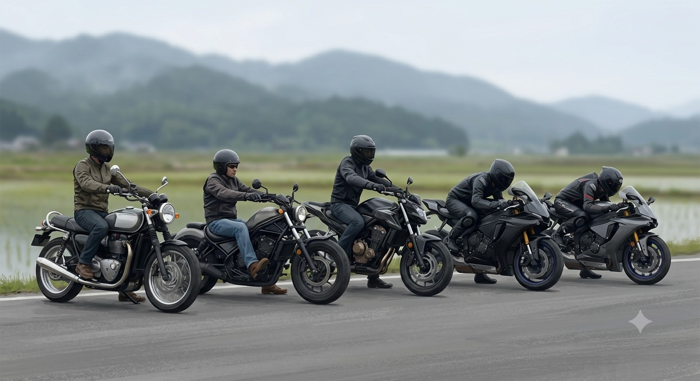
同じ体格でも、車体が変われば姿勢が変わる。左が直立、右へいくほど折りたたまれる。
検討を進めるうちに、現実の条件が二つ、輪郭を現してきた。ひとつは自分の体格——身長175cm（日本人男性の平均171.6cmより高め）。足つきやシート高を比べているうちに、そもそも車格が体に釣り合うかのほうが効くと気づいた。もうひとつは実際に走る道——信号・交差点が少なくカーブも緩い一車線国道で、たいてい前に車がいる（追い越しはしない）。この道では峠向きの旋回性に出番がなく、効く軸は①車格が体格と釣り合うか、②直進巡航が楽かの2つだけ。この2つに合う候補はどれか。基準器のMT-03を軸に、上位互換のZ400、クルーザーのレブル250・エリミネーター400を同じ土俵に載せる（車格の物差しとして、MT-03と車体が同じフルカウルのYZF-R3／R25も先頭に置く）。
| モデル | 車体 WB／シート高／重量 | エンジン | この条件での評価 |
|---|---|---|---|
| YZF-R3／R25 車格の比較用 |
1380mm／780mm／169kg 車体は2台とも同一 |
R3＝320cc・42PS（MT-03と同一） R25＝249cc・35PS・車検なし |
× 車体はMT-03と同寸だが、カウルの面積ぶん見た目はひと回り大きい——ストファイが小さく見えるのは車体だけでなく“裸”だからでもある。ただし深い前傾はこの道では疲れるだけ |
| ★MT-03 | 1380mm／780mm／166kg | 320cc水冷ツイン 42PS |
△ 万能の基準器だが車体は全候補中最小。175cmでは膝の畳みが窮屈で、車格もひと回り小さく見える |
| Z400 | 1370mm／785mm／166kg | 398cc水冷ツイン 48PS |
△ MT-03の上位互換。ただし車体はほぼ同寸＝車格の課題もそのまま |
| レブル250 | 1490mm／690mm／171kg | 249cc水冷単 CL250と共用・26PS |
○ 若者人気No.1のクルーザーで車検なし。ただし250の車格は175cmには小さく、低いシートで膝が上がる |
| エリミネーター400 | 1520mm／735mm／176kg | 398cc水冷ツイン Z400と同系・48PS |
◎ Z400のWBを150mm伸ばし直進安定に振ったクルーザー。長く低い車体が長身と釣り合う |
・性能の妥協がない。エンジンはZ400と同じ48PS、価格もほぼ同じ（約76〜80万円）。同じ心臓の載せ替えであって、「大きく見せるために遅い方を選ぶ」のではない。
・車体がこの道の要件どおり。WB1520mm・キャスター30°・低シートで直進安定に振り、本ページの直進安定性スコアは全車トップの9.0（2位はレブルの8.4。算出は後の「釣りで選ぶ①」章）。弱点の小回りは、Uターンもタイトコーナーも無いこの道では出番がない。
・実売も裏づける。2025年上半期、エリミネーターは小型二輪（250cc超〜400cc）クラス3年連続1位（1,973台）——Z400／Ninja 400（667台）とMT-03／R3（計666台）の合計を上回る。レブル250も軽二輪クラス7年連続1位（4,266台）（二輪車新聞調べ・Webike↗）。
残る注意は2つ——高速道路では立った上体に風圧が当たる（この道の速度域では問題にならない）。並列ツインの鼓動は薄い（味の軸は「乗り味で選ぶ」章）。
「似合う」の中身 ── 体格との釣り合いは2つに分けて見る
- (a) 体が収まるか：膝の曲がりとリーチ。Cycle Ergo↗に車種と身長を入れると乗車姿勢が図で出る——175cmで並べると、MT-03の膝の畳みとエリミネーターの脚の余裕が一目で分かる。
- (b) 車格が釣り合うか：決め手はホイールベースと構え。短いストファイは長身だと「車体の上に乗っている」形になり、長いクルーザーは脚が車体に沿って収まるぶん大きく見える。
・エリミネーター400＝この条件の本命（車格・直進安定・48PS）。
・レブル250＝軽さ・価格・車検なしの気楽さ枠。
・GB350＝クルーザーでなく直立レトロで「緩く快適」を取る第3の解（実質販売1位が需要を証明）。
・MT-03＝250の車体に320を積んだ「クラスのボアアップ」的コスパの傑作——RZ250のヒットを思わせる立ち位置で、バランスは4台随一。ただし強みのスポーツ性能は今の道では出番が薄く、割安感も上にZ400（77万）、さらに上に高すぎるCB400SF（99.9万）が居る相対価格ゆえ——お金に余裕があればZ400へ、という階段は残る。
エリミネーターの成り立ち（Ninja 400→Z400→クルーザー化）は「ネイキッドを深掘り」章のプラットフォーム展開の一覧表を参照。
なぜ日本ではクルーザーが売れるのか ― この4台を導いた理由
実売はクルーザーの2クラス制覇（レブル250＝軽二輪7年連続1位、エリミネーター＝小型二輪3年連続1位）。ストファイ勢が世界市場で主役なのに、日本ではなぜ逆転するのか——理由は4つ重なっていそうだ。
- ① 日本の道と噛み合う。法定60km/h・信号と渋滞の舗装路では、旋回性能もパワーバンドも使う場面がない。日常で効く性能は足つき・楽な姿勢・低中速トルク——クルーザーの得意分野そのもの。弱点（小回り・峠）は日常に出番が少なく、露呈しない。
- ② ストファイ勢はグローバル仕様。R3／MT-03（インドネシア生産）・Ninja 400／Z400（タイ生産）は世界戦略車で、48PSは欧州A2免許の上限47.6PS由来。前提は流れの速い道とワインディングで、日本の日常とズレる。対してレブル250・エリミネーター400・W230は日本の免許と道が主戦場の設計（400ccという排気量自体が普通二輪免許の日本固有枠。グローバル版は451ccのエリミネーター500）。
- ③ 主力排気量は「道と所得と制度」で決まる。東南アジア＝110〜160cc（生活の足・価格・渋滞。150は若者のプレミアム枠）、欧州＝A2の48PS帯、日本＝250（車検なし）と400（普通二輪上限）。日本のクルーザー人気はこの制度枠×道路事情の交点で、各国それぞれの「合う排気量・合う形」に落ち着いているだけとも言える。
- ④ スタイルと間口。足つき最良で教習所出たての受け皿になり（レブル）、ジーンズ・スニーカーで乗れるカジュアルさが若者に刺さる。長身には400の車格が受け皿（エリミネーター）。ネイキッド章「性能より味付け」で見た性能の頭打ち後は日常との噛み合いとスタイルが票を集めるという構図——その帰結が実売に出ている。
- ⑤ 決め手はエンジンではなく「姿勢」。順位だけ見るとGB350・W230と空冷シングル人気に見えるが、エリミネーターが反証になっている——中身は高回転の水冷スポーツツイン（鼓動1）なのにクラス名目1位。つまり買われているのは空冷の味そのものではなく、直立〜後傾の「のんびり姿勢」だ。売れ筋を章頭の前傾スペクトラムに置き直すと、上位は③〜⑤（直立・後傾＝エリミネーター・GB350系・レブル・W230）に集中し、①②（前傾側＝レーサー／ストファイ）は下位——例外は趣味性の塊ZX-4R（3位）くらい。エンジン形式は空冷単・水冷単・水冷ツインとバラバラでも、姿勢だけが売れ筋に共通している。
乗り味で選ぶ ― レトロ度 × 鼓動感
国道メインと決まってくると、次に効いてくるのは乗り味だ——信号の少ない一本道を、どんな鼓動で流すか。あらためて想いを巡らせる。Jazzに足りなかったもの、鼓動。中型候補を「見た目のレトロ度」と「エンジンの鼓動感」の0-10の2軸でマッピングして俯瞰する。どちらも試乗レビューやオーナーの声からの主観推定。 以前は横軸を「レトロ⇔おしゃれストリート」という1本の対立軸にしていた。2軸に分けたのは、この2つが無関係だからではない。むしろ強く相関する（17台で r＝+0.83）。それでも分けるのは、キャバレロ250やCL250のように線から大きく外れる車がいて、その外れ方こそ選択を左右するからだ。 鼓動感そのものの掘り下げ（エンジン形式・音との相関／メリット・デメリット／レトロ度との相関と、外れる5台）は下のアコーディオンにまとめた。
出発点の問いへの、答えの半分を先に書く。アメリカンクラシックの鼓動は、現行の中型で買える。最濃はロイヤルエンフィールド350系（ブリット350・クラシック350・メテオ350＝鼓動8〜9）、国産の現実解はGB350（7）。Jazzに足りなかったものは、いま新車で手に入る。ただしこれは「乗り味」だけの答えだ——国道メインの答え（エリミネーター）とも、釣り章の答え（スクランブラー400X／CL250）とも別の車になる。答えは、軸の数だけある。以下は、その確かめである。
エンジン音で聴き比べ（鼓動感の高い順）── ここで音を鳴らす
鼓動感は言葉より音で聴くのが早い。上のマップ縦軸（鼓動感）の高い順に、各車のエンジン音（排気音重視の動画）を並べた。空冷シングルのドコドコ（上位）→ 水冷シングル・多気筒の滑らか（下位）の流れが耳で分かる。まずブリット350（鼓動感9）とエリミネーター400（鼓動感1）を聴き比べると両極が掴める。
| モデル | 鼓動感 | エンジン音（形式） |
|---|---|---|
| ブリット350 | 9 | ▶ 空冷シングル |
| クラシック350 | 8 | ▶ 空冷シングル |
| メテオ350 | 8 | ▶ 空冷シングル |
| GB350 | 7 | ▶ 空冷シングル |
| スクランブラーSixty2 | 6 | ▶ 空冷Lツイン |
| メグロS1 | 6 | ▶ 空冷シングル |
| スピード400 | 4 | ▶ 水冷シングル |
| スクランブラー400X | 4 | ▶ 水冷シングル |
| スヴァルトピレン401 | 4 | ▶ 水冷シングル |
| CL250 | 3 | ▶ 水冷シングル |
| レブル250 | 3 | ▶ 水冷シングル |
| レオンチーノ250 | 3 | ▶ 水冷シングル |
| キャバレロ250 | 3 | ▶ 水冷シングル |
| CRF250L | 2 | ▶ 水冷シングル |
| セロー250 | 2 | ▶ 空冷シングル |
| ハーレーX350 | 2 | ▶ 水冷2気筒 |
| エリミネーター400 | 1 | ▶ 水冷2気筒 |
検索結果リンク（▶ が「results?...」のもの）は公式PV等が特定できなかった車種で、排気音の検索結果に飛ぶ。鼓動感の数値・根拠は下の「鼓動感って何？」「メリット・デメリット」参照。同じ音源を使った全項目版は後半の「中型・全比較」章にもある。
鼓動感って何？ ── エンジン形式・音との相関
バイクに詳しくない人に「鼓動感」を説明するのは難しい。一番手っ取り早いのは、エンジン音を聴いてもらうこと。エンジン音・エンジン形式・鼓動感は相関が高い。
- 排気量が大きく、低回転でトルクを出す空冷シングル（1気筒）→ 一発一発の爆発が体に伝わる。ドコドコという音、鼓動感が高い。
- 水冷・高回転型・多気筒（2気筒以上）→ 振動を打ち消し合い、滑らかに回る。音は高く滑らかで、鼓動感は低い。
面白いのは、「空冷単気筒」というだけでは鼓動感は決まらないこと。同じ空冷単気筒でも、ブリット350（349cc・6,100rpm）とメグロS1（232cc・7,000rpm）では体感がかなり違う。排気量が小さく高回転寄りにセッティングされると、単気筒でも滑らかで大人しい音になる。
鼓動感のメリット・デメリット
鼓動感は「高いほど良い」ではなく、好み＋バランスの問題。しかも強すぎる鼓動は振動＝手の痺れ・疲労として跳ね返るので、毎日・長距離で乗るなら“適度”がちょうどいい、という見方もできる。高い／適度／低いで整理するとこう。
| メリット | デメリット | |
|---|---|---|
| 鼓動感が高い 大排気量・空冷シングル |
・低回転からトルクが出て、のんびり流すのが気持ちいい ・エンジンの鼓動が「乗ってる実感」になる ・排気音に味がある | ・振動で手が痺れる・長距離は疲れやすい ・高回転は苦手、高速巡航や追い越しはやや不利 ・空冷ゆえ夏の渋滞で熱に弱め |
| 適度（中間） ツイン／穏やかなシングル・バランサー付き |
・鼓動の「味」と快適さのバランスが良い ・長距離でも痺れ・疲れが出にくい ・普段使いで扱いやすい | ・「もっと濃いドコドコ」を求める人には物足りない場合も |
| 鼓動感が低い 水冷・多気筒・高回転 |
・振動が少なく、長距離・高速が楽 ・高回転までスムーズに伸びて速い ・熱管理が安定 | ・良くも悪くも「優等生」で乗ってる実感は薄い ・排気音は大人しく、味を求める人には物足りない |
中型候補でこの“適度”の帯に近いのは、不等間隔爆発のLツインで鼓動がありつつ多気筒でスムーズなスクランブラーSixty2（鼓動6）や、空冷シングルでも小排気量・高回転寄りで穏やかなメグロS1（6）あたり。逆にRE350系（8〜9）・GB350（7）は鼓動最強クラスだが、そのぶん長距離では振動の代償（痺れ・疲れ）も大きい。出発点の SR400（のような空冷シングル）は強い鼓動＝“高い”寄りだが、毎日の相棒として見れば中庸（適度）も十分アリ——「高ければ高いほど良い」ではない。
見た目のレトロ度と鼓動感は、だいたい一致する ― ただし5台に1台は大きく外れる
先に結論——この2軸は独立ではない。強く相関する。上のマップの17台の座標を測ると相関係数 r＝+0.83、決定係数 R²＝0.69。鼓動感のばらつきの約7割は、見た目のレトロ度だけで説明できてしまう（回帰は「鼓動感 ≒ 0.68 × レトロ度 + 0.9」）。見た目がレトロなほど、実際に鼓動も強い——それが素直な現実だ。
それでも2軸に分けているのは、独立だからではない。5台に1台くらい、線から大きく外れるからだ。そして外れる方向が、選ぶときにいちばん効く。回帰線からのズレが大きい順に並べるとこうなる：
| 車種 | レトロ度 | 鼓動感 | 線どおりなら | ズレ |
|---|---|---|---|---|
| キャバレロ250 | 7.0 | 3.1 | 5.7 | −2.6 |
| メテオ350 | 7.0 | 8.1 | 5.7 | +2.4 |
| CL250 | 6.0 | 3.1 | 5.0 | −1.9 |
| スヴァルトピレン401 | 2.0 | 4.1 | 2.3 | +1.8 |
| メグロS1 | 10.0 | 6.1 | 7.7 | −1.6 |
※レブル250・ハーレーX350・スピード400・エリミネーター400はズレ0.5以下＝見た目どおり。外れるのは一部だけである。
外れる5台の中身：
- キャバレロ250：レトロ度7（70年代キャバレロの復刻デザイン）とかなり高いのに、鼓動感は3。見た目に乗り味が一番追いついていない一台。
- CL250：丸目ヘッドライト・高めのマフラーでレトロ度6と中の上だが、エンジンは水冷高回転型で鼓動感は3。系統としてはレブル250に近い。
- メグロS1：レトロ度10（1960年代メグロの完全復刻）で満点評価だが、鼓動感は6でトップ3には入らない。
- スヴァルトピレン401：レトロ度2ともっともモダンな見た目だが、鼓動感は4。同じくらいモダンなレブル250・エリミネーター400・ハーレーX350（鼓動感1〜3）より、乗り味にはしっかり効いている。
- スクランブラーSixty2：この中で唯一の空冷Lツイン（2気筒）。「多気筒＝鼓動感が低い」の例外で、ドゥカティの空冷ツインは不等間隔爆発のドコドコ感がしっかり残る。水冷シングル勢（4）より上の6に置いた。
まとめると——見た目で選んで、だいたい当たる。ブリット350・クラシック350はレトロ度も鼓動感も高く素直に一致するし、レブル250やエリミネーター400はモダンな見た目どおりに鼓動が薄い。問題は、外れる一部をつかんでしまったときだ。キャバレロ250とCL250は「見た目で買うと乗り味が付いてこない」側、メテオ350とスヴァルトピレン401は「見た目より鼓動が濃い」側——だから確かめるべきは全車ではなく、この外れ組だけでいい。
釣りで選ぶ① ― 走行性能（機動性・直進安定性・オフロード）
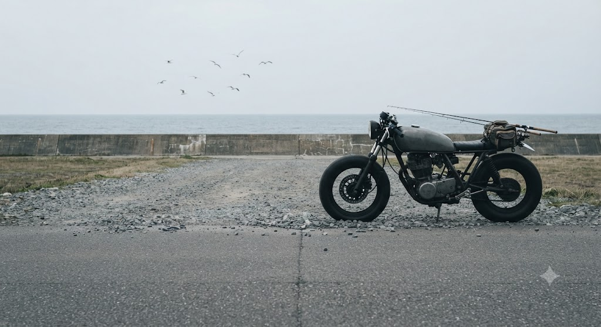
舗装は、ここで終わる。残りの数百メートルが車種を決める。
残る宿題は釣りだ。鼓動で選ぶなら前章の答えはRE350系の圧勝——ところが海の岸壁までの最後の数百メートルは、たいてい砂利道だったりする。ドコドコの王者たちは、そこを走れるのか。もっとも、先に白状すれば近場の釣りは原付（カブ／スクーター）で十分カバーできる（原付章）——だからこれは「中型で行くなら」の検討で、半分は好奇心の脱線だ。マップは「どんな道に向くか」。横軸に直進安定性（まっすぐ・高速が安定＝ツーリング向き）、縦軸にオフロード性能（砂利・悪路）。どちらも公表スペックからの算出値で、主観ではない（式は下の「算出根拠」）。 この2軸で読むと「オン⇔ネイキッド⇔オフ」の使い分けがそのまま見える——右下＝直進安定に振ったクルーザー（低重心＋長ホイールベース＋寝たフォーク。北海道・高速の直線向き）、上＝悪路に振ったオフ系（釣り場アクセス向き）、左下の低ストローク勢＝軽くて機動性の高いネイキッド系（日本の一般道でバランスが良い）。ネイキッドの強みである機動性（小回り）そのものは、この軸には出ないので下の別表で見る。
機動性ランキング：最小回転半径（＝取り回し・Uターンのしやすさ）
取り回し（狭所でのUターン）は、ホイールベース単体ではなく 最小回転半径 で見るのが正しい——切れ角・ホイールベース・トレール（前輪が直進へ戻ろうとする力を生む、接地点の後退量）・タイヤ径をすべて織り込んだ完成値だから。Honda勢は公表値（＋ハンドル切れ角）があり、それ以外は物理式（回転半径 ≒ ホイールベース ÷ sin切れ角 ＋ 補正0.18m）で推定した。切れ角込みで見るとGB350は43°・回転半径2.3mと最小級——ホイールベースの長さだけでは測れない。CL250も切れ角38°でホイールベースの長さを相殺している。
| モデル | ハンドル切れ角 | 最小回転半径 | 実測/推定 | 機動性スコア |
|---|---|---|---|---|
| セロー250 | 51° | 1.9m | 実測 | 10.0 |
| キャバレロ250 | 42°~ | 2.29m | 推定 | 5.8 |
| GB350 | 43° | 2.3m | 実測 | 5.7 |
| CRF250L | — | 2.3m | 実測 | 5.7 |
| スヴァルトピレン401 | 40°~ | 2.31m | 推定 | 5.6 |
| スピード400 | 40°~ | 2.32m | 推定 | 5.5 |
| レオンチーノ250 | 40°~ | 2.33m | 推定 | 5.4 |
| ブリット350 | 40°~ | 2.34m | 推定 | 5.3 |
| クラシック350 | 40°~ | 2.34m | 推定 | 5.3 |
| スクランブラー400X | 38°~ | 2.49m | 推定 | 3.7 |
| ハーレーX350 | 36°~ | 2.58m | 推定 | 2.7 |
| メグロS1 | — | 2.6m | 実測 | 2.5 |
| CL250 | 38° | 2.6m | 実測 | 2.5 |
| スクランブラーSixty2 | 35° | 2.73m | 切れ角実測・回転半径推定 | 1.1 |
| メテオ350 | 33°~ | 2.75m | 推定 | 0.9 |
| レブル250 | 35° | 2.8m | 実測 | 0.3 |
| エリミネーター400 | 35° | 2.83m | 切れ角実測・回転半径推定 | 0.0 |
切れ角はGB350 43°・CL250 38°・レブル250 35°・セロー250 51°・エリミネーター400 35°（カワサキ公式諸元）・スクランブラーSixty2 35°（Ducati公式スペック）が公表値、CRF250Lとメグロ S1は回転半径2.3m／2.6mが公表値（切れ角は非公表）。「~」の切れ角は同ジャンル典型値からの推定で、そこから回転半径を算出。セロー250の回転半径1.9mは旧推定2.21mより一段小さく、機動性スコアが2位以下と大差をつけるトップになった（オフロード車特有の大きな切れ角のため）。スクランブラーSixty2の切れ角35°は推定ではなく公式スペックで確定値——機動性スコアは推定ミスではなく実際のジオメトリの結果。残り9台（ブリット350・クラシック350・メテオ350・スピード400・スクランブラー400X・スヴァルトピレン401・レオンチーノ250・キャバレロ250・ハーレーX350）はメーカー公式PDFを含め調査したが回転半径・切れ角とも非公表で推定のまま。全出典は data.md。
・ネイキッド／ストリート系はスコアが中位でも試乗評は軒並み「軽快」。これは弱点ではなく、小回りと直進安定のどちらにも振りすぎない“ちょうど良いバランス”の表れで、日本の一般道で実用上いちばん困らない帯。取り回しは実用上まったく問題ないレベルで、むしろ直進安定を欲張らない分だけ軽快に曲がる。
・スクランブラーSixty2はスコア最下位級（1.1）だが、試乗では「切れ角があり急なUターンもスムーズ、街乗り得意」と好評——低いスコアが体感の悪さに直結しない好例。
・逆にアメリカン（レブル250・エリミネーター400）は低重心＋軽い車体で“取り回し自体”はこなせるが、長いホイールベースと小さめの切れ角で狭所での小回りの限界は残る。
極端な数字は「個性」とは限らず、「何かが欠けている」サインのこともある。直進安定に振り切ったクルーザーは小回りを失い（街中・岸壁で不利）、逆に小回りを追い込みすぎれば直進安定が削られて高速でフラつきやすくなる。両端はどちらかを犠牲にした形で、中庸のネイキッド帯が「全部そこそここなせる」意味でむしろ強い。数字の大小だけで優劣を決めず、下の試乗評とあわせて「何を捨てて何を得た数字か」を読むのが正しい。
取り回しの実際：試乗レビューが伝える低速の扱いやすさ（定性）
回転半径スコアはジオメトリだけの値なので、車重・シート高・ハンドル幅・乗車姿勢まで含めた「実際の取り回し」は試乗レビューで補う。以下は各車の試乗インプレ・オーナーレビューから拾った定性評価（主観・複数記事の総合）。上の機動性スコア順（高い順）に並べているので、数字と体感が食い違う車が読み取れる。裏の取れない車種は「-」。
| モデル | 取り回しの実際（試乗評） | ひとことメモ |
|---|---|---|
| セロー250 | とても軽快 | 切れ角51°で自転車感覚、Uターン楽々。「スクーターと変わらない」との評も |
| キャバレロ250 | 軽快 | 250にしては大柄だが乾燥138kgで想像以上に軽く俊敏、足つきも上々 |
| GB350 | 軽快 | 179kgで取り回し楽、低速がトライアル並みに粘り街中で気を使わない |
| CRF250L | とても軽快 | 141kgと軽量でストレスフリー、街乗りのストップ＆ゴーも苦にならない |
| スヴァルトピレン401 | 軽快 | 159kgと軽く「振り回す感覚が楽しい」、低速Uターンも扱いやすい |
| スピード400 | 軽快 | 170kgでコンパクト、街中のUターンもスムーズ、初心者でも扱いやすい |
| レオンチーノ250 | 素直 | 162kgより軽く感じ足つき良好、やや広めのハンドルでも取り回しにクセなし |
| ブリット350 | 見た目より楽 | 195kg・シリーズ最重量級で足つきは悪めだが取り回しに不安なし、穏やかで軽快なハンドリング |
| クラシック350 | 見た目より楽 | 195kgだが乗れば重さを感じにくく、低速のギクシャクも少ない |
| スクランブラー400X | やや大柄 | 車格が大きく“取り回し楽々”ではないが、低速タイトコーナーはむしろ軽快（外車の兄貴分よりずっとイージー） |
| ハーレーX350 | 軽快 | 195kgとやや重いが低シート＋スリムで扱いやすい、キビキビ走るネイキッド |
| メグロS1 | とても軽快 | 143kgと軽くクイックで素直、狭い道もゆるゆる走れる |
| CL250 | 軽快 | アップライトで視界が広く、Uターン・細道も不安なし |
| スクランブラーSixty2 | 軽快（スコア以上に扱いやすい） | 切れ角があり急なUターンもスムーズ、街乗り得意。安定志向で落ち着いた乗り味——回転半径スコアの低さは体感に出にくい好例 |
| メテオ350 | 見た目より楽 | 191kgだがハンドル高め＋シート低め（765mm）＋スリムで取り回しラクラク |
| レブル250 | 低重心で楽（切れ角は小さめ） | 足つき抜群・低重心で取り回しは楽だが、ハンドル切れ角が小さくUターンは慣れが要るという声も |
| エリミネーター400 | 見た目より軽い（大回りは残る） | 1520mmと最長だが装備178kgで街中Uターンは“現実的なレベル”。ただし小回りの限界は長いホイールベースなりに残る |
出典は各車の試乗インプレ記事・オーナーレビュー（webオートバイ／バイクブロス／young-machine／Motor Fan／BDS Report ほか複数の総合）。定性評価は主観・体感でスペック算出値とは別軸——数字（回転半径スコア）と体感（インプレの評）を併読するのが正しい読み方。裏の取れない車種は「-」。詳細は data.md。
算出根拠：直進安定性・オフロード性能の出し方（実測スペック）
直進安定性 ＝ ホイールベース（長いほど安定）＋キャスター角（寝ているほど安定）＋重心の低さ（シート高が低いほど安定）を正規化平均。クルーザー（エリミネーター400・レブル250）が上位で、「アメリカンは低重心＋長ホイールベース＋寝たフォークで直進安定に振っている（直線の多い道・高速向き）」という見立て通りの結果になった。
オフロード性能 ＝ タイヤ種別（ブロックタイヤ＝スクランブラー/エンデューロか、50%）＋前輪サイズ（17〜21インチ、30%）＋サスストローク（20%）の加重平均。
| モデル | ホイールベース | キャスター角 | シート高 | 前輪 | 機動性 | 直進安定性 | オフロード |
|---|---|---|---|---|---|---|---|
| エリミネーター400 | 1520mm | 30.0° | 735mm | 18"~ | 0.0 | 9.0 | 0.8 |
| レブル250 | 1490mm | 28.0° | 690mm | 18"~ | 0.3 | 8.4 | 0.8 |
| CL250 | 1485mm | 27.0° | 790mm | 19" | 2.5 | 5.5 | 7.7 |
| メグロS1 | 1415mm | 27.0° | 740mm | 18"~ | 2.5 | 5.2 | 0.8 |
| GB350 | 1440mm | 27.5° | 800mm | 19"~ | 5.7 | 4.6 | 1.5 |
| CRF250L | 1440mm | 27°~ | 830mm | 21" | 5.7 | 3.6 | 10.0 |
| スクランブラーSixty2 | 1460mm | 24.0° | 790mm | 18" | 1.1 | 3.5 | 5.8 |
| メテオ350 | 1400mm | 24°~ | 765mm | 19" | 0.9 | 2.8 | 1.5 |
| キャバレロ250 | 1410mm~ | 26°~ | 820mm | 19" | 5.8 | 2.8 | 7.7 |
| ハーレーX350 | 1410mm | 24.8° | 817mm | 17"~ | 2.7 | 2.2 | 0.0 |
| スピード400 | 1377mm | 24.6° | 790mm | 17"~ | 5.5 | 2.1 | 0.0 |
| レオンチーノ250 | 1380mm | 25°~ | 800mm | 17" | 5.4 | 2.1 | 5.0 |
| ブリット350 | 1390mm | 24°~ | 805mm | 19"~ | 5.3 | 1.7 | 1.5 |
| クラシック350 | 1390mm | 24.0° | 805mm | 19" | 5.3 | 1.7 | 1.5 |
| セロー250 | 1360mm | 26.5°~ | 830mm | 21" | 10.0 | 1.7 | 10.0 |
| スクランブラー400X | 1420mm | 23.2° | 835mm | 19" | 3.7 | 1.2 | 7.7 |
| スヴァルトピレン401 | 1368mm | 24°~ | 820mm | 17" | 5.6 | 0.9 | 6.2 |
「~」は非公表のため近縁車種・同ジャンル典型値で推定。数値に出ないエルゴノミクス（ハンドル幅・視界・シート形状）は含まない。全データ・出典URLは data.md。
ジャンル別・街乗りと砂利路の向き
- アメリカン（クルーザー）は日本の街乗り・Uターンで気を使うかも。ホイールベースが長いのが理由の一つ——レブル250は1490mm、エリミネーター400は1520mmで、GB350（1440mm）よりひと回り長く、同じだけハンドルを切っても曲がる半径が大きくなりやすい。ハンドルの切れ角も小さめなので、交差点の右左折や押し引き、Uターンなど日常の細かい取り回しで気を使う場面がありそう（一般に、フロントフォークを寝かせてキャスター角・トレールを大きくするほど、直進安定性と引き換えに低速でのハンドルの復元力＝重さが増す傾向もある）。もっと極端な例がホンダ スティード400（ホイールベース1600mm）——低速の取り回しの重さがオーナーレビューでもよく話題になる定番のアメリカンだが、感じ方には個人差もある。
- スクランブラーは釣り場のアクセス路にそのまま入れるのが強み。姿勢がアップライトで軽快なうえ、砂利や轍のある未舗装路もこなせるので、海沿いの岸壁までの砂利道にも乗り入れやすい。街乗り＋砂利路の二刀流。
フロントフォーク：正立 vs 倒立（外車に倒立が多い理由）
ギャラリーを見ると欧州系スポーツ／スクランブラーは倒立フォーク（USD）、国産レトロ／クルーザーは正立フォークが多い。これは「日本車がケチっている」わけではなく、車の性格に合わせた割り切り。倒立は太いアウターチューブを上（三つ又で締める根元）に持ってくる型で、曲げ荷重の大きい根元を太くする発想。正立はその逆（太い管が下）。
| 観点 | 倒立（USD） | 正立（従来型） |
|---|---|---|
| 剛性 | ◎ 高い。強ブレーキ・コーナーで撓みにくく接地感が上がる | ○ 必要十分。攻めると負けやすい |
| バネ下重量 | ◎ 軽い（動く側が細く軽い）→路面追従が良い | △ 下の太い管が動くぶん重め |
| コスト | ✕ 高い（精密・シール・表面処理） | ◎ 安く作れる |
| 整備性・耐久 | △ オイル滲みが出やすい／露出インナー管は飛び石に弱い | ◎ 楽で丈夫・長寿命 |
| 見た目 | スポーティ／モダン | クラシックに似合う（時代考証的にも） |
- このリストの傾向：倒立＝スヴァルトピレン401・スクランブラー400X・スピード400・キャバレロ・レオンチーノなど欧州スポーツ系。正立＝GB350・レブル250・CL250・SR400・メテオ350・エリミネーターなど国産＋クラシック系。
- 反例＝CRF250L は国産でも倒立。本格オフで剛性が要るから。大型スポーツ（CBR・R1・ZX）も日本車は当然倒立——つまり日本メーカーも必要な車には普通に倒立を使う。このリストが正立中心なのは「そういう性格の車を集めたから」。
- この計画への示唆：街乗り・田舎の一本道・軽い未舗装が主眼なら、倒立の剛性メリットは体感に出にくく正立でも実用上まったく問題なし。むしろ倒立車はオイル滲み点検など維持の手間が少し増える点を頭の隅に。「倒立＝上位」ではなくスポーツ性を求めるかで見るのが正解。
釣りで選ぶ② ― スクランブラー・エンデューロ深掘り
前章のマップで上側に立ったスクランブラー・エンデューロ勢——だが「オフに強い」の中身は一枚岩ではない。前輪サイズひとつで性格が分かれる（詳しくは下のアコーディオン）。国産に限らずドゥカティをはじめとした外車も候補に入れ、普通二輪免許（〜400cc）で乗れる現実的な範囲を並べる。
| モデル | ジャンル | エンジン | 前輪 | ひとこと |
|---|---|---|---|---|
| CRF250L Honda | エンデューロ | 250cc 水冷単気筒 | 21インチ | 21インチ前輪＋ロングストロークで本格的。車重141kgと軽量 |
| セロー250 Yamaha | エンデューロ | 250cc 空冷単気筒 | 21インチ | 車重133kg・最低地上高285mmと、軽さと本格性を両立した名車 |
| キャバレロ250 Fantic | エンデューロ | 250cc 水冷単気筒 | 19インチ | 前輪はCL250と同じ19インチだが、軽さ（130〜140kg）とオフ専業ブランドの設計でスクランブラーとエンデューロの中間的な性格 |
| スクランブラー400X Triumph | スクランブラー | 398cc 水冷単気筒 | 19インチ | アップライトで軽い未舗装もこなす、街乗り兼用の本命候補 |
| CL250 Honda | スクランブラー | 249cc 水冷単気筒 | 19インチ | アップライトで街乗りしやすく、軽い未舗装もこなす本命格 |
| スクランブラーSixty2 Ducati | スクランブラー | 399cc 空冷Lツイン | 18インチ | 普通二輪で乗れる唯一のドゥカティ・スクランブラー。空冷Lツインの鼓動＋ポップな見た目 |
| スヴァルトピレン401 Husqvarna | スクランブラー | 398cc 水冷単気筒 （旧型は373cc） | 17インチ | 「黒い矢」の名のとおり尖ったデザイン。前輪17インチとスポーツバイク並みに小さく、オフロード性能はジャンル内では控えめ |
| レオンチーノ250 Benelli | スクランブラー | 249cc 水冷単気筒 | 17インチ | 前輪17インチでオフロード性能はジャンル内で控えめ、スタイル重視の1台 |
スクランブラーとエンデューロ、釣りにはどっち？
見た目が近くて分かりにくいが、違いは主に前輪サイズとサスペンションのストローク量。
- スクランブラー（CL250・400X・Sixty2・レオンチーノ250・スヴァルトピレン401）：前輪17〜19インチ、もとはロードバイクをオフロード風に仕立てたジャンルで、太めのブロックタイヤは履くが車体はあくまで舗装路がベース。同じスクランブラーでも前輪サイズには幅があり、CL250・400X（19インチ・サス150mm確認済み）が本命格、Sixty2（18インチ）はやや小径、スヴァルトピレン401・レオンチーノ250（17インチ）はスポーツバイク並みの小径ホイールでオフロード性能はジャンル内では控えめ（詳しくは釣り①のマップ参照）。
- エンデューロ（CRF250L・セロー250）：前輪21インチ、サスはさらに長く、最低地上高も高い（セロー250で285mm）。もともと未舗装路専用の車体に保安部品を足して公道を走れるようにしたジャンル。キャバレロ250は前輪19インチとスクランブラー寄りの数値だが、軽さ（140kg）とオフロード専業ブランドの設計でその中間に位置する。
今回の用途（海の岸壁釣り、ぬかるんだ土は想定しない）なら、スクランブラーで十分なことが多い。砂利・轍レベルの未舗装路は19インチ前輪でも問題なくこなせる範囲。エンデューロの21インチ・ロングストロークが効いてくるのは、深い轍や岩・段差、本当のぬかるみなど「もっと悪い路面」を走るとき。
つまり、釣りだけが目的ならスクランブラーで機能十分。エンデューロを選ぶ理由は「もっと本格的な林道・悪路も走ってみたい」という、釣り以外の動機がある場合、という整理になる。
釣りで選ぶ③ ― 積載（キャリア・パニアの徹底比較）
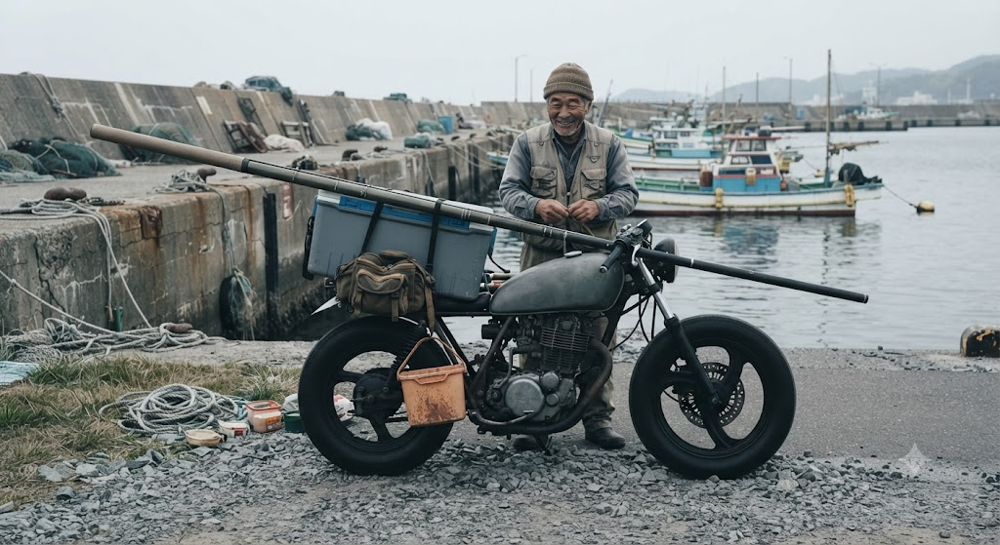
荷物のほうが、バイクより大きい。それでも積めるかどうかの話。
砂利道を越えても、まだ関門が残っている。かさばるクーラーボックスと、濡れた道具——これをどこに積むのか。積載は公表スペックに出ない。そこでリアキャリア・パニアの付けやすさ、シート後端の形状（フラットだとロッド・クーラーを縛りやすい）、純正／社外アクセサリーの充実度から◎○△で主観評価した。根拠となった具体的なアクセサリー例と参照URLまで下表に示す。裏の取れない車種は「-」。
| モデル | 積載 | 根拠となった具体例 | 参照 |
|---|---|---|---|
| CL250 | ◎ | Honda純正リアキャリア（荷台208×336mm・積載5kg・ロープフック6ヶ所・シートと段差なし）＋純正サドルバッグサポートが同時装着可。Gクラフト等社外キャリアも豊富でキャンプ実績多数 | Honda公式／webオートバイ |
| スクランブラー400X | ◎ | Triumph純正ラゲッジラックKIT＋タンデムバー、ヘプコ&ベッカー製リアキャリア（5kg・トップケース対応）。純正アクセサリー体系がパニア／トップケースまで一通り揃う | Triumph公式 |
| GB350 | ◎ | デイトナ クラシックキャリア（シート座面と荷台がフラット・積載4kg）＋純正サドルバッグサポート。実走インプレで「サイドバッグはノーマルでも装着可・積載性は最高峰」と評価 | webオートバイ 積載インプレ |
| レブル250 | ○ | デイトナ グラブバーキャリア（334×274mm・7kg・GIVI42L対応）ほかSWモテック／ヘプコ／キジマと社外が最豊富級。低くフラットなシートで縛りやすいが、純正キャリアとデイトナ製サポートの同時装着に制約があり満点は付けず○ | キャリア比較 |
| メテオ350 | ○ | 純正「Grand Tourerキット」にプレミアムパニア＋パニアレールを設定。ヘプコ&ベッカー等社外も対応。クルーザー体型で荷台は小ぶり | RE純正アクセ |
| クラシック350 | ○ | 新型は標準でサドルバッグサポート装備、LONGRIDE等ブラケットも対応。ただし実走では「見るからに積みやすそうだがナメたらあかん」（座面が丸くベルト位置に工夫要）との注意も | webオートバイ 積載インプレ |
| ブリット350 | ○ | クラシック350と共通プラットフォームでサドルバッグ対応（LONGRIDE BR.1075はBullet350対応）。荷台形状もクラシックに準じる | RE純正アクセ |
| スクランブラーSixty2 | ○ | メーカー純正キャリアは無いが、ヘプコ&ベッカー／SW-Motech Legend Gear／Unit Garage等の社外サイドキャリア・トップケースが充実。スクランブラー体型でシート後端はフラット寄り | ヘプコ&ベッカー |
| レオンチーノ250 | ○ | スクランブラー体型でシート後端はフラット寄り。社外リアキャリア＋リアボックス／サドルバッグ、タンクバッグの装着例あり（オーナーのツーリング作例も） | PLOT カスタム例 |
| セロー250 | ◎ | キャンプ定番車。標準は荷台無しだが、ワイズギア純正アドベンチャーキャリア（荷台約1000cm²・フラット・積載6.5kg）＋キジマ／GIVI／DRC等社外多数。キャリア文化が最も成熟したジャンルで、装着すれば積載力は全車トップ級 | Off1 キャリア特集 |
| CRF250L | ○ | 標準は荷台無しだが、DRC／ダートフリークの専用ツーリングキャリア（フラット・箱ベース対応）＋サイドバッグサポート（5kg/側）が定番。「エンデュリスタンでキャンプ道具満タン積載」等の実例も豊富で、キャンプ用途は十分こなせる | ダートフリーク キャリア／満タン積載例 |
| スヴァルトピレン401 | ○ | 素のシートは狭く積みにくいが、キジマのアシストキャリア（積載面を広げる専用設計＝タンデムグリップ兼用）で解決。スクランブラーらしく機能カスタムの受け皿がある | キジマ キャリア |
| キャバレロ250 | ○ | オフロード専業ブランドらしく、リアキャリア＋サイドバッグサポートを組んだキャンプツーリング仕様のカスタム例がある（ヘッドライトガード＋スクリーン＋積載の機能重視構成）。細身の車体だが積載の方向性は明確 | Webikeプラス |
| スピード400 | ○ | Triumph純正ラゲッジラックKIT＋タンデムバー（◎の400Xと共通）を筆頭に、ヘプコ&ベッカー／キジマ バッグサポート／トップ・サイドケースまで揃う。純正フラットラックが載るので釣り・キャンプも十分 | Triumph公式 |
| ハーレーX350 | ○ | ネイキッドだがタンデムシートがフラットで荷が座りやすい。キジマ アシストリアキャリア＋プロト「IGAYA」ツーリングシートバッグ（日帰り〜キャンプの3サイズ）＋エンデュランス サイドバッグサポート。防水ナイロン系のバッグを選べば釣りにも向く | キジマ キャリア |
| メグロS1 | △ | デイトナ クラシックキャリア（フラット・5kg・サイドバッグサポート同時装着可）等はあるが選択肢は少数、車体も小ぶり（232cc・143kg）で荷台面積は小さめ。レトロクラシック系でキャンプ前提の設計思想ではない | Motor Fan |
| エリミネーター400 | △ | デイトナ サドルバッグサポート（左22L＋右12L）やトップケース、DEGNERレザーサドルバッグ等ツーリング用の積載カスタムは揃う。ただし①実走で「ノーマルのパッキングの難しさはトップクラス」②低い段付きシートでクーラーの固定が最も苦手③クルーザー定番の革サドルバッグは魚の水・匂いと衛生面で相性が悪い（防水ハードケースなら可）——釣り用途としては△ | webオートバイ 積載インプレ／デイトナ サポート |
・◎＝フラットな荷台に大物（クーラー等）もそのまま積め、純正・社外が一通り揃う（CL250・400X・GB350・セロー250）。
・○＝専用・社外キャリア/バッグで十分こなせる（CRF250L・キャバレロ250・スヴァルトピレン401・Sixty2・レオンチーノ250・レブル250・RE3台・スピード400・ハーレーX350）。
・△＝荷台が小さいか段付きで、クーラーの固定が特に苦手（メグロS1＝小柄なレトロ／エリミネーター400＝低い段付きシートで「パッキング最難関」）。
釣り特有の注意：革（レザー）バッグは魚の水・匂い・汚れと衛生面で相性が悪い。クルーザー定番の革サドルバッグは見た目重視には良いが、釣りなら防水のナイロン／PVC／ターポリン系やハードケースを選ぶのが正解（多くの車種で両方の素材が選べる）。スクランブラー／エンデューロが釣り向きなのは、もともと防水・ハードなアドベンチャー系バッグ文化が濃いから。積載重量・寸法は各参照先のメーカー・ショップ公表値。裏の取れない車種は「-」。
釣りで選ぶ④ ― 手の痺れ
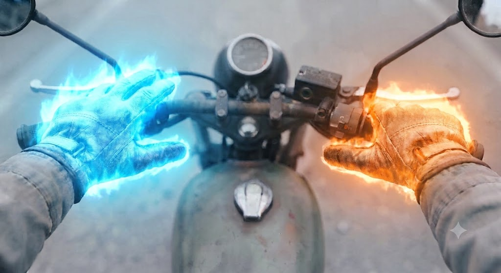
左は握力、右は振動。原因が違うから、対策も違う。
手が痺れると、回復するまで細かい作業がしづらくなる。スマートフォンの操作も、釣り道具の扱いも同じである。目的地に着いた直後の30分程度がこれに当たる。この章では、痺れの原因を2つに分けて特定し、車種選びと部品でどこまで解決できるかを扱う。
1. まず、教習所で測る
痺れの原因は2つあり、左右の手で分かれる。左手はクラッチを握る握力、右手はエンジンの振動である。原因が違うため、対策も別になる。したがって、車種を検討する前に、自分がどちらなのかを確定させる必要がある。
教習所は、この2つを分離して測定するのに適している。半クラッチを長時間使うため、握力の負荷は実走行より大きい。一方でエンジン回転数は2,000〜3,000rpmまでしか使わないため、振動の負荷は小さい。負荷が非対称にかかるので、症状の出方から原因を切り分けられる。
- 釣り糸を結ぶ。指先の感度低下を最も鋭敏に検出できる方法である。スマートフォンの文字入力で誤タップが増えるかどうかでも代用できる。
- 症状の出た指を記録する。上図のとおり、左手の小指・薬指側であれば握力、右手の親指・人差し指側であれば振動が原因である。
- 症状が消えるまでの時間を計る。これが目的地で失われる時間の実測値になる。
- 意識して脱力し、症状が消えるかを確認する。消える場合、原因は完全に握力である。なお、教習で手が痺れない人は少ない。ほとんどの人が緊張で握りしめるため、症状が出たこと自体は体質の証拠にはならない。
- 教習車の車種を確認する。CB400SFは直列4気筒で1気筒あたり100cc、NX400Lは並列2気筒で1気筒あたり199.5ccであり、振動源の大きさが約2倍違う。どちらに乗ったかによって、§4で振動を比べるときの自分の基準点が変わる。
測定結果によって、次に読むべき節が決まる。
2. 候補を絞る ── 買ってから変えられない2つ（気筒あたり排気量・姿勢）で足切りする
右手の振動を決める因子は4つある。
- ① 1気筒あたりの排気量——ボア²×ストロークに比例する。単気筒＞2気筒＞4気筒の順に大きい
- ② 常用回転数——2乗で効く。同じエンジンでも、ギアリングが高いほど小さくなる
- ③ 乗車姿勢——前傾では手に体重が乗るため、①②の差を上書きする
- ④ フロント周り——フォークの形式と前輪径・タイヤの空気量で、路面からの入力の伝わり方が変わる
このうち①と③は、買ってから変えられない。②は同じエンジンでもギアリングで決まり、④は部品で調整の余地がある——つまり②④は後から買い戻せる（＝購入後に部品で補う、の意。§5で回収する）。したがって①と③を足切りに使い、先に候補を絞る。
①で外れるもの——単気筒の鼓動を楽しむ系。単気筒には振動を打ち消す相手の気筒がなく、カウンターウェイトで半分程度しか消せない。鼓動感と痺れは、同じ振動を別の側面から見たものである。SR400、GB350、レブル250、CL250、スピード400、スヴァルトピレン401——「乗り味で選ぶ」章で上位に来た車種が、ここでは原理的に不利になる。
残るのはアップライトな並列2気筒だけである。普通二輪免許で買える範囲では、次の4台になる。
| 残った候補 | ① 1気筒あたり | ③ 乗車姿勢 |
|---|---|---|
| Z400 Kawasaki | 199cc | アップライト（ストリートファイター） |
| MT-03 Yamaha・本ページの軸 | 160cc（4台で最小） | アップライト（ストリートファイター） |
| エリミネーター Kawasaki | 199cc | アップライト（クルーザー） |
| NX400 E-Clutch Honda | 199.5cc | アップライト（アドベンチャー） |
①は4台とも160〜199.5ccの範囲に収まっており、差は最大でも24%である。つまり足切りを通した時点で、①はもう決め手にならない。ここから先は、左手（§3）と、②④の差（§4）で選ぶことになる。教習車のCB400SF（直列4気筒・100cc）は生産終了のため候補ではないが、§1で測った自分の基準点として以降も参照する。
3. 左手 ── クラッチの軽さ
教習車はCB400SF教習車仕様とNX400L教習車仕様の2種類がある。これに現行の市販車を加えて、左手の負担が小さい順に並べる。
| 車種 | 左手の負担 |
|---|---|
| NX400 E-Clutch Honda | なし——クラッチレバーの操作そのものがない |
| Z400／Ninja400 Kawasaki | 最も軽い——従来のアシスト＆スリッパークラッチより、さらに20%軽い |
| MT-03（2025年4月24日以降） Yamaha | 軽い |
| MT-03（それ以前） | 重い——中古車はここが分岐点になる |
| CB400SF 教習車仕様 ＝教習の基準 | 重い |
| NX400L 教習車仕様 ＝教習の基準 | 不明——公式諸元は「湿式多板コイルスプリング式」とのみ記載しており、アシスト機構の有無を明記していない |
教習車のCB400SFと、最も軽いZ400とでは、操作荷重の基準が2段階違う。したがって、教習で左手が疲れたことは、特定の車種を避ける理由にはならない。
なぜ差がつくのか ── 安く解いたカワサキ、高く解いたホンダ
教習車のCB400SF（教習車仕様）は、アシスト機構を持たない従来型クラッチである。2022年10月に生産終了したが、現役の車両は各教習所に多数残っている。後継のNX400L教習車仕様は2024年4月11日発売で、こちらは公式諸元にアシスト機構の記載がない（媒体記事にはアシスト＆スリッパークラッチとするものもあり、情報が食い違っている）。
同じ問題に対して、2社は異なる方法で対応している。カワサキはクラッチプレートを小径化し、オペレーションプレートの剛性を見直す機械式の解決を採った。追加コストは車両価格に埋もれる。ホンダは電子制御でクラッチ操作自体を不要にするE-Clutchを採った。確実だが高価で、NX400はE-Clutch仕様のみとなり111.1万円である。Z400（77.0万円）との差は34万円になる。
CL250 E-Clutchは70.4万円と安価だが、249ccの単気筒である。左手の問題を完全に解決する代わりに、右手の振動が悪化する。2つの経路がトレードオフの関係にあることが分かる。
参考価格：Z400 77.0万円／Ninja400 81.4万円／MT-03 68.75万円／CL250 E-Clutch 70.4万円／NX400 E-Clutch 111.1万円。
4. 右手 ── 残った4台の振動を比べる
§2の足切りを通った4台は、①に大きな差がない。したがってここから先を決めるのは、②の常用回転数と④のフロント周りである。まず②を見る。②は2乗で効くため、①の差を逆転させることがある。
Z400のピストンはMT-03より24%大きい（ボア×ストロークは70.0×51.8mm、MT-03は68.0×44.1mm）。しかしZ400はトルクに余裕がある分だけ実効ギアリングが高く、60km/h走行時の回転数は3,500rpmで、MT-03の3,790rpmより290rpm低い。回転数は2乗で効くため、この8%の差が15%の減少となり、実使用での振動差は6%まで縮む。つまり振動の大小は、排気量よりも常用回転数で決まる。エリミネーターはZ400と同一のエンジンで、公式ギア比から出る60km/hの回転もほぼ同じ3,478rpm（Z400比−0.7%・指数105）——②では3車の差はつかない。
§1で確認した教習車が、①の基準点になる。CB400SFは1気筒あたり100ccで、この章で扱う車種のなかでは滑らかな部類である。そこで右手に症状が出た場合は、ほとんどの車種で同じ症状が出ると考えられる。NX400Lは199.5ccで、Z400（199cc）とほぼ同じ大きさである。そこで症状が出なければ、Z400クラスまでは問題ないと判断できる。
④のフロント周りは、路面からの入力の伝わり方を決める。エンジンが静かでも、ここで差が出る。
| 車種 | フロントフォーク | 前輪 | 前タイヤ | サイドウォール高 |
|---|---|---|---|---|
| エリミネーター | 正立 φ41mm | 18インチ | 130/70-18 | 91mm |
| Z400／Ninja400 | 正立 φ41mm | 17インチ | 110/70-17 | 77mm |
| MT-03 | 倒立 φ37mm | 17インチ | 110/70-17 | 77mm |
| NX400 E-Clutch | 倒立（SHOWA SFF-BP） | 17インチ | 110/70-17 | 77mm |
| CB400SF 教習車・生産終了 | 正立 φ41mm | 17インチ | 120/60-17 | 72mm |
倒立フォークは剛性が高く、撓みにくい。操縦性では利点だが、撓みは路面入力に対する減衰でもあるため、手への振動では正立のほうが有利になる。また前輪径が大きく、タイヤのサイドウォールが高いほど、空気バネによる減衰が大きく、段差への当たり角も緩くなる。エリミネーターのサイドウォールはZ400・MT-03より18%高い。
サイドウォール高＝タイヤ幅×扁平率で算出（110/70-17なら110×0.70＝77mm）。NX400のフォーク径は公式に記載がないため形式のみ記した。
気筒数は振動の「種類」を変える ── そして第4の経路としての路面
1気筒あたりの排気量が同じでも、気筒数が違えば車体に伝わる力の種類が変わる。
- 直列4気筒——一次振動も一次偶力も打ち消し合う。二次振動だけが残る
- 180°並列2気筒——一次振動は打ち消すが、偶力と二次振動が残る
- 単気筒——打ち消す相手がいない。カウンターウェイトで半分程度しか消せない
このため、1気筒あたりが近い車種でも実際の振動は大きく異なる。FTR223（223cc単気筒）のピストンはZ400の1気筒（199cc）より12%大きいだけだが、体感する振動は比較にならない。
第4の経路として路面がある。サスペンションのストロークが短いほど路面の凹凸が直接手に伝わり、ブロックパターンのタイヤは舗装路で細かい振動を出し続ける。前サスストロークは、ネイキッドが120〜130mm（Z400は120mm）、スクランブラーが130〜150mm、アドベンチャーが135〜150mm、本格ADVが200〜265mmである。釣り②で評価したオフロード性能の高さは、この指標では逆向きに作用する。短いサスペンションは切り返しの軽さの源であると同時に、振動の伝達経路でもある。
5. 残りは、部品で買い戻せる
対策部品は振動源ではなく伝達経路に作用する。したがって、メーカーが対策していない車種ほど、後から部品を入れたときの改善幅が大きくなる。Z400／Ninja400の純正ハンドルは先端にナットを溶接しただけで、重量バーエンドとしての機能をほとんど持たない。ユーザーからは「ハンドルの振動がひどい」という指摘が多い一方、社外の片側270g／375gのヘビーウェイトバーエンドに交換した記事では、振動が大幅に減ったと報告されている。改善の余地がそのまま残っているということである。
| 優先 | 対策 | 費用 | 効く経路 |
|---|---|---|---|
| 1 | ヘビーウェイトバーエンド（片側375g） | 5,000〜1.2万円 | 右手（振動） |
| 2 | バー内部ウェイト（バースネーク） | 3,000〜6,000円 | 右手（振動） |
| 3 | 太めのゲルグリップ | 2,000〜5,000円 | 両手（握力） |
| 4 | クラッチレバーの遠さ調整 | 0円（アジャスターがあれば） | 左手（握力） |
4点の合計は1〜2万円である。§4で示した6%程度の差であれば、この対策で逆転する。部品で解決できないのは、乗車姿勢（前傾）と気筒数の2つだけである。
試乗では、60km/hを30分以上維持する。5分程度の試乗では振動の影響は現れない。あわせて、純正バーエンドの構造（ナット溶接だけであれば改善の余地がある）と、クラッチレバーの遠さ調整機構の有無を確認しておく。
6. この軸だけで並べ直すと
ここまでに出た因子をすべて列にして並べる。右手が①1気筒あたりの排気量・②常用回転数・③乗車姿勢・④フロント周り、左手がクラッチの軽さである。以下はページ全体の結論ではなく、痺れという1つの指標だけで評価した場合の順位である。
| 車種 | ① 1気筒あたり | ② 60km/h （①×②の指数） | ③ 乗車姿勢 | ④ フロント周り | 左手（クラッチ） | 総合 |
|---|---|---|---|---|---|---|
| Z400 | 199cc 並列2気筒 |
3,500rpm 指数 106 |
アップライト | 正立17" | 最も軽い 従来のアシスト＆スリッパーより20%軽い |
◎ |
| MT-03 本ページの軸 |
160cc 並列2気筒 |
3,790rpm 指数 100 |
アップライト | 倒立17" | 軽い 2025年4月24日以降。それ以前は重い |
◎ |
| エリミネーター | 199cc 並列2気筒 |
3,478rpm 指数 105 |
アップライト クルーザー |
正立18" | 軽い アシスト＆スリッパー |
◎ |
| Ninja400 | 199cc 並列2気筒 |
3,500rpm 指数 106 |
前傾 手に体重が乗る |
正立17" | 最も軽い Z400と同一 |
△ |
| NX400 E-Clutch | 199.5cc 並列2気筒 |
— 指数 — |
アップライト | 倒立17" | なし レバー操作が不要 |
○ |
| 単気筒勢 GB350・スピード400・スヴァルトピレン401・CL250 ほか |
249〜398cc 単気筒 |
— 指数 — |
アップライト | 車種による | 車種による | △ |
| CB400SF 教習車・生産終了 |
100cc 直列4気筒 |
— 指数 — |
アップライト | 正立17" | 重い アシスト機構なし |
○ |
②欄の指数は①×②＝（ボア²×ストローク）×（60km/h時の回転数）²を、MT-03＝100として指数化したもの。④はフォーク形式と前輪径（正立のほうが撓んで減衰し、径が大きいほどタイヤの空気量が多い）。6%以内の差は知覚できる閾値を下回るため、Z400・エリミネーターとMT-03は実質同点として扱う。③はこの指数を上書きする——前傾では手に体重が乗るため、①②がどれだけ良くても相殺される。ギア比の公表がなく指数を算出できない車種は「—」。
総合の補足：エリミネーターは④のフロント周りが最良だが、キャスター30°・トレール121mm・WB1,520mmでストリートファイターの外観にはならない。Ninja400は①②とクラッチがZ400と同一でも、③の前傾がそれを上書きする。NX400 E-Clutchは左手が完全に消えるが111.1万円。CB400SFは①③が良く左手だけが重く、この偏りがあるからこそ教習で左右を判定できる。
数値の出典：Z400 主要諸元／Ninja400 主要諸元／エリミネーター 主要諸元（Kawasaki公式・2026年式）／Z400 ギア比と速度／MT-03 ギア比と速度／Z400 バーエンド交換／Ninja400 ヘビーウェイトバーエンド／CB400SF教習車仕様／NX400L教習車仕様（Honda公式）／同・報道／NX400 E-Clutch。調査時点2026年7月。
釣りで選ぶ⑤ ― CT125・ハンターカブを深掘りする
この1台が受け持つ仕事
用途は3つある。裏山の農作業——道と呼べない斜面を上がり、道具を積んで戻る。岸壁の釣り——舗装が途切れた先の、車では入りたくない場所まで。船に乗るまでの荷物運び——クーラーと道具を積んで係留地まで走り、置いて出る。どれも、乗り手より荷物のほうが主役の仕事だ。
ホンダ自身の企画も近いところにある。2019年の発表時、この車は「自然をゆったり楽しむ、トレッキングCub」と紹介され、「キャンプや釣りなどの趣味と共に、気軽に自然の中に出かけられるレジャーモデル」と説明されていた（ホンダ公式）。レジャー向けとして作られたものが、そのまま仕事の足になる。
数字
| CT125・ハンターカブ | 数値 | この仕事にどう効くか |
|---|---|---|
| 最低地上高 | 165mm | 畦や轍を腹で擦らない |
| 車両重量 | 118kg | ぬかるみで倒しても一人で起こせる |
| タイヤ | 前後とも80/90-17 | 細く大径。轍とぬかるみを跨ぐ |
| リアキャリア | 409×477mm 荷掛けフック4か所・標準装備 | クーラーボックスがそのまま載る |
| 最大トルク | 11N·m/4,750rpm | 低い回転で出る。斜面を這うように上がる |
| 変速機 | 4段リターン＋手動クラッチ 湿式多板 | カブだが自動遠心ではない。半クラで速度を作れる |
| 燃費・タンク | 66.9km/L・5.3L | 満タンで約350km。1日走って余る |
| 価格 | 49万5,000円 | 税は年2,400円・車検なし |
※諸元はホンダ公式（型式8BJ-JA65・123cc・9.1PS/6,250rpm・軸距1,260mm・シート高800mm・前ディスクABS／後ディスク）。航続は燃費×タンク容量の計算値。
作業に効く装備
公式が挙げている悪路向けの装備は3つある。アンダーガードは「エンジンに飛び石などによる損傷を低減」、ハイマウント吸気ダクトは「ホコリなどの吸入を低減」、そしてアップマフラーだ（主な特徴）。どれも、舗装の上では要らないものである。吸気口を高く置く設計は、砂埃の立つ農道と、水を渡る場面の両方に効く。
クラッチが手動なのは、カブとしては例外だ。スーパーカブ110の自動遠心クラッチと違い、この車は湿式多板を自分で切れる。斜面の途中で止まる、半クラで速度を作る、荷物を積んだまま押し引きする——作業の足として使うほど、この違いが効いてくる。
競合がいない
「125ccで、悪路が走れて、荷物が積めて、車検が要らない」——この4つを同時に満たす現行の国内正規販売車は、ホンダの3台しかない。CT125と、クロスカブ110（107kg・40万1,500円〜）と、スーパーカブ110（101kg・34万1,000円〜）である。他社に該当車は無い。ヤマハPG-1（114cc・109kg・最低地上高190mm）は条件に合うが、日本では正規販売されていない（ヤングマシン）。
3台の差は素直だ。舗装の外へ出る量が多いほどCT125——最低地上高165mm、アンダーガード、大きい荷台はこの車だけが持つ。舗装が主で価格を抑えるならスーパーカブ110、その中間がクロスカブ110になる。
できないこと
- 高速道路と自動車専用道に入れない。原付二種なので法律上そもそも走れない。遠出は別の1台の仕事だ
- 荷物と二人乗りは両立しない。定員2名だが、荷台を使うなら一人で乗ることになる
- シート高800mm——118kgと軽いぶん扱えるが、カブの中では高い側だ
- リアキャリアの耐荷重が公表されていない。409×477mmという寸法は公式にあるが、何kgまで載るかの数値は公式には無い
- 防錆について公式は触れていない。海沿いで使うなら、洗車と注油は自分の仕事になる
最後の2つは、手入れの話になる。載せる重さも、錆の進み方も、使う側が決める部分が大きい。
ストリート系 ― レトロ感あるネイキッドを、ファッションで選ぶ
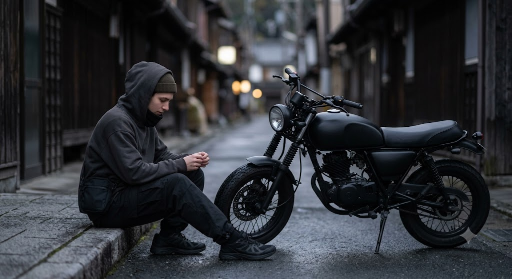
服と車体が、同じ一着になっている。
性能でも使い道でもなく、「その服に合うか」でバイクを選んだっていい——服と街との相性で選ぶ枠。対象は英国ビンテージ調に限らず、トラッカー・ボバー・スクランブラーまで含む「レトロ感あるネイキッド」全般。現行ネオネイキッド（MT-03など）との違いは速さではなく性格——レスポンスで走らせるかわりに低速に振った、ゆるゆる加速で街を流すノリ（車で言うとスポーツカーに対するミニバンの気楽さ）で、無骨さを綺麗めカジュアルに合わせるイメージ。長い章なので以下すべて折りたたみ——気になる所だけ開ける。
この枠の考え方 ― 「バイクが服の一部」／市街地では要る性能だけ高い
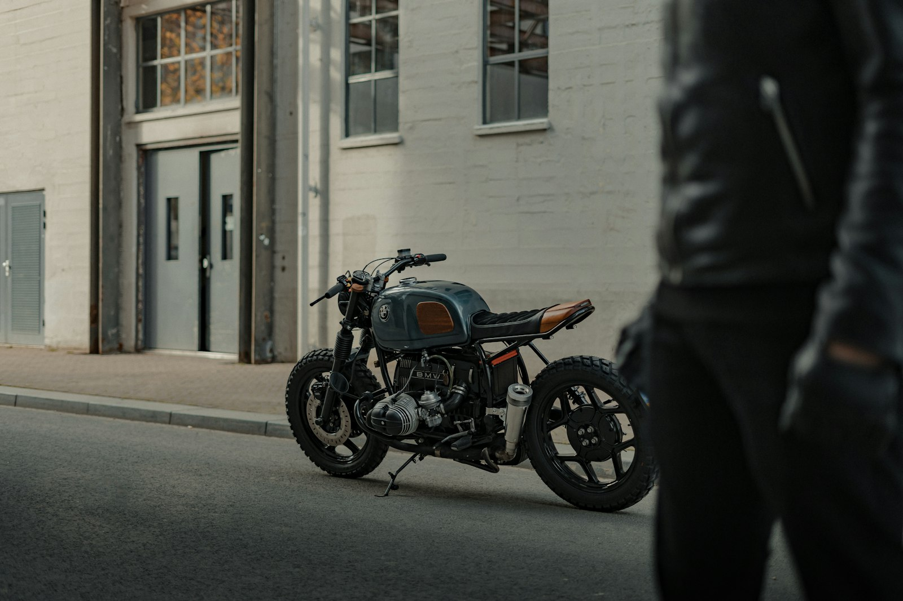
イメージの出どころのひとつがLightning誌の東京ストリートバイクスナップ【トライアンフ編】——'37〜'69年のビンテージ・トライアンフに乗る職人や経営者たちのスナップで、バイクが服の一部・ファッションの文脈で選ばれている。ただしこの章が狙うのは英国ビンテージ「限定」ではなく、この空気感そのもの——トラッカーもボバーもブラットも同じ土俵にある。この枠の使い道は峠でも高速でもなく市街地——コンビニ・買い物・通勤。車の多い道ではどうせ前に車がいるので、最高速や追い越し加速には出番がない。実際に使う「性能」は信号待ちからの発進とコンビニでの転回・取り回しのふたつだけで、そこでは18PSも42PSも大差なし——性能表は一旦捨てていい。そしてこの章で狙うのは高級ビンテージではなく、若者がバイト代で組める手軽さ——新しめの国産をベースに、シートとテール周りだけ替えて純正の美しさを活かす、引き算のカスタムだ。
① 「あの空気」を新車で買う ― 現行モダンクラシック5系統（比較表）
手間なしで空気だけ欲しい人の枠。全員単気筒で、街乗りの走りは全員合格——だからここは見た目と味だけで選んでいい。価格は税込（2026年7月時点）。鼓動は本ページ共通の主観（W230・ハンター350は同系エンジンからの推定）。
| モデル | カスタム事例 | エンジン | スタイルの文脈 | 価格 | 鼓動 |
|---|---|---|---|---|---|
| スピード400 トライアンフ | ▶ 画像検索 | 水冷単398cc 40PS | 本家トライアンフの現行入門。名前も意匠もビンテージ由来のモダンクラシック。記事の世界への「正規ルートの入口」 | 75.2万 | 4 |
| スクランブラー400X トライアンフ | ▶ 画像検索 | 水冷単398cc 40PS | スピード400の兄弟スクランブラー。前19インチ＋アップフェンダーで、この表で唯一砂利道もいける（オフ7.7＝「釣りで選ぶ」章の主役） | 81.9万 | 4 |
| ハンター350 ロイヤルエンフィールド | ▶ 画像検索 | 空冷単349cc 20PS | アーバンレトロ。クラシック350譲りの空冷単を、街乗り向けの軽快な車体に載せた都会仕様。この表の最安 | 65.0万 | 7 |
| GB350／GB350C ホンダ | ▶ 画像検索 | 空冷単348cc 20PS | 和製クラシックの本命＝この章のカスタムベース（②参照）。Cは深フェンダーのレトロ仕様。ホンダディーラー網の安心つき | 64.9万／ 71.5万 | 7 |
| W230／メグロS1 カワサキ | ▶ 画像検索 | 空冷単232cc 18PS | W1〜メグロの系譜＝英国調の日本代表。143kgの細身と740mm台の低シートで「細さ」はこの表随一。S1はバフがけ・専用塗装の上位仕上げ | 66.6万／ 73.7万 | 6 |
② カスタムは「シートとテール」だけ ― 純正の美しさを活かす引き算
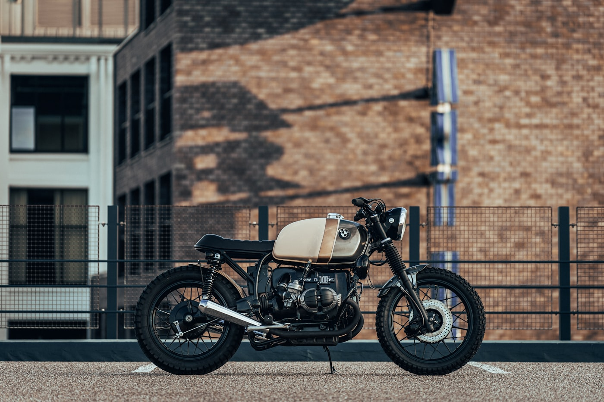
ベースの本命はGB350：空冷単の金属感は素で英国クラシック調。そしてSR400が何十年も担ってきた「国産カスタムベースの王」の座を継ぎつつある——シート・フェンダーレス・ロングフェンダー類の社外パーツ（デイトナ、K-SPEEDなど）が既に厚く、フラットシートに替えるだけで一気に「あの空気」になる。W230／メグロS1は出たばかりで社外はこれから増える段階だが、そもそもメッキフェンダー・バフがけ済みでノーマルの完成度が高く、替える必要が少ないという別の正解。
SR400という別解：どうしてもSRなら'16〜'21のFI最終期が10年落ち圏内で、パーツと専門店の厚みは今も王者。ただし中古のみ＆Final Editionは高騰（70万超も）——「新車で始めるGB350」と比べてから決める。それより古い中古を探し回るのは、この章のノリではない。
事例を眺める：新車勢のカスタム事例は①表の「カスタム事例」列から。SR400は ▶ SR400 カスタム（画像検索）——何十年ぶんの事例の厚みが一目で分かる。完成車の空気は巻末の「カスタム事例ギャラリー」章で。
カスタムの方向性 早わかり ── ボバー／カフェレーサー／ストリートファイター…（検索ワード付き）
カスタムには定番の「型」があり、型の名前を知っていると事例探しが一気に楽になる。探し方は「車種名 × スタイル名（＋カスタム）」——例えば「メテオ350 ボバー カスタム」で画像・動画検索すると、下のギャラリーのような事例がいくらでも出てくる。型はベース車を選ばない——SR400のようなレトロ系が定番ベースの型もあれば、MTのようなネオ系がベースの型もある。主要な型は次の7つ（レトロ系の型はバイク館のSR400カスタム解説も参考になる。クルーザーのサブジャンルとしての分類はクルーザー章の①へ）。
| スタイル | 特徴（見分け方） | 検索例 |
|---|---|---|
| ボバー | 余計なものを削ぎ落として低く構える。ショートフェンダー・単座シート・太めのタイヤ。「bob（切り詰める）」が語源 | ▶ メテオ350 ボバー カスタム |
| カフェレーサー | 英国発のレーサー風。セパレートハンドルの前傾姿勢・ロングタンク・シングルシートカウル・バーエンドミラー | ▶ SR400 カフェレーサー ▶ MT-03 カスタム カフェレーサー |
| トラッカー | 米国ダートトラックレーサー風。アップハンドル・ゼッケンプレート風サイドカバー・一体型トラッカーシート・右出しアップマフラー。軽快で街乗り向き | ▶ SR400 トラッカー カスタム |
| スクランブラー | オンロード車にオフロード装備を足した型。ブロックタイヤ・アップマフラー・ワイドバー・前後フェンダー浮かせ。砂利道もいける見た目 | ▶ GB350 スクランブラー カスタム |
| ブラット | 東京のBRAT STYLE発。フラットシート＋切り詰めたテールで低く構える引き算カスタム——この章②の方向はここ | ▶ GB350 ブラットスタイル |
| チョッパー | フロントフォークを伸ばし不要物を大胆に切り落とす（chop）自由派。ロングフォーク・個性最優先で万人向けではない | ▶ SR400 チョッパー |
| ストリートファイター | SS（フルカウルスポーツ）のカウルを剥いでバーハンドル化した、唯一「速い方へ」向かう型。ランプマスク・低く幅広いバー・カチ上げテール。市販化されてMT／Zシリーズになった（経緯はネイキッド章の解説）——今はそのMTをベースに、バーエンドミラーや小径灯火類でさらに研ぎ澄ます方向が定番 | ▶ MT-03 カスタム ストリートファイター |
下のギャラリーの各カードのタグ（スクランブラー／トラッカー／ボバー／カフェレーサー）はこの分類。気に入った型が見つかったら、上の要領で「乗りたい車種 × 型」を検索すると自分の1台のイメージが固まる。
③ 直進性能をジオメトリで見る ― WB・キャスター・フォーク・ブレーキ
「釣りで選ぶ①」章と同じジオメトリの流儀で、この章の5台＋基準MT-03（＋比較としてクルーザー章のメテオ350）を車体の数字で比較する。メテオ350は「MT-03からレスポンスの良いエンジンを取って、ゆるゆる加速の低速側に振った、車で言うとミニバン的なゆったり直進」の代表——レトロ系とネオネイキッドの性格差がWB・キャスターの数字にそのまま出る。読み方も同じ：ホイールベース（WB）が長い・キャスター角が寝ている（大きい）・トレールが大きいほど直進安定、短く立っているほどキビキビ。フォークは倒立ほど高剛性（詳しくは「釣りで選ぶ①」章のアコーディオン）、ブレーキはディスク径が大きいほど強力。重量は装備重量で、軽いほど押し引き・転回が楽。数値は各社公表諸元（キャスター非公表の車種は—）。
| モデル | WB | キャスター （トレール） | フロントフォーク | ブレーキ 前｜後（ディスク径） | 重量 （装備） | 最小回転半径 | 直進安定 | 街の取り回し |
|---|---|---|---|---|---|---|---|---|
| ★MT-03 ネオ基準 | 1380mm | 25.0° （95mm） | φ37倒立 | 298｜220 | 166kg | — | ○ | ○ 軽量・17インチ |
| スピード400 | 1377mm | 24.6° （102mm） | φ43倒立 | 300(ラジアル4pot)｜230 | 170kg | — | ○ | ○ キビキビ旋回型 |
| スクランブラー400X | 1420mm | 23.2° （108mm） | φ43倒立 | 320｜230 | 180kg | — | ◎ 長WB×前19インチ | △ 大柄・シート835mm |
| ハンター350 | 1370mm | — | φ41正立 | 300｜270 | 181kg | — | ○ | ◎ 章内最短WB×17インチ |
| GB350／C | 1440mm | 27°30′ （120mm） | φ41正立 | 310｜240 | 179kg C 186kg | 2.3m | ◎ 章内最長WB×寝たキャスター | ◎ 切れ角大きくR2.3m |
| W230／メグロS1 | 1415mm | 27.0° （99mm） | φ37正立 | 265｜220 | 143kg | 2.6m | ○ | ◎ 章内最軽量 |
| メテオ350 比較・米国クラシック | 1400mm | — | φ41正立 | 300｜270 | 191kg | — | ◎ 長WB×前19インチ×低重心 | △ 表内最重量 |
結論：ストリート系の選び方
MT-03と比べてどうか——80km/h以下では大差ない：レスポンスで走るワインディングと高速道路を除けば、体感差は小さい。むしろ20PS勢は車体が急加速を誘わないぶん、流れに乗ってゆったり走るのが自然になる——安全にも財布にも効く「性格の良さ」。そして遅いのは遅いなりに、スクーターを乗り回すような気軽さがある——原付の気安さのまま中型に乗れるのがこの枠の効能で、ネイキッド章の「オーバースペックは保険料」のちょうど裏返しにあたる。
注意はひとつだけ：この枠の弱点は共通で高速道路（20PS前後×風防なし）。用途が「街＋たまの下道ツーリング」に収まるかだけ確認しておく。
足元について：ブーツ・レザーはこの世界の王道だが、必須ではない——おしゃれなスニーカーなら普通に似合う。目安は「ハイテクより、味のあるローテク定番（コンバース・バンズ・ジャーマントレーナー系）」。'60年代から存在する靴なので、ビンテージともモダンクラシックとも時代がケンカしない。本ページ全比較の「スニーカー」軸が測っているのはモダンなスニーカースタイルとの相性なので、クラシック勢の△は“似合わない”ではなく“靴も選ぶ”と読み替えてほしい——むしろこの枠は「靴から逆算してバイクを選ぶ」遊びができる。
クルーザーを深掘り ― サブジャンルと400クラス比較
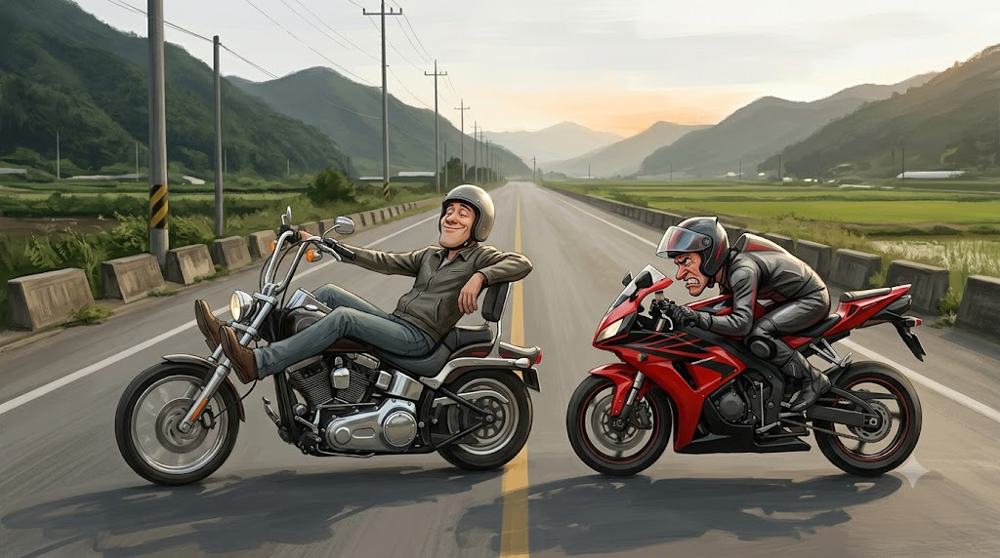
同じ道、同じ速度。違うのは姿勢だけ——そして売れているのは、左だ。
そもそも Jazz に惹かれた出発点＝アメリカンの魅力そのものを、ここで一度分解しておく。日本でアメリカン（クルーザー）を選ぶ理由は、突き詰めると2つ——信号の少ない一本道を流すか、見た目か。本ページはそう割り切ってきた。だが、ひと口に「アメリカン」と言ってもスタイルの系統は複数あり、日本の普通二輪（〜400cc）で狙える現行モデルは意外と限られる。
① スタイルのサブジャンル分類（クルーザー／ボバー／チョッパー／ドラッガー／パワークルーザー…）
同じ「アメリカン（クルーザー）」でも、成り立ちで見た目と狙いが分かれる。中古を含めた見分けの地図。カスタムの型としての同名スタイル（ボバー・チョッパー等の検索ワード付き）はストリート系章の「カスタムの方向性 早わかり」へ。
| スタイル | 成り立ち・定義 | 見分け方 | 代表・このリストでの該当 |
|---|---|---|---|
| クルーザー （総称／スタンダード） | 直線巡航向けの車体そのもの。低シート・前方ステップ・ゆったり姿勢。ハーレー／インディアンが原点で、他スタイルの親カテゴリ | 大柄でゆったり、素の量産スタイル | ハーレー各車・インディアン／（400級）シャドウ400・バルカン400 |
| ボバー （Bobber） | 語源は「bob＝短く切り詰める」。フェンダー等を短くして軽量化。ダートトラックがルーツ。フォーク延長やフレーム加工はせず原型を保つのがチョッパーとの違い | ソロシート＋切り詰めフェンダー＋太いリアタイヤ、無骨でミニマル | レブル250／500（現行の代表格） |
| チョッパー （Chopper） | 語源は「chop＝切り落とす／大胆に加工」。延長・寝かせた前フォーク、高いハンドル、低いシート、フェンダーレス。カスタム文化の象徴（映画『イージー・ライダー』） | 極端に前へ伸びた前輪、改造前提 | 量産車には少なく、カスタムベース |
| ドラッガー （ドラッグスタイル） | ドラッグレース由来のロー＆ロング。長いホイールベースで低く構え、直線加速と押し出しを重視した「直線番長」 | 長い車体・低い尻上がりシルエット | エリミネーター400／（中古）ドラッグスター・デスペラード |
| パワークルーザー （Power Cruiser） | 大排気量・高出力でスポーツ性を持たせたクルーザー。太いタイヤ・倒立フォーク・強力なブレーキを備える現代型 | クルーザー体型＋スポーツ装備・高出力 | レブル1100／ディアベル／VMAX ※すべて大型。400クラスには該当なし |
| 米国クラシック （レトロクルーザー） | クルーザー体型にクラシックな意匠を載せた復古調。空冷単気筒などレトロな鼓動を持つものが多い | 丸みのあるレトロ外装＋クルーザー姿勢 | メテオ350（「乗り味」章と同じ分類） |
| ツアラー／バガー （参考・中型スコープ外） | 大型フェアリング＋サドルバッグで長距離を担う大型ツーリングクルーザー | 大きなカウル＋左右のパニア | ハーレー ロードグライド等（大型） |
② 日本の普通二輪（〜400cc）で狙えるモデル ― 現行＋中古を1枚に
日本の中型免許は〜400cc。その枠のアメリカンを、現行の新車から中古（絶版）まで1枚にまとめ、現行／絶版を併記した。パワーバンド＝最高出力・最大トルクの発生回転数とエンジン音（動画）も載せる。鼓動感は本ページ共通の主観。★＝候補として強い3台（下で深掘り）。鼓動の高い順。
| モデル | 系統／エンジン | 最高出力 | 最大トルク | エンジン音 | 状態 | 鼓動 |
|---|---|---|---|---|---|---|
| メテオ350 | 米国クラシック 空冷単気筒349cc | 20.2ps /6,100rpm | 27N·m /4,000rpm | ▶ 空冷単 | 現行 | 8 |
| ★ドラッグスター400 ヤマハ '96〜'17頃 | クルーザー 空冷Vツイン399cc | 33ps /7,500rpm | 32N·m /6,000rpm | ▶ 空冷V2 | 絶版 | 7 |
| ★シャドウ400 ホンダ '97〜'14 | クルーザー 水冷Vツイン398cc | 33ps /7,500rpm | 34N·m /5,500rpm | ▶ 水冷V2 | 絶版 | 6 |
| スティード400 ホンダ '88〜'01（元祖） | クルーザー 水冷Vツイン398cc | 31ps /7,500rpm | 33N·m /5,500rpm | ▶ 水冷V2 | 絶版 | 6 |
| ★バルカン400 カワサキ '95〜'00年代 | クルーザー 水冷Vツイン399cc | 33ps /7,500rpm | 33N·m /6,000rpm | ▶ 水冷V2 | 絶版 | 6 |
| デスペラード／イントルーダー400 スズキ '90s〜'00s | クルーザー 水冷Vツイン399cc | 33ps /7,500rpm | 32N·m /6,000rpm | ▶ 水冷V2 | 絶版 | 6 |
| レブル250 | ボバー系 水冷単気筒249cc | 26ps /9,500rpm | 22N·m /6,500rpm | ▶ 水冷単 | 現行 | 3 |
| エリミネーター400 | ドラッガー系 水冷2気筒398cc | 48ps /10,000rpm | 37N·m /8,000rpm | ▶ 水冷2気筒 | 現行 | 1 |
③ 直進安定性 × 低速Uターン ― ジオメトリで見る
クルーザーの乗り味を決めるのが車体ジオメトリ。ホイールベース（WB）が長い・キャスター角が寝ている（大きい）・ハンドル切れ角が小さいほど、直進安定性は上がるが、その裏返しで最小回転半径が大きくなり、低速Uターン・徒歩の取り回しは苦手になる（トレールが大きいほど低速でハンドルが重くもなる）。数値は本ページ「釣りで選ぶ①」章と同じ実測／推定。
| モデル | ホイールベース | キャスター | 切れ角 | 最小回転半径 | 直進安定 | 低速Uターン |
|---|---|---|---|---|---|---|
| メテオ350 | 1400mm | 24°~ | 33°~ | 2.75m | ○ | ◎ 低シート・スリムで楽 |
| レブル250 | 1490mm | 28.0° | 35° | 2.80m | ○ | ○ 足つき最良／切れ角小 |
| エリミネーター400 | 1520mm | 30.0° | 35° | 2.83m | ◎ | △ 現行最長・大回り残る |
| 中古の400Vツイン ドラッグスター/シャドウ/バルカン等 | 1600〜1650mm | 〜34° | — | 約3m〜 | ◎ 最上位 | △ 低シートで支えは楽だがR最大 |
候補として強い3台 ― ドラッグスター400／シャドウ400／バルカン400
中古の400Vツインでも、玉数・年式の新しさ・カスタム文化・スタイルの完成度でこの3台が抜けている。低回転トルクの「クラッチだけで進む」鼓動と、和製アメリカンらしい低く長い佇まいが揃う——現行の水冷勢に一番足りない要素をまとめて持っている。元祖スティード400は名車だが最古（〜'01）で価格上昇中のため、実用の入手性ならその後継＝シャドウ400を推す。
クラス唯一の空冷V2で鼓動が一枚上（鼓動7）。〜2017年頃まで生産で玉数最多、社外パーツ潤沢でボバー化も自在。シート660mm・シャフト駆動で注油いらず。
スティードの52°V2を受け継いだ後継で、〜2014年まで生産と新しく中古も活発。低中速トルクの鼓動＋ホンダらしい熟成。和製アメリカンの完成形。
バルカン800ボアダウンのロングストロークV2。ドリフターの深いエスカルゴフェンダーは中型離れの押し出し。クラシックも上質（玉数はやや少なめ）。
3台の中身（バリエーション・足つき・注意点）
- ドラッグスター400（ヤマハ '96〜'17頃）：この3台で唯一の空冷Vツイン→鼓動は最上位。2系統あり——標準（前19インチ・シート660mm）とクラシック（XVS400C）（前16インチの極太タイヤ・深いフェンダー・フットボード・メッキ豪華・シート710mm）。カンチレバー式スイングアーム（一見リジット風）＋シャフトドライブでチェーン注油不要、'09にFI化。玉数最多・年式も新しめでボバー／カスタムの王道。注意：空冷ゆえ真夏の渋滞は熱め、程度はピンキリ。
- シャドウ400（ホンダ '97〜'14）＝スティードの後継：元祖スティード400（'88〜'01）が火をつけた和製アメリカンの系譜を継ぎ、同じ水冷52°V2（OHC3バルブ・ツインプラグ）を吸排気の見直しで熟成。'08にFI化して'14まで生産——スティードよりずっと新しく、中古の玉数・程度で有利。クラシック（NC44）とカスタム（スラッシャー系）がある。スティードは元祖ゆえ名車化・価格上昇・最古なので、「似たV2で新しい実用車」を求めるならシャドウが正解。注意：旧年式は電装・冷却系の劣化チェックを。
- バルカン400（カワサキ '95〜'00年代）：バルカン800のボアダウン＝ロングストロークV2でクルーザーらしい鼓動。クラシック（VN400A）と、エスカルゴ深フェンダーのドリフター（VN400D）（前後16インチ・インディアン風ビンテージルック・シート750mm）。中型離れした堂々スタイルが身上。注意：玉数は上2台より少なめ、ドリフターは希少で見つけにくい。
結論：400クラスのアメリカンの選び方
「取り回し」で選ぶなら：WBが短くR小さめのメテオ350が現行では素直。逆にエリミネーター400や中古の400Vツイン（WB1600mm級）は直進安定は最上位だが低速Uターンは苦手——低シートで足つきは効くので、慣れと切り返しでカバーする前提。
現行か絶版か：「新車の保証・整備の楽さ」なら現行、「濃い鼓動・手頃な価格・自分色に仕上げる楽しさ」なら絶版の3台——ここが400アメリカンの分かれ道。元祖スティードは名車だが古いので、実用の入手性なら後継のシャドウ。
中型・全比較（1枚の表）
この検討に出てきた全38台を1枚に——前傾スペクトラム順（深い前傾→後傾）。モデル名は各公式サイトへのリンク、エンジン音は排気音重視の動画（まず耳で比べてほしい）。鼓動感は乗り味の主観推定（高いほどドコドコ、レーサー系は「水冷・高回転＝低鼓動」の枠で低く置いた。ZX-25Rは2ストのような別ベクトルで0※）。機動性・直進安定性は0-10のスペック算出値（機動性＝最小回転半径が小さいほど高スコア、直進安定性＝ホイールベース・キャスター角・シート高〈重心の代理〉の正規化平均。式はdata.md）。算出は全38台とも同一の式——ホンダ・カワサキ・ドゥカティ・ヤマハ・ロイヤルエンフィールドは公表の切れ角/回転半径を使い、非公表車は同ジャンル典型の切れ角（レーサー・ストファイ35°など）からの推定。中古の400V2は個体差が大きく対象外（「—」表記）。ジャンルは前傾姿勢と外装で7つに分類：レーサー（フルカウル）、ストファイ（ネイキッドスポーツ）、ネオレトロ（レトロ意匠のモダン設計）、レトロ（空冷クラシック）、スクランブラー（前輪19インチのオフ風ロード）、エンデューロ（前輪21インチの本格オフロード）、クルーザー（低床・ロングホイールベース）。
原付（50cc）の1台：もう一台の相棒
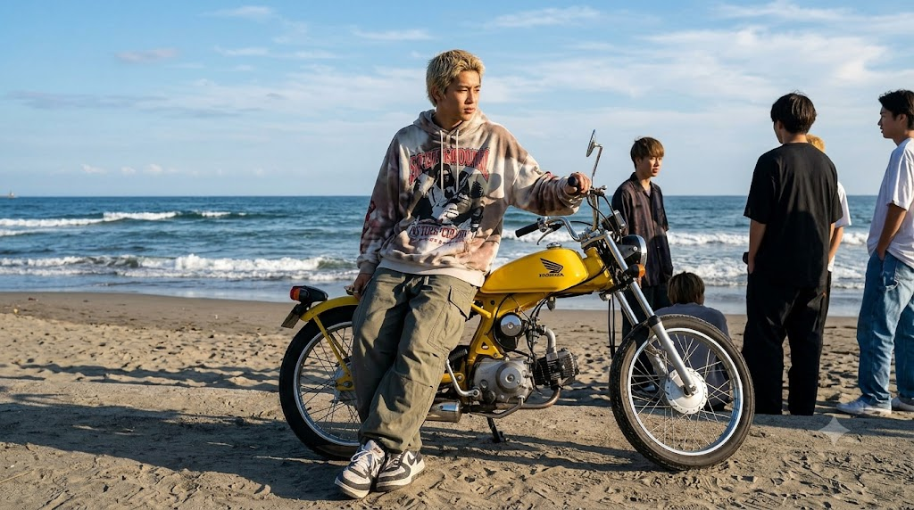
免許で乗れれば何でもいい。だから、いちばん気楽に選べる一台。
2台のうち片方は原付。スタンスは「原付免許で乗れれば何でもいい」。ざっくり レトロスクーター系／カブ系／ワイルドなアメリカン系の3グループで、これも使い道と見た目で選ぶ。 スニーカー適合は中型と同じ考え方——ワイルドなアメリカン（Jazz・マグナ50）はスニーカーより武骨なブーツ寄り。 釣り（海の岸壁）も中型と同じ基準：近所の堤防・岸壁への釣行なら、荷台と前カゴでロッド・クーラーを積めるカブが最強格。 スクーターもリアボックス＋ロッドホルダーで十分戦える。Jazz・マグナは積むところがほぼ無い。
| 車種 | 系統 | 使い道の目安 | 釣り | スニーカー | 情報 |
|---|---|---|---|---|---|
| スーパーカブ50 | 実用レトロ | 街中・通勤◎／釣り具も積載◎ | ◎ | ○ | カタログ |
| ジョルノ | レトロスクーター（ベスパ系） | 街中◎／お洒落な普段の足 | ○ | ◎ | Honda |
| ヴェルデ | レトロスクーター（ベスパ系・中古） | 街中○／丸みのある旧車 | ○ | ◎ | スペック |
| ベスパ | 本家イタリアン ※日本は125cc〜。原付免許では乗れない | — | — | ◎ | Vespa |
| Jazz | ワイルドなアメリカン（中古） | 街中○／スタイル重視 | △ | △ | カタログ |
| マグナ50 | ワイルドなアメリカン（中古） | 街中○／スタイル重視 | △ | △ | カタログ |
※ 50ccの今後：50cc（原付一種）は2025年10月末の排ガス規制で生産終了。今後は125ccベースを最高出力4.0kW以下に制御した「新基準原付」が原付一種に加わる（法定30km/h・二段階右折などのルールは従来どおり）。中古の従来50ccを狙うか、新基準原付にするかも選択軸。
・スーパーカブ50は宅配車ゆずりの実用性が本領。標準リアキャリア＋大型リアボックス（29〜50L超）にタックル一式、純正ワイドフロントバスケット（幅47.6cm）にソフトクーラーやバケツ。前・中・後に分散して積めるので、クーラー＋ロッド＋道具箱がまるごと載る積載力は全車中でも屈指（キャンプ仕様の作例）。
・スクーター（ジョルノ等）はメットイン＋リアボックス＋フラットフロアが効く。ロッドはロッドケースで背負うかリアに固定、ソフトクーラーは前カゴやフラットな足元に置けるのがスクーターだけの利点。小物はメットインへ——短距離の堤防・岸壁釣りなら必要十分（スクーター釣行の実例）。
・Jazz・マグナ50はアメリカン体型で荷台がほぼ無く、積載は苦手（スタイル優先の1台）。
50ccの乗り味比較（スクーター・カブ・Jazz・TZR50）
参考までに、原付は同じ50ccでも中身の機構でまったく別物。「鼓動感」の感覚を身近な例で掴んでおく。
| 乗り物 | エンジン / 機構 | 乗り味 | 鼓動感 | エンジン音 |
|---|---|---|---|---|
| スクーター （ジョルノ等） | 空冷4スト単気筒＋CVT無段変速 | 変速ショックゼロ、ただ滑らかに進む。エンジンと車体が離れていて振動も遠い | ほぼ0 | — |
| スーパーカブ50 | 空冷4スト単気筒＋自動遠心クラッチ4速 | トコトコと軽快。多少のリズムはあるが穏やかで実用的 | 1〜2 | ▶ 走行音 |
| Jazz / マグナ50 | カブ系の空冷4スト単気筒＋マニュアル4速 | 見た目はアメリカンだが中身はカブ。鼓動は控えめ | 1〜2 | ▶ Jazz / ▶ マグナ50 |
| TZR50 | 水冷2スト単気筒・10,000rpm | 「キーン」というカン高い2ストサウンド。低速は薄く、高回転で一気に伸びる。鼓動というより“ヒュイーン”と滑らかにパワーが立ち上がる真逆の性格 | 0 別ベクトル | ▶ 2スト |
結論：いまのガレージ計画
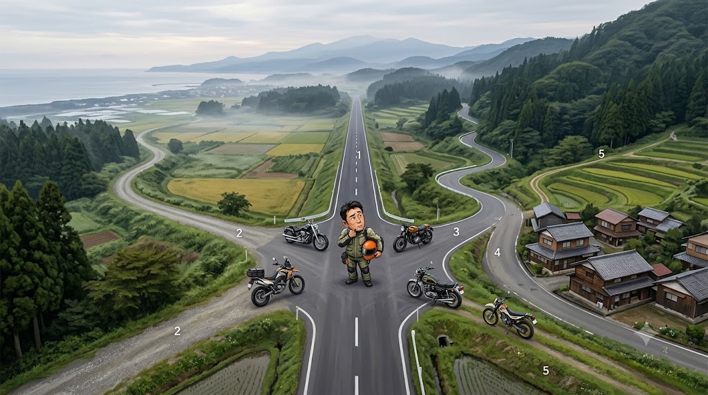
道の数だけ、答えがある。
冒頭に書いたとおりだった。ZX-4Rが公道で得られるものは、他の400と同程度である。そして「お金の無駄」という言葉には条件がついた——サーキットに行かないなら、である。だから憧れは到達点として置き、いま買う1台は、車ではなく道で決める。毎日走る道は80km/hの一車線国道（前が詰まる・海沿い）で、この道ならCBR400Rだ（→当面の1台の【答え】）。軸を変えると答えは入れ替わる。以下は、各章が出した答えを軸ごとに並べ直したものだ。
| 軸 | 答え | 根拠の章 |
|---|---|---|
| 国道メイン（普段使い・最初の1台） | CBR400R E-Clutch 直進が据わり（トレール102mm・軸距1,410mm・195kg）、航続478kmは最長。総減速比6.349＝最もハイギヤードで、流れているときは80km/h 4,319rpmで最も静か。停止からのシフトも2回で最少。短所は取り回しで、最小回転半径2.9m・195kgの切り返しは最も苦手。姿勢まではツアラーではない | 当面の1台【答え】 |
| スタイルと姿勢（クルーザーの形のツアラー） | エリミネーター400 用途はCBR400Rと同じ落ち着き側。力はほぼ同じ（Nm÷総重量 0.155対0.149）・シート高735mmは最低・直立で最も楽・軸距1,520mmで直進が最も据わる。航続は308kmでCBR400Rより約170km短く、防風は無い | 当面の1台【答え】の補足 （オプションのエリミネーター400）／クルーザーを深掘り |
| 軽快さ（腕が上がってから） | Ninja 400 167kg・最小回転半径2.5mで軽快。軽快さが楽しさになるには乗り手の腕を含む4条件が要る——落ち着いた車で公道を覚えてから受け取る | 当面の1台【答え】の理由 |
| 気楽さ（車検なし・軽さ・価格） | レブル250 軽二輪7年連続1位・171kg・63.8万で車検なし。ただし250の車格は175cmには小さく、低いシートで膝が上がる | 身長175cm × 田舎の一車線国道（中間結論） |
| 鼓動・レトロ | GB350（国産の現実解・鼓動7） 最濃はRE350系＝ブリット／クラシック／メテオ350（鼓動8〜9） | 乗り味で選ぶ |
| 釣り・林道 | スクランブラー400X・CL250 前19インチで砂利は十分。深い轍・本当のぬかるみならCRF250L／セロー250 | 釣りで選ぶ①②③ |
| 基準器・万能 | MT-03 250の車体に320。痺れの足切りも通る残り4台の1つ。ただし175cmには車体が最小で膝が窮屈、痺れ指標ではZ400が上 | ネイキッドを深掘り／釣りで選ぶ④ |
| 憧れの到達点 | ZX-4R——ただし公道では差が出ない サーキットとセットで迎える。公道用と練習用に分ける2台体制が前提（練習用は17インチの125＝GSX-R125／YZF-R125。下の原付50ccとは別枠） | 暴走族をやらずにZX-4Rに乗るために |
| 原付（もう1台） | 別途1台 積むならスーパーカブ50。見た目でアメリカンの佇まいを取るなら出発点のJazz／マグナ50（中古・積載は苦手）、ベスパ風ならジョルノ系。近場の釣りはこれで足りる ※ZX-4R行の「練習用」は別枠の125で、この50ccとは役割が違う | 原付（50cc）の1台 |
ヘルメット：本命は Arai / SHOEI
ヘルメットは Arai・SHOEI が好み（かぶり心地・品質・所有感）。特に今回のレトロ／クラシック系バイクには、ネオクラシックの SHOEI Glamster・Arai Rapide-Neo がよく似合う。スクランブラー系にはバイザー付きの Arai XD。 5万円前後・コスパ重視なら日本製の OGK Kabuto。モデル名は公式サイトへのリンク。
本命：Arai / SHOEI（好み・品質）
| モデル | 系統 | 似合う・得意 | 参考価格（税込） |
|---|---|---|---|
| Glamster SHOEI | ネオクラシック | レトロ車に◎（ブリット350・GB350・クラシック）。丸みのクラシック顔＋最新の安全・軽量 | 約5.4万円〜 |
| Rapide-Neo Arai | ネオクラシック | 80年代クラシック顔＋Araiのかぶり心地。レトロ／カフェ系に◎ | 約6万円台 |
| Z-8 SHOEI | スポーツ（軽量・静粛） | 軽くて静かな定番。ジャンルを選ばず万能 | 約6.3万円〜 |
| XD Arai | アドベンチャー（バイザー付） | スクランブラー400X などオフ系スタイルに◎ | 約6.2万円（¥61,600） |
| GT-Air 3 SHOEI | ツーリング | インナーサンバイザー・換気・眼鏡対応でロングが快適 | 約7万円〜 |
コスパ枠：OGK Kabuto（日本製・機能十分）
| モデル | タイプ | 主な機能・強み | 参考価格（税込） |
|---|---|---|---|
| KAMUI-5 OGK Kabuto | フルフェイス（標準） | インナーサンシェード・換気・眼鏡対応の“全部入り”。迷ったらこれの快適バランス | 約4.6万円 |
| AEROBLADE-6 OGK Kabuto | フルフェイス（軽量） | 軽さ＋空力＋換気。首の負担が軽く、高速巡航や長距離で疲れにくい | 約4.6〜5.1万円 |
| RYUKI OGK Kabuto | システム（あご開閉式） | あご部が上げられる。信号待ち・眼鏡・インカム・給油が楽。インナーサンシェード＋IRカットシールド | 約4.6万円 |
どれもサイズは実店舗で試着してから。頭の形との相性（一般に Arai は丸め、SHOEI はやや面長と言われる）があるので、試着で合うほうを選ぶのが確実。
カスタム事例ギャラリー ― 動画で見る（スタイルタグ付き）
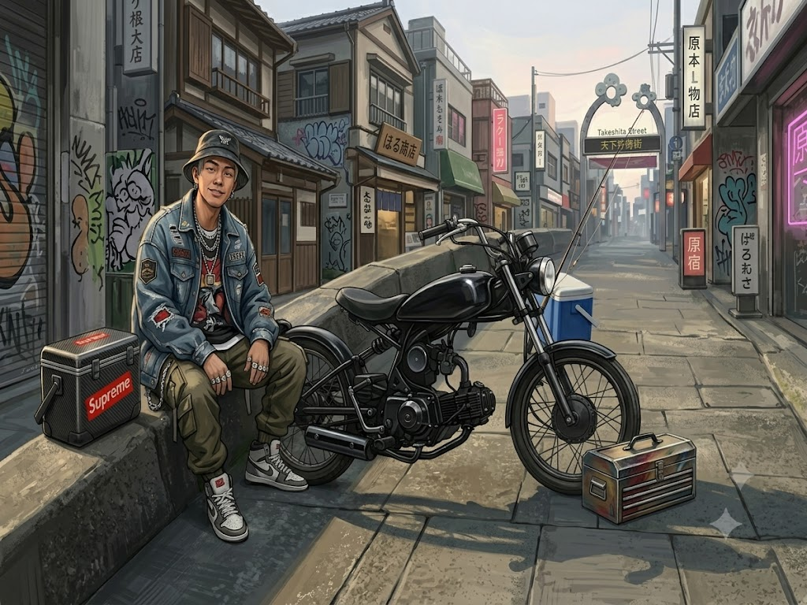
行き先は同じでも、仕上げ方でここまで変わる。
この章には2つの狙いがある。①MT-03を買ったあと、どう化けさせられるか——完成イメージで掴む（下の2枚が叩き台）。②いろんなカスタム事例を眺めて、ベース車の視点で選び直す——純正の外装では見えなかった魅力に、事例を通して気づくかもしれない。
素の“Dark Side of Japan”顔を起点に、引き算＝スクランブラーと足し算＝サイバーパンクという正反対のゴールがある。どちらもボルトオン＋自家塗装中心の可逆カスタム（画像はAIによる合成）。
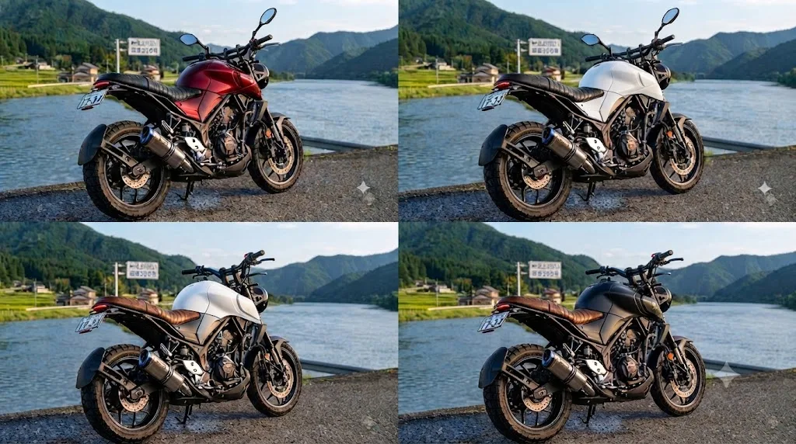
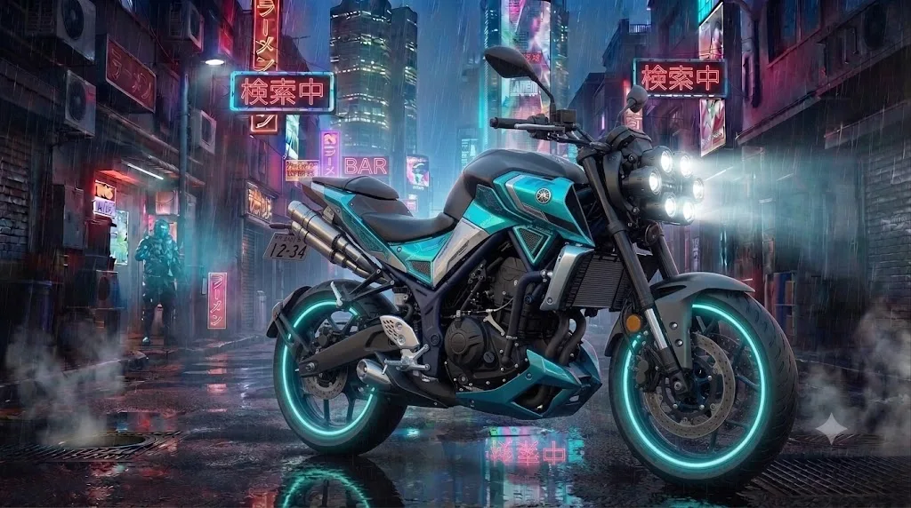
スクランブラー方向の仕様・予算（買える部品＋DIY塗装で作れる）
・丸目LED化（XSR/XJR純正流用・1.6〜6万）／タンクを艶あり深紅にウレタン塗装（2万）／黒レザーのフラットシート張替（1.5万）
・バーハンドル（画像は幅広・やや高めのスクランブラーバー——スイッチ・ケーブル延長は不要な範囲で、専用ボルトオンで約1〜1.5万。極端なアップハンドルにはしない）／ハガー（MT-03適用のボルトオン品・つや消し黒に塗装＝0.8万）／フェンダーレス（1万）／チタンショートスリップオン（JMCA認証・4万）／ブロックタイヤ前後（3万）
合計約14〜19万円。車両（MT-03 68.8万）と合わせて総額約83〜88万円——新型CB400SF（99.9万）より安く、世界に一台。
② 参考実例集 ― 他車種の完成車を動画で見る
ここから下はベース車を選び直すための参考実例集——別車種も含めた完成車の「空気」を映像で掴む集約で、タグ＝スタイルの型。収録は引き算（スクランブラー／ボバー）寄り——本文の用途に合うのが引き算側だから。MT-25/MT-03系は計画の主役なので厚めに収録した。
グラストラッカーBB スクランブラー完成車（FLAT GROUP・リール）を見る
GB350 スクランブラーカスタム（FLAT GROUP・リール）を見る
トライアンフ スクランブラー900（@yu_______ki86・リール）を見る
ヤマハ SR400（@yohei_sawamura・リール）を見る
トライアンフ ボンネビルT120 トラッカー（@classicbike_raisch・リール）を見る
——サブフレーム切り詰め＋ワンオフ2in1マフラー
Pipeburnの記事で見る ↗

インナータンク切断加工・車両込み46万円〜・限定33台
Webikeの記事で見る ↗